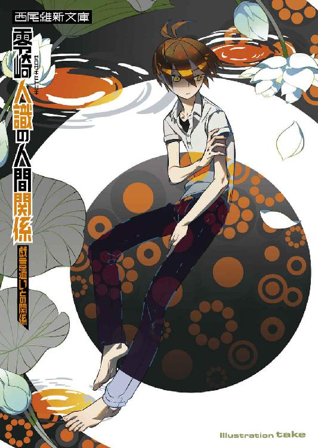
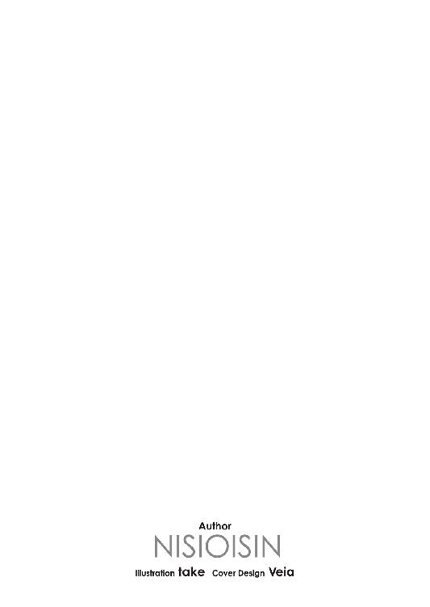
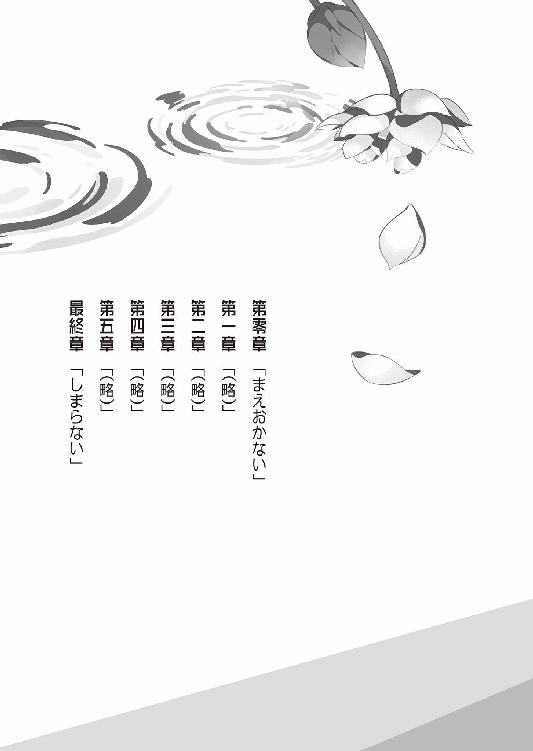
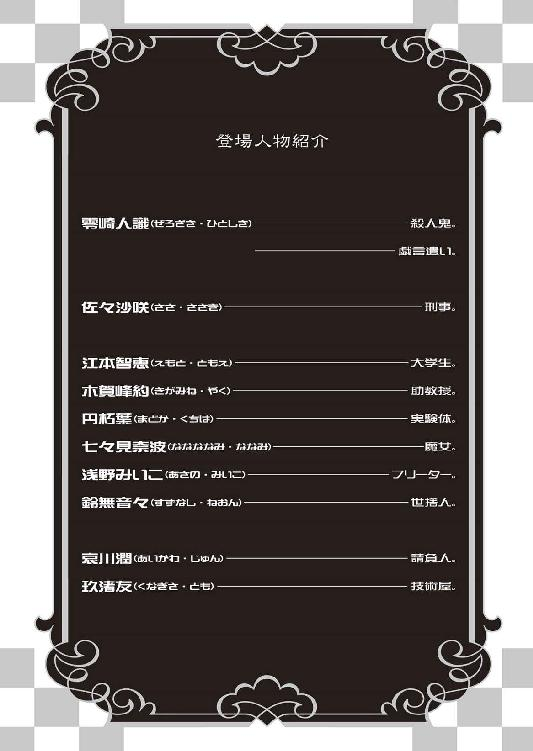
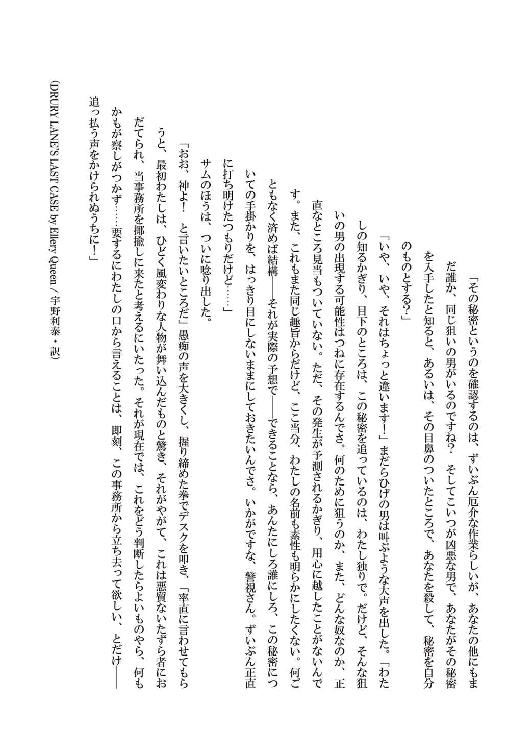
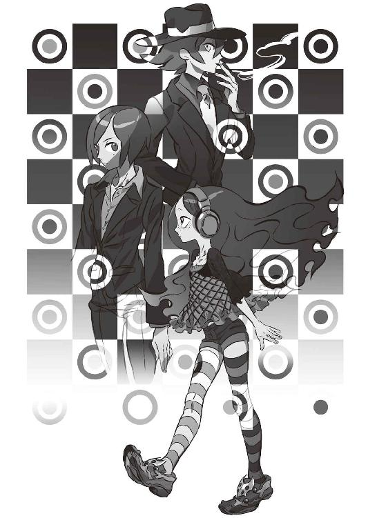

| 零崎人識の人間関係 戯言遣いとの関係 (講談社文庫) | |
| 西尾維新 | |
| 講談社 (2014) | |
本作品は、縦書き表示での閲覧を推奨いたします。横書き表示にした際には、表示が一部くずれる恐れがあります。
ご利用になるブラウザまたはビューワにより、表示が異なることがあります。
零崎人識の人間関係
戯言遣いとの関係
西尾維新






◆ ◆
佐々沙咲は名探偵にときめかない。
それは勿論、京都府警捜査第一課課長という彼女の現在の肩書きを考えれば妥当な好み、真っ当な趣味嗜好であるとも言えようが、しかしたとえそれを差し引いても──つまり彼女の職業が警察官でなかったとしても、そんな荒唐無稽極まりない存在を受け入れることができるとは思えない。
考えてみれば馬鹿馬鹿しい話だ。
考えるまでもなく馬鹿馬鹿しい。
荒唐無稽も何も。
そもそも名探偵など、作りごとの物語の中にしか存在しないというのに。
いや──だからこそなのかもしれない。
作りごとで、フィクションで、虚構で、噓っぱちで、実際的にありえないストーリーだからこそ──沙咲は名探偵という職業に対して大いに否定的なのかもしれない。
大いにありうる。
荒唐無稽であることこそが要件か。
（つまり、私は）
（娯楽作品に対してきなきなと目くじらを立てているだけなんだ──）
そう思うと自己嫌悪。
自分の大人げのなさに嫌気がさす。
大人なのに。
もっとも、思う分には自由という開き直りも、彼女の中には歴然としてある──別に彼女は、名探偵の登場する推理小説を楽しく読んでいる人間、つまりはいわゆる愛読者に対して議論を吹っかけようというわけではないのだから、ならば何にときめこうと何にときめくまいと、それは沙咲の勝手というものだ。
とやかく言われる筋合いはないし──
とやかく言う筋合いもない。
思想の自由だ。
（思想）
（だけどその一点が重要なのだ）
思想という二字熟語が問題である。
沙咲が名探偵にときめかない大きな理由の一つは、やはり彼女の立場だが──そう見られるだろうし、そう見做されて反論する気もない──少なくとも、捜査第一課の課長がミステリーに傾倒しているようでは、部下は誰もついてこないだろう。『ちょっと待って。これと似たような事件が、こないだ読んだ推理小説に書いてあったのよ』『は？』──しかし、だからあくまでも彼女自身に言わせればということになるけれど、それよりも更に大きな、最大な理由としては、彼ら彼女ら名探偵の行動様式があげられる。
要するに──つまるところ。
佐々沙咲には、名探偵の行動原理がまるで理解できないのだ。
子供の頃から佐々沙咲にはそういうところがあった。
理解できないものが、彼女には許容できない。
許せないのである。
リモコンを使えばどうして離れた場所からでもテレビを操作することができるのか、そもそもテレビの画面にどうして映像が映るのか──それがわからなかった幼少期、随分長い間、沙咲はテレビを見ることができなかった。ラジオでさえ、まず分解してからでないと使えなかった。ましてパソコンなどもってのほかだ──何台のパソコンが、彼女の手によってバラバラにされたものか、知れたものではない。
ブラックボックスの存在を許せない女。
それが佐々沙咲である。
──などというと、お前のその性質はよっぽど名探偵的だ──などと、心無く突っ込まれてしまうかもしれないが（だから己のそんな性癖を、できる限りひた隠しにしている沙咲である）、しかし、彼女が抱いているのは決して、同属嫌悪としての名探偵否定ではない。
文字通り理解できない。
範疇の外だ。
（どうして──）
（どうして名探偵は、殺人事件の解決に乗り出すのか──わからない）
わからないのだった。
だから──気持ち悪く。
そして──許せない。
推理小説においてそこは形式美であり、だから様式美であり、そもそも要件というならば犯罪捜査をすることこそが名探偵の要件なのだから、とやかくうるさく言うべきではない──などという言説は沙咲の前ではちっとも意味をなさない。それはテレビが機能することに対し、とにかくそれはそういうものなんだから納得しなさいと言われたのと同じことである。
（謎を解きたい──とか）
（知的好奇心ゆえに──とか）
その動機が理解できない。
いや、形式ばって理解できないなどという堅苦しい言い方をするほど、ことは大袈裟ではない──もっとありていに言えば、沙咲が抱いているのは、よくわからないという至極曖昧な感想だ。
よく、わからない。
堅いことも苦しいことも、言うつもりはないのである。
日本においては探偵に捜査権はないとか、刑事の現場に素人が首を突っ込んで欲しくないとか、そういう縄張り意識を主張するつもりもない──だから、フィクションであることはわかっているのだ。
だけど。
フィクションならフィクションなりの筋道を立てるべきである──と思う。
噓は上手につくべきだ。
虚構は対象を騙すためのものであって、混乱させるためのものであってはならないというのが、沙咲の持論である。
でなければ──理解できない。
（そう）
（問題は──動機だ）
（そして──目的だ）
理由。
謎を解きたい。
知的好奇心。
それ自体は大いに結構である。
それらは沙咲の性癖にも通ずるところがあるのだから──理由自体を否定するつもりはない。
（だけど──名探偵は）
（怖くは、ないのだろうか）
そこである。
ここである。
犯罪捜査に首を突っ込むということは──つまり犯罪者と首を突き合わせるということだ。
犯罪があれば犯罪者がいる。
殺人があれば殺人者がいる。
その圧倒的な事実に対して──彼らはあまりにも無自覚だ。
社会正義に突き動かされているというのならばわかる──まだ納得がいく。しかし彼らの多くはそうではない。
純粋に──知的パズルとして、好き好んで犯罪事件を探偵する。
馬鹿じゃないのだろうか、と思ってしまう。
謎が解きたいのだったら、知的好奇心を満たしたいのだったら、大人しく数独あたりにでも嵌っていればいいのだ。
何もわざわざ犯罪事件の解決に身を乗り出す必要はない。
よりにもよって──殺人事件。
こともあろうに、だ。
（そんなことをしたら──）
危ないじゃないか。
道路で鬼ごっこをして遊んでいる子供を見かけたときと同じような感覚で、沙咲はそう思うのだった。
もののたとえとして如何にも極端かもしれないけれど、しかし自覚のなさという点においては、道路で遊ぶそんな子供も、現場で探るそんな名探偵も、大差ないように感じる。
見ていてはらはらするし。
冷や冷やする。
だから──見たくない。
目もあてられない。
ほとんどの推理小説は、犯罪者と向き合うことのリスクを、本当の意味で描いてはいない──その恐怖を描いてはいない。
当然ながら、ただのパズルやクイズなどと違い、現実に起きた殺人事件が人間の好奇心を広くかき立てるのは事実だ──そうでなければ、ニュース番組やワイドショーが、ああも派手に、面白おかしく盛り上がる理由はない。
そういう派手なエリアに、センセーショナルなステージに、首を突っ込みたいと思う気持ちも──わからなくもない。
少なくとも理解はできる。
理解できるから、少しは許せる。
だけど、それがなんだというのだろう。
（私なら──）
（──私なら、仕事でもなければ、人殺しとかかわりたいとは思わないんだけど）
立場上、決して好ましいことではないが。
佐々沙咲は犯罪者を差別する。
殺人者を徹底的に嫌う。
十把ひとからげに、一山いくらで嫌悪する。
少なくともそれくらいの心持ちで、現場には臨む──そうでないと、恐怖で足が竦んで、どちらにも立ち行かなくなるからだ。
なりたくてなった『おまわりさん』だけれど。
社会正義という動機なしではとても続けていられないとも、確かに思う。
とてもじゃないが、好奇心では──足りない。
好奇心を満たしたいだけだったら──そんなもの、離れたところから、安全圏からとっくりと眺めていればいい。
犯罪者との知的なゲームを楽しみたいというのならば、それこそお門違いだ。
そもそも知的な犯人は殺人事件などという、割に合わない犯罪は犯さない──言ってしまえば名探偵には、金融経済界の巨額詐欺事件でも解決して欲しいところである。
知能犯はそこにいる。
（殺人犯は、基本的に短絡で、後先考えずに、勢い余って誕生する──普段はまったくの『普通の人』であり──）
一般人だ。
だからこそ怖い。
ふとしたきっかけで変身する──彼らが怖い。
モンスター化する、彼らが怖い。
対峙したいと思わない。
（そして──怖い彼らは）
（最後まで、怖いだけだ）
（かき立てられた好奇心が満たされることなんて、ない）
（解くべき謎なんて、殺人事件にはまるで存在しないんだ──）
日本における殺人事件の検挙率はおよそ九十七パーセント。
話にならないほどのパーセンテージである。
（それもそのはず──大抵の事件は、単純な恨みつらみの凶行でしかない）
謎もなければ不思議もない。
疑問もなければ不可能もない。
（動機から探れば──当然、あっというほどの間もかからず、捉えられる）
だから──沙咲にとって名探偵とは、ありもしない財宝を求めて危険な海に出航する海賊みたいなものである。
ありもしない謎を求めて。
危険な殺人現場に現れる。
無法者──である。
（恨みつらみ）
（つまりそれは、感情だ）
論理ではなく、感情。
感情を持つ人間を相手にしているということ。
それが、危うい。
（それもまた形式美であり、また様式美なのだろうけれど──推理小説のように、潔い犯人などそうはいない）
大抵の犯人はとても往生際が悪く、かなりみっともなく、そして見苦しく悪足搔きをして──どれほど論理的に追い詰めようとも、非論理的に取り乱して、自己弁護に終始する。
罪を否認する。
無罪を主張する。
裁判で供述を引っ繰り返す。
（だから──怖い）
（何をするかわからず、何をされるかわからないから──怖い）
その恐怖を描かずして、何が犯罪小説か。
つまるところ、社会正義を乱す社会的悪を描くなら──それは、密室でもアリバイ工作でもなく、その社会的影響をこそ、描くべきなのだ。
わけのわからん名探偵の哲学など、門前払いの願い下げである。
そんなことは──警察に任せておけ。
そのために私達は、国民の皆様から血税をいただいている。
（──とか言っちゃうと、それこそいよいよ推理小説に登場する、縄張り意識の強い警察官みたいだけれど──）
それでも沙咲は──少なくとも。
親方日の丸、国家権力という大きなバックボーンがなければ、犯罪現場に出向こうなどとは思えないのだった──後ろ盾なしでは、一歩すらも踏み出せない。自分の守備範囲は頭脳労働だなどと言い張っているのも、なるべくなら現場に足を運びたくないという怯懦ゆえだと言えなくはないし、さすがに自ら言うことはなくとも、そう言われたところで沙咲はそれに反論する気もない。
気もないし──気力もない。
安全に生きていきたいという欲求が、自分の中にある最たるものであるというのが、佐々沙咲の今のところの自己評価である。
『おまわりさん』を志したのも、それが彼女の考えるところ、日本で一番安全な職業だからに他ならない──捜査第一課に配属され、しかもそこで、異例の若さで出世してしまったのは、大いなる誤算であったが。
優秀であることが。
佐々沙咲の安全率を少しだけ下げていた。
◆ ◆
さて、何よりも安全を求める彼女が暮らすのは住人全員が警察官という公務員宿舎である。細かいことを言えば、その宿舎は現場からのたたき上げであってキャリアでも準キャリアでもない彼女が、本来入居できるクラスの宿舎ではないのだけれど、そこはそれ、近頃あちこちで導入されがちの成果主義、実力主義という奴である。
ありがたい時代だ。
沙咲にしてみれば。
２ＬＤＫ、空調・システムキッチン完備、光ファイバー常設、二十四時間ゴミ出しＯＫ──もっとも、沙咲はそんな設備にはあまり惹かれない。どうでもいいとさえ思っている。あくせく働く彼女にとって家とは、あくまでも休息のための寝床に過ぎないのである。
ただし、セキュリティ。
リスクマネジメントの環境は最高だ。
最高に安全だ。
安全が完全だ。
警察官ゆえに犯罪者から恨まれる──という可能性からの被害を、この環境によってほとんど排除できる。恨まれること自体は避けられなくとも、襲われることは避けられる。
（それじゃあ、明日もあるし──今日は早く休んじゃおう）
今日も今日とて、不思議でも何でもない、好奇心はそそられようとも知的好奇心が満たされることはない、ありふれたくだらない、まず間違いなく数日中に犯人を捕まえることができるであろう殺人事件の処理を行って、大いに疲れた。
明日も今日と同じだ。
昨日と同じ、今日と同じだ。
だからせめて──明日と今日の狭間だけは、自分の時間として消費しよう。
自分らしく、寝床で寝よう──と。
と。
そんなことをつらつらと、さして気取るでもなく考えながら、彼女は宿舎の自室のドアの鍵を開けたのだったが──靴脱ぎに揃えられていた見覚えのある、しかし彼女の所有物ではないハイヒールを目視したところで、そんな予定、ささやかな腹積もりを放棄した。
あっさりと、諦めた。
諦めが肝心だ。
（しかしまあ──なんというか）
佐々沙咲は一人暮らしである。
ゆえに、彼女のものではない靴が、この玄関口にきちんと揃えられているという現象は、至って奇妙なはずなのだが──何せこれは初めてのことではない。
驚くよりも、むしろ頷いてしまう。
ダブルロック錠など無意味。
オートロックも無為。
ありとあらゆる鍵が、このハイヒールの持ち主の前では意味をなくす。
公務員宿舎のセキュリティなど──あの人の前では、何の安全率も誇らない。
（それはあの人が危険だからじゃない──より安全だからだ）
（あの人は──世界一安全だ）
もっとも、人類最強とまで称される彼女のことを『安全』という二文字で表現するような者は、恐らく自分以外には皆無だろうけれど。
だけれど沙咲はそう思うのだ。
彼女を安全だと──思わざるを得ないのだ。
肩を落として、彼女は深くため息をつく。
すぐに休むことはできないとしても──もう無理のきく年齢でもないのだから徹夜は勘弁して欲しい。
ため息をつきつつ、そう祈った。
明日もある──のだから。
（もっとも──よく考えてみれば、明日があるというのは、実のところ、とても恵まれたことなのかもしれない）
（明日をも知れない生き方をしている、明日は明日の風が吹くとは限らない生き方を好んで選んでいる彼女に較べれば──恵まれている）
キッチン棚に日本酒はまだ残っていたかしらんと思いつつ、沙咲は靴を脱いでサムターンを回し（こうなってしまうと非常に頼りない）、ダイニングキッチンのほうへと向かった。
安土城。
ではなく──案の定。
赤い女がソファで寝転がってテレビを見ていた。
「......不法侵入ですよ、潤さん」
沙咲は溢れんばかりの呆れを隠そうともせず、むしろ精一杯、健気に主張するように口調に裏打ちしながら、他人の家でくつろぎまくっているその女──哀川潤の背中に、声をかけた。
「ぬらりひょんですか、あなたは」
「ん？」
と。
彼女はこちらを振り返る。
「おう、沙咲──お帰り」
何食わぬ顔で、ふてぶてしくもそんな風に応じる哀川潤──鍵を開ける音やドアを開く音が聞こえていなかったとは思えないが、今初めて、沙咲の帰宅に気付いたというような対応だ。
（いや、潤さんほどの手練れなら、宿舎に入る前から、既に私の帰宅に気付いていてもよさそうなものだけれど──）
そんなことはないらしい。
彼女自身は、まるでノンセキュリティだ。
と言うより、哀川潤にとって警察官・佐々沙咲は、まるで警戒の対象に入っていないということなのだろう──この距離まで近付いてようやく、認識してもらえるほどの危険度ということらしい。
危険度の低さ。
それはこの場合、軽視されているということではなく、純粋な信頼と言い換えてもいいのかもしれない。
「お帰りって」
勿論。
軽視されていようが信頼されていようが、だからと言って突っ込みをいれないわけにはいかない。
「この場合の挨拶は、せめて『お邪魔してるぜ』とかでしょう」
「邪魔なんかしてねーよ。ちょっくらテレビ見せてもらってるだけじゃん。いやあ、おもしれーな、このアニメ」
「............」
沙咲はリモコンを手に取って、テレビの電源を落とした。幼少期ならばいざ知らず、現在の沙咲はリモコンの仕組み構造を理解しているので、こうして自由に使うことができる。
人は成長するのだ。
「なんだよ、意地悪すんなよ」
「犯罪を犯さないでください」
「ちぇー。かってーなあ。そんなことだからお前は警察官なんだよ」
文句のようでいて、実は当たり前の事実を言いながら、もちろん大して反省した素振りも見せずに哀川潤はソファから身を起こし、キッチンのほうへと歩いていき、冷蔵庫を開けた。
勝手に。
勝手というか、普通に自由だ。
「うお。冷蔵庫空っぽじゃん。ビールだけがサイドに詰まってる。なんだよこれ、冷房機能つきビールケースか」
「食事は大抵外で摂りますから......最近はもう、自分では作りません」
「へー。昔はいろいろ手ェかけてたのに。ロールキャベツとか作ってたのに。なんだよ、お前、出世でもしたのか？」
「ええ。おかげさまで今は課長です」
「ふーん。偉いなあ」
適当な相槌である。
友人の肩書きに興味はないらしい。
「ああ──潤さん。日本酒なら多分、棚のほうに入ってますよ」
「あっそ」
とは言いながら、しかし哀川潤はそのキッチン棚に手を伸ばすことはなく、ソファへと戻ってきた。今度は寝転がらずに、普通に腰掛ける。
考えて、沙咲はその隣に座った。
そして、
「............」
と、隣の、傍若無人な友人を眺めるようにした。
（お邪魔します──でないにしても）
（お久し振り、ではあるはずなんだけれど）
八年ぶりくらいになるのか。
それよりもっとか。
あまりに当たり前みたいに振る舞っているからその空気に飲まれてしまっていたが──冷静になってみれば、八年。
ご無沙汰しているどころの期間ではない。
はっきり言って沙咲は、彼女はどこかで野たれ死んでしまったんじゃないかとさえ思っていたくらいだ。冗談でなく、哀川潤という女はそういう生き方をしている。
明日をも知れないどころか、今日をも知れない。
一秒後の生存さえ危ぶまれる。
何よりも安全なはずの彼女は、どこまでも危険な生き様を選んでいる。
沙咲からすれば意味不明だ。
大切な友人なので、理解不能でこそないが──意味不明だ。
「くあ。しっかしお前、帰り遅かったなー。仕事熱心もいいけどよー、どこまで出世しようと勝手だけどよー、でもあんまあたしを待たすなよ」
「待っていたのはこちらです」
「なに？ 待っててくれたの？」
「......事前に連絡をもらえていれば、ちゃんと時間を作りましたよ」
「あー。あたし、そういう段取りみてーなの苦手なんだよなー」
考えたくもないというように、面倒そうに天井を見上げる哀川潤。
サービス精神旺盛な彼女ではあるけれど、今回に限っては別段、仕事帰りの沙咲を驚かそうと思って、つまりサプライズとして、この部屋に控えていたわけでもないらしい。
（まったく──）
（──これじゃあまるで、昨日も会ったばかりのような応対だ）
明日をも今日をも知れない彼女の、唯一確実な──昨日。
もっとも、昨日のことなど、哀川潤は忘れてしまっているかもしれない。
私とこの人とでは時間の流れ方が違うのだろうか、と、沙咲はそんなことを考えてしまう。
実際、哀川潤の老けなさと言ったらない。
八年前からほとんど変化がない──髪型は少し変わっているようだが、それだけだった。
（私は八年分、ちゃんと歳を取ったというのに）
そこに関しては圧倒的かつ圧迫的な不公平を感じる。
「......もし、お腹が空いているようでしたら、出前でも取りますか？」
へとへとになって帰宅して、今からまた出掛けると言うのは常人の沙咲にとってややきつい。しかし冷蔵庫を探っていたところを見ると、哀川潤はひょっとすると現在（沙咲を待ちわびて）空腹なのかもしれないと考え、沙咲はそんな気遣いを見せた。
なんで不法侵入者に対してこんな気遣いを見せなければならないのだろう、本当にぬらりひょんかこの人は、と、心の片隅で思わないでもないけれど──まあ、それは。
（なんとなく──だ）
八年ぶりであろうと変わらない。
外観以上に変わらない。
哀川潤は──少なくとも佐々沙咲のような性格の持ち主から見れば──無邪気な子供みたいなところがある。
言うまでもなく、わかっている。
哀川潤という『人類最強の請負人』の偉大さや、あるいは犯罪者そこのけの恐ろしさのことは、沙咲は身に沁みてわかっている──大体、今の沙咲の立場があるのも、振り返ってみれば哀川潤のお陰というのもあるのである。哀川潤には一時期、自分が上げた手柄のそのすべてを「面倒だから」という理由で沙咲に無理やり押し付けていた時代があるのだ──、言ってしまえば、自身の優秀さもさることながら、沙咲の安全率を下げている大きな要因のひとつが、哀川潤の存在でもあるのだ。
畏敬せずにはいられない。
が、一方で──
生き様や性質はともかくとして。
そういう活動現場を離れたときの、いわゆる『オフ』の状態の哀川潤は、そこかしこがどこまでも子供じみていて、社会人にはありえないほどに稚気に満ちていた。
面倒だから、とはそれこそよく言ったもので。
沙咲が面倒を見ていないと、すぐ死んでしまいそうな──そう。
世界一安全でありながら、そんなリスクも見え隠れしていた。
オンとオフの落差が激し過ぎた。
漫画ばかり読んでごろごろしている──少なくとも、どれほど回想してみたところで、哀川潤が自身を厳しく律しているという図を思い出せない。
修行が足りないと口癖のように言いながら、修行をしている様子がない。
現場こそが鍛錬の場ということなのだとは思う。
練習など必要なく、本番に臨める人間。
練習のように本番をする人間。
実戦で成長する人間。
そういうことなのだとは思う──だから沙咲の前で晒す自堕落な姿は、そのまま沙咲を危機として認識していないという、友情度を表しているということなのだろうとは思う。
意外なことに、哀川潤は。
常在戦場では──ないのだ。
だけど。
「んー。腹は減ってるけど、まあ我慢できねーってほどじゃねーよ。どうしても我慢できなくなったら、そのテレビでも食うわ」
「やめてください」
「えーっと」
あたし一体何しにきたんだっけな──と哀川潤は頭をかく。
会話の枕としていっているのではなく、本当に、自分がどうしてここに来たのか、思い出せないらしい。
驚かない。
八年前からそうだった。
いや、八年前どころか──十八年前。
出会ったときからそうだった。
哀川潤は、掛け値なく、その場のテンションだけで生きているようなところがある──所有する信念があまりに強固過ぎるため、逆に通り一遍の筋道など、意味をなさないのだ。
（............）
（......まあ）
振り回されるほうはたまったものではないけれど。
「あー。ちくしょー。思い出せねえ」
言って哀川潤は再びソファから腰を浮かす──どうするのかと思えば、彼女は両手を上にあげて伸びをしながら、廊下へと出て行った。
そしてそのままバスルームに直行する。
どうやら熱いシャワーでも浴びて、頭をすっきりさせようという寸法らしい──っておい。
自由過ぎるだろ。
八年ぶりに会う彼女を、八年前から変わっていないと判断した沙咲だったが、どうやらそこにいくらかの修正を加えなければならないようである。
哀川潤の自由度は更に増している。
それは──
（それはつまり、安全率も上がっているということなのだろう）
羨ましい限りだ。
ほのかに妬ましくさえある。
ほどなくして水音が聞こえてきて（ふざけるな）、ひとりダイニングに残された沙咲は深く深く肩を落とし、それから携帯電話を取り出した。
充電器に繫いでから、近所の中華料理屋に出前をお願いする。その店は本当は出前を受け付けていないのだけれど、沙咲（と、その同僚）はお得意様なので、多少の無理は聞いてくれる。
哀川潤がシャワーを終える前に、出前は到着した──というより、どうやら彼女は、風呂にまで入ったらしい。
濡れ髪に、沙咲のパジャマを着てダイニングに戻ってきた哀川潤は、テーブルの上に並んだ中華のフルコースに対して、
「およ」
と驚く。
「なんだこりゃ。魔法のテーブルかけでも使ったのかよ」
「まあ、そんなところです」
沙咲はそう応える。
「どうぞ、召し上がってください──食べれば記憶も蘇るんじゃないですか？」
「人を食欲魔人みてーに言ってんじゃねえよ、この魔法使いが。いっただきまーす」
突っ込みもそこそこに、並べられた料理に手をかける哀川潤。
くつろいで、お風呂に入って、ご飯を食べて。
自堕落というか、破天荒というか。
ただ自由というより──自由自在だ。
そういうところもまた、羨ましいとも思う。
この羨ましさこそが、八年間会わずとも久闊を叙するまでもない、彼女との友情の原点なのかもしれないと、沙咲はそんなことも思う。
（出会った最初の頃に感じたような憧れこそ、今はもうないけれど──それでも）
（私はこの人が好きなんだ）
改めて、沙咲はそう自覚した。
「思い出したーっ！」
ラーメン、サラダ、テンシンハン、そしてチャーハンまでを平らげたところで哀川潤は──いきなり、雄叫びをあげた。
米粒は盛大に吐き出された。
あとで掃除が大変である。
「......思い出したんですか」
「そうだ！ そうだった！ あたしはお前に謝りに来たんだった！」
大きな声でそう言って、哀川潤は食事を取りやめ、レンゲをテーブルに置く。
本当に食事をしたら記憶が蘇ったらしい──別に沙咲も、本気で記憶が蘇ると思って食事を勧めたわけではなかったけれど、蘇ったと言うならば、まあそれはそれでいい。
ただし、その言葉は気になった。
謝りに来た？
「謝りに来た？」
「うん。そうだ。あたしはお前に謝んなきゃいけないことが、ふたつある」
「ふたつ？」
もっとあるだろ？
と思うものの、そんな風に混ぜっ返すことに、この場面では意味はない。
それに──ふたつもあれば十分とも言える。
そもそも、哀川潤が謝るという行為に出ること自体が珍しいのだ。よっぽどのことがない限り、哀川潤が自分から謝るなんてことはない。
と言うか。
長い付き合いの中、哀川潤が沙咲に謝ったことなど、確か──否、確実に──ただの一度もない。
その最初の一度が、そして二度目までもが、今日訪れようとしているのだろうか？
「あまりいい予感はしませんが......悪い予感がひしひししますが、なんですか？ どういう理由で、潤さんが私に謝らなければならないんですか？」
おっかなびっくり、沙咲は訊く。
なんとか平静を装ってはいるけれど、恐る恐るもいいところだ。
「ほれ、憶えてんだろ。いつだったかなー。一週間くらい前だったか？ この京都で、十人以上の民間人が通り魔の被害にあったっつー大事件があったの、憶えてる？」
「............」
憶えている。
憶えてはいるが──それは八年前の事件だ。
一週間前とは、随分と盛大に記憶を端折ったものである──もっとも、記憶の鮮度としては、確かに今でも一週間前のことのように思い出される、文字通りの『大事件』ではあった。
沙咲はその『大事件』の、直接の担当ではなかったけれど──しかし、通り魔の凶行を止めるために一役買って出たのである。
（まあ、買って出たというほど、積極的な正義感を見せたわけじゃあないけれど──）
正義感でもなく──社会正義でもなかった。
具体的には、そして端的には。
佐々沙咲は目の前の請負人・哀川潤に、その『大事件』の解決を依頼した。
その結果として、確かに『大事件』は収束を見せたのだったが──
「謝らなきゃいけないことってのは、それなんだ」
哀川潤は神妙な顔つきをして、言う。
「実はな。あたしはあのとき、事件を解決したあとで、お前には噓の報告をしたんだ」
「......いえ」
沙咲は首を振る。
「薄々......というか、明白に気付いてましたけど」
元々、哀川潤がこちらの思惑通りに動いてくれるだなんて思っちゃいない──哀川潤を制御することなど、誰にもできない。それでも結果として収束した以上は、沙咲としては、その点において文句を言うつもりはなかった。
その辺はお互い、暗黙の了解──
の、つもりだったのだが。
（......どうやら、気にしていたらしい）
しかも八年間も。
本当に読めない人だ。
沙咲は自分のことを空気が読める人間だと思っているし、行間紙背を読むのも得意だが、やはり哀川潤だけは読めない。
ＡＹだ。
「ごめんね」
友人に噓をついたことに対して十年近く罪悪感をおぼえていたらしい哀川潤は、その割には気軽にそう謝った。
「許してくれる？」
「許すも許さないも──」
ない。
そもそもそんな問題じゃないような気もする。
名探偵という存在に対して否定的な沙咲が、それでも犯罪事件の解決に対して哀川潤という請負人に頼ったという点において、あれは自分にとってのルール違反だと考えている。
担当でこそなかったが。
しかし自分がやりたくない仕事を人に任せたのは確かだ。
だから筋違いなのである。
あのとき、哀川潤がどういう風に動いていたとしても──事後に受けた報告と、どれほど違う動きを見せていたとしても、それは沙咲が文句を言えるようなことではない。
それに、そもそも──八年前だ。
「今更のことでしょう──まあ、確かに？ あの事件は、犯人が逮捕されるでもなく、なんとなく、ただ曖昧であやふやなままに終わってしまったところがありますから──」
検挙率九十七パーセント。
の、残り三パーセントである。
「──気にしている人は、未だ気にしているようですけれど」
それでも、それも仕方がないと思う。
沙咲が把握しているだけでも──通り魔の凶行の裏側には、表に出せない裏事情があった。それは知りたくもないような内情である。
憶えてこそいるが。
思い出したくもない。
知りたくもないし、思い出したくもない。
「ふむ。知りたくもないし、思い出したくもない──だとは思うけど、知ってもらうし、思い出してもらうぜ」
哀川潤は言った。
置いたレンゲを再び手に取って。
「もうそろそろ、そういう時期なんでな」
「......どうやら拒否権はなさそうですね」
八年も前のことなのに──ではなく。
八年も前になったから──ということらしい。
こうなると、嫌でも聞かされてしまいそうだ。
逃げることもできそうにない。
（......ふむ）
（まあ──いいだろう）
知りたくも思い出したくもないけれど──
聞きたくないと言えば、噓になる。
知的好奇心とは言えない好奇心は、確かに──沙咲の中にはあるのだ。
そして哀川潤が『時期』とそう言った以上──少なくともそのエピソードから、沙咲が警戒しなければならないようなリスクは去っていると言うことなのだろう。
時効には全然早いが。
時期は──来たのかもしれない。
「今日は、その話をしに来たということだったんですね」
徹夜の覚悟を決めながらの沙咲の台詞に、しかし哀川潤は繰り返して、
「いや？ 言ったろ。あたしはお前に謝りに来たんだよ」
と言うのだった。
「謝んなきゃいけないからな」
「......確かふたつって言ってましたよね、潤さん。ひとつがそれだとして、もうひとつの謝罪用件はなんなんですか？」
「うん」
真面目くさって、頷く哀川潤。
「謝るの遅くなって、ごめん」
◆ ◆
それでは時間軸を八年前に戻そう。
歴史ある古都を襲った殺人鬼の凶行、その裏側を──無粋に野暮に、暴き尽くそう。零崎一賊の鬼子・零崎人識の、約一ヵ月にも及ぶ戦いをあますところなく描写しよう。
京都連続通り魔事件。
零崎人識、最大の戦い。
最大の敵。
何を隠そう、零崎人識はそのとき、恐るべき相手を敵に回して戦っていたのだった──必死になって、決死の覚悟で戦っていたのだった。
暴力の世界の住人でもない。
財力の世界の住人でもない。
権力の世界の住人でもない。
彼らは最弱と言っていいほどに弱く、逸脱せず、成長せず、変化せず、仮に逸脱し、たとえ成長し、いやしくも変化したところで、そんなものはすぐに元に戻り、反省も後悔もその場しのぎで、とても簡単に徒党を組み、そうかと思うと簡単に裏切り、何が起きても何事もなかったことにし、すぐに忘れ、とっさに意見を翻し、信条を持たず、怯えては逃げ、狂い、非常に適当で、約束を守らず、ルールを無視し、高いばかりのプライドを簡単に捨て、努力もなしで成果を求める、欲深の、しかし慈悲深い、善良でありながら悪逆で、感情移入とそれに伴う飽きを矛盾なく実現する、深く考え過ぎる割には何も考えておらず、行動力がない割には結果だけは出す、感情的な癖に中途半端に頭のいい、愛すべき群体としての個体。
ありったけの敬意となけなしの軽蔑を込めて──人は彼らを『一般人』と呼ぶ。
◆ ◆
江本智恵という名を持つ鹿鳴館大学の一回生に言わせれば、推理小説において美化されているのは名探偵ではなく殺人犯である。
殺人犯という人間。
あるいは、殺人という犯罪。
それらがまるで、偉人や偉業のように描かれることについて、彼女は大いに不満を抱いている。
否、不満などという消極的な言葉ではまるで足りない──欠乏だ。
現実的には哲学を持った殺人犯などそうはいないだろうし、殺人に限らず犯罪行為自体、大抵は突発的な思いつきで、これと言った自覚なくなされるものである。
格好のよい犯人や雅やかな犯罪など、絵空事もいいところなのだ。
無論。
推理小説は絵空事だけれど。
江本だって別に、そんなことについて本気で憤っているわけではない──そもそも彼女が『何か』について、本気で憤ることなどない。
そういうことのできない人間なのだ。
欠乏。
感情が欠落し、感動が欠損している。
欠陥人間──なのだ。
（まあ）
（だからこんなの、言葉をいじくって遊んでいるだけなんだけど──）
それにしても──いや、だからこそ、ただの思考ゲームだからこそ、思う。
そんな風に思う。
強く思う。
だって、名探偵なんて現実にはいなくとも、殺人犯は現実にいるのだから──だからそれを殊更、持ち上げてみせたり、知的に描いてみせたり、そんなことをするのはリアリティに対して不誠実でさえあるだろう。空想の存在であるところの名探偵と同格の存在として、現実の存在であるところの殺人犯を描くことに、どんな意味があるのか──はっきり言ってわからない。
違う。
わかりはする。
結局のところ──人間は、自らの敵には強くあって欲しいのだ。
勝ち負けの問題ではなく。
類は友を呼ぶ、あるいは友人を見れば本人のほどが知れるというのはよく知られた諺だけれど、それを言うなら、何を敵としているか、何と敵対しているかというのも、その本人の資質を計測する上で、大きなポイントだ。
敵がショボければ自身がショボいということであり──敵が偉大であるのなら自身も偉大であるということである。
敵とは目的であり、目標。
ならば盛大であるべきだ。
ならば強大であるべきだ。
夢は大きなほうがいいし、敵も大きなほうがいい。
名探偵とて、スタンダードな窃盗犯を専門とするよりは、センセーショナルな殺人犯を専門としたいのだろう──そしてその殺人犯には、短絡的で粗雑であって欲しくはない。
短絡的な人間を相手にするのは短絡的な人間だし──粗雑な人間を相手にするのは粗雑な人間であると、世間は。
つまり読者は、そう捉えるだろう。
引き立て役は引き立て役であるがゆえに、ある意味においては主役以上にソフィスティケートされて描写されねばならない。
だから犯人は徹底的に美化される。
現実にはありえないほどに美化され、強化され、肥大化される。
知能に富んでいたり。
思想を有していたり。
社会的地位に恵まれていたり。
あるいは逆に、悲劇的な背景を背負っていたり。
人間としての深みを有していてこそ、初めて犯人たるだけの資格が与えられる。
（それは多分──）
（若いうちに取っておいたほうがいい──資格だ）
そんな風に思う。
冗談交じりにではあるが。
そして、自虐交じりにではあるが。
そんな風にしか思えない。
何故なら江本智恵に敵はいないからだ。
言うなれば無敵である。
しかしこの場合の無敵とは、つまるところ孤独の同義語に他ならない──敵がいないということは人間を相手にしていないということであり、人間を相手にしていないということは人間に相手にされていないということである。
（それではわたしは、いないのと同じだ）
（いてもいなくても──同じなんだ。というよりは、いないほうが──）
正しい。
ここでこうしていることが間違っているような気さえする。
敵が自身を測る定規なのだとすれば、江本智恵はゼロである──これ以上なくこれ以下でもなく、ゼロである。
そのゼロ性こそが江本智恵を表現する、最大の記号なのだと彼女は自覚していた。
否。
自覚という言葉は正しくないかもしれない。
自覚という言葉が既に、自身の実在を前提としている──だけれど江本には、その自身の実在さえもあまりはっきりとは感じられないのだ。
自分のことが他人事のようにしか考えられない──他人事のようにさえ考えられない。約二十年間、江本はずっと、そんな風に生きてきた。自分の肉体と精神を、俯瞰しながら生きてきた。
見下しながら──生きてきた。
訳知り顔のカウンセラー気取りなら、そんな江本のパーソナリティの原因を、子供の頃の長期入院、闘病生活に見出すかもしれない。死の淵まで追い詰められた、今でも身体に不具合を残す難病にこそ、孤独の理由を見出すかもしれない。
それは的外れでこそないが、正解でもない。
如何にももっともらしいが、それはあくまでもっともらしいだけだ。
（わたしの敵は──病気ではない）
（闘病中でさえ、病気はわたしの敵ではなかった）
（だって──何故なら）
（わたしにとって長期入院は長くなかったし、闘病生活は闘いではなかったし、難病は難しくもなかった──）
ゼロだった。
勿論、普通の人間であり、民間人であり一般人であるところの江本智恵は、命の喪失、つまりは死について、そこまで虚無的に考え、捉えてはいない──彼女は別に達観しているわけではないのだ。
死ぬのは嫌だ。
だけど──死ぬのが怖くはない。
死を受け入れることはできなくとも、だからと言って死を突き放すことはない。
（突き放すことがないんじゃなくて──突き放すことができないだけだったりして）
そんな風にも思う。
江本は自分の弱さを知っているから──敵がいない自分の弱さを知っているから。
（弱いんじゃなくて──だからゼロ）
強い弱いの問題ではなく。
あるかないかの問題。
オンかオフかの問題。
一かゼロかの──問題なのだ。
（わたしは、だから──名探偵にもなれないし、殺人犯にもなれないんだろうな）
（何故なら、わたしにはそれだけの値打ちがないから）
もしも江本に、推理小説という舞台において役が振られるとすれば、きっとそれは名探偵でも殺人犯でもなく、無論助手や共犯者でもなく──目撃者や証言者でさえなく。
被害者だろう。
と、そう思う。
殺される立場──それはよくよく考えてみれば、推理小説における最小の記号であり、最小単位である。
最小の脇役だ。
殺されるため、ただそれだけのためだけに登場するキャラクター──殺人犯が名探偵の引き立て役であるとするなら、被害者は殺人犯の引き立て役であり、つまり一番の貧乏くじである。
損な役回りだ。
殺されるということは殺されるに足るだけの理由を有していなければお話がお話として成立せず、絵空事が絵空事として成立しない──だから多くのケースにおいて、被害者は加害者以上の悪党として描かれることとなる。
加害者以上の悪党として──加害者以下の小悪党として。
容赦なく、しかも適当に──型に嵌めたが如く、ステレオタイプに、実に典型的に描かれる。
殺されても仕方のないような、いい加減極まりないキャラクター性を持たされる。
実際問題、推理小説の冒頭を読んで、それで犯人を当てることはできなくとも──ただのあてずっぽうで、被害者を言い当てることは、そんなに難しくない。
誰が殺される物語なのかは。
言い当てれる。
酷いものになれば、登場人物一覧表に、プロフィールとして『被害者』と書かれていることさえあるのだ。
第一の被害者。
第二の被害者。
第三の被害者。
一体なんなのだろう──そのあまりに記号的な記号性は。
愛のない描写は。
殺されるために登場させられるキャラクターなど、やられ役や嚙ませ犬に較べても、遥かに格が下ではないか。
（だけど、それこそ──）
（それこそわたしに相応しい）
何かの間違いで生きているような──何かの間違いで死んでいないような感覚が、江本にはある。中学時代の入院生活を除いて考えても、その感覚は彼女の胸中に確実にある。
本来とっくに死んでなければおかしいはずなのに──それが失敗して、生きているような、そんな感覚。
わたしは何かの間違いでここにいる。
失敗で生きている。
みんなが普通にやっていることができなくて、みんなが考えているようなことが考えられず──劣等感と欠落感に満たされながら、生きている。
殺されても仕方ないどころの話じゃない。
誰にも殺されることなく、どんな殺人犯を引き立てることもなく、今、こうして生きていることが──不思議なのだ。
（勿論──わかっている）
（こんなのは──ほんの一過性の感情だ）
思想でさえない。
江本がまだ若く幼いから──他にすることがないから考えてしまっているだけの、深みに嵌ってしまっているだけの──妄想だ。
現実の人間に対し、推理小説における役どころを振り当てることに、一体どれほどの意味があるというのだろう。
なんなんだ、そのたとえ話は。
そんな比喩にどんな価値が、どんな値打ちがある。
名探偵は現実にはおらず。
殺人犯は現実には醜悪で。
被害者は現実には不運なだけなのだ。
（妄想に過ぎない──考え過ぎなだけ。日常が忙しくなれば、すぐに忘れちゃう）
その場しのぎで思っているのではなく、そのことについての確信はある。
多分──こんなよしなしごと。
大学を卒業する頃には忘れている。
社会に出て、働くようにでもなれば。
家庭を持ち、子育てにでも励めば。
いや、大学を卒業するのを待つまでもない──素敵なオトコノコと恋でもすれば、こんな根暗な考えからはあっさり脱却できてしまうのだと思う。
まあ、要するに──他に考えることがあれば、それだけのことで簡単に優先順位が下がってしまうだけのことだ。
プライオリティが高いようで低い。
（逆に言えば──今のわたしには、他に考えることが何もないということなんだけど）
だけど。
怖いと言えば──それが怖い。
怖いと言わなくとも怖い。
（自分の考えていることの、果てしない軽さが──怖い）
（ありえない軽さが怖い）
（今、わたしの大部分を支配している感情は──わたしというわたしを形成している感情は、とてもたわいなく、他の何かが現れれば、乗っ取られる──雲散霧消して）
消える。
なくなる。
最初からなかったかのように。
それが怖い。
それが恐ろしい──そら恐ろしい。
江本は自分の中に一本通った軸のたわいなさ、どうしようもない脆さを、よくよく自認していた。
だからと言って、それを取り立てて補強しようと思うわけではないのだけれど──それでも、それについて思うことがないわけではない。
特に、友人。
高校生の頃からの友人でもある、大学のクラスメイト──葵井巫女子と話しているときなどには、それをよく思う。
あまりにも真っ直ぐで、あまりにも前向きで、あまりにも眩しい彼女の前では──それこそ江本は消えてしまいそうになる。
素直に、葵井のようになりたいと思う。
だけどそれは同時に、自分の消滅を願っているにも等しいのだ──
「変わりたいと思う気持ちは、自殺だよね」
と。
これは勿論、葵井巫女子の台詞ではない。
葵井はそんなこと、口が裂けても心が裂けても言わないだろう。
同じく大学のクラスメイトではあるが、葵井とはまるでタイプが違うであろう、とある少年の言葉である。
彼の場合友人と言うわけではないので、これは江本に向けられた言葉でさえもない──教室の中で、たまたま江本がそばを通り過ぎたときに、彼は独り言のように、そう呟いていたのだ。
冷や水を浴びせられたような気分になった──あるいは。
ミミズの詰まった壜の中に、腕を突っ込んだような気分になった。
偶然を呪った。
彼にとってはただの単なる、悪気も何もない、いつも通りの何気なさだったに違いない、単に思ったことをつい口に出してしまっただけに違いない、ただの独り言を──たまたま聞いてしまったという、そんな偶然を呪った。
（最悪だ）
と思った。
だって江本にはわかってしまうのだから──彼がそれを、心の底から、本気の本心でそう思っているということが。
まるでぶれることなく、迷いもなく──彼がそんなことを強く思っているということが。
その、つい口に出してしまっただけの独り言が、ただの戯言ではないということが──わかってしまうのだから。
ただの戯言ではなく。
本当の戯言だと──わかってしまうのだから。
変わりたいと思う気持ちは、自殺。
自分殺し。
自分探しならぬ──自分殺し。
確かにそうだろう。
その通りだとは思う──けれど、そんな言い方はないんじゃないかと、江本はやや理不尽に、彼のことを恨みさえした。
その言葉は、高校を卒業し、心機一転、これから大学生活に臨もうという江本の心を折るには十分なものだったからだ。
（結局のところ──）
（わたしは自分が好きなんだろう）
ごちゃごちゃとよしなしごとを考えている自分が、可愛くって仕方がないのだろう。
自虐は自愛の裏面でしかない。
所詮自己否定など、そうそうできるものではない──どうしたところで、江本智恵は、あくまでも一般人なのだから。
（わたしは変われないのではなく）
（変わりたくない──のだ）
今の、弱くて脆い自分が好きなのだ。
だから変わりたくないし、失いたくない。
あの戯言遣いのクラスメイトとは──違う。
クラスメイトとは言え、その独り言を聞き拾っただけで、ろくにお喋りをしたわけでもないのだが──それでも、江本にはわかる。
直感的に、理解できてしまう。
彼はきっと──変わることを恐れまい。
何故ならあれは、自己否定の塊だ。
だからこそ──変われない。
江本の性質とは、似て非なる孤独の性質──あるいは同一なのかもしれないけれど、レベルとスケールがまるで違う。
自己否定が極まり過ぎていて、自己の体内に収まり切っていない──彼は居ながらにして、周囲にさえ悪影響をもたらすだろう。
周囲の個性を根こそぎにするだろう。
あれではすべてが──なるようにならない。
少なくとも呟く独り言を聞いてしまっただけで、江本の根幹はかき乱された──一体なにがどうなればあんな人間ができあがるのか、はなはだ不思議だった。
それでも──それだけに、変な魅力のあるクラスメイトでもあった。
あえて素敵なオトコノコだとは言うまいが、それでも無視を決め込もうというほどに、彼に対して排除的にはなれない──教室の中ではつい彼の姿を目で追ってしまうし、席が近くなれば、らしくもなく胸がどきどきする。
このどきどきは、恋のどきどきではないだろうけれど──彼の持つ奇妙な求心力は、無視も否定もできるものではない。
人間的魅力とはまるで違う、非人間的魅力。
他人との、どんな人間関係をも拒絶する、異様な雰囲気──人間の振りをして生きていて、しかもそれに豪快に失敗している。
そんな印象だ。
ひきつけられはするが、それはきっと危険な誘惑なのだ──。
近付きたくない半面で、彼と話してみたいと思う江本の気持ちは──きっと、できたばかりのかさぶたを剝がしたくなる気持ちに近いのだろう。
（認めよう）
（わたしは彼と──膝を交えて腹を割って話したいと考えている）
腹を割ってという言葉には、しかし失笑を覚える。
自分の中から、どんな黒いものが出てくるのか想像もつかないからだ──きっと彼の腹の中は、空っぽだろうと思うけれど。
（わたしが──被害者だとすれば）
（彼は──殺人犯だ）
殺人犯の役回りだ。
それこそ推理小説にでも登場すれば、彼はこれ以上ないくらいに美化されて描かれるのだろう。苦悩の美少年として描かれるのか、クールな皮肉屋として描かれるのかは知らないけれど──
実在し得ない名探偵の敵役として。
相当に際立ったキャラを立てられるに違いない。
（だけど違うんだ）
（現実は違うんだ）
推理小説ではない場においては、あんな彼は、ただの醜悪であり、ただの罪悪であり、ただの最悪でしかない──周りは迷惑なだけである。
それは江本が、殺人犯に殺される被害者であるから、そう思うだけなのかもしれないけれど。
（いや、でも）
（あの戯言遣いなら──名探偵さえ殺すかもしれないよね）
そうも思う。
◆ ◆
とかなんとか、別にミステリーマニアでもない、稀にドラマ化されてブームになった推理小説に目を通す程度の読者である江本が、こんな風に色々と考えたのには、もちろん理由がある。
理由が──目の前にある。
目の前にいる。
「──傑作だぜ」
と。
スタイリッシュなサングラスをかけた、顔面刺青のその少年は言った。
江本と同じくらいの身長で、強靱さなどまるで感じさせない華奢な瘦身──タイガーストライプのハーフパンツ、無骨な安全靴。
上半身には赤い長袖のフードつきパーカーを着用していて、その上に黒色のタクティカルベストを羽織っている。
サイドを刈ったまだら色の長髪を後ろで束ねていて、晒された両耳、右には三連ピアス、左には携帯電話用のストラップを二つ、施していた。
見るからに只者ではない。
危険な香りの漂う少年だった。
いや、格好や佇まいなど、この場合は瑣末な問題なのだ──危険な香りなど、別段気にするようなことではない。
気にするべきは。
怯えるべきは。
辺り一帯に漂う、血の匂い。
肉の匂い──内臓の匂い。
有体に言って、死臭。
そちらのほうである。
「かはは──思い返してみれば、実はこれが初めてなんじゃねーか？ この俺、天下の零崎人識クンが、殺して解して並べて揃えて晒してやってる場面を目撃されてしまうなんてのはよ──半端ねーぜ、お前」
顔面刺青の少年はおかしそうに、そう言った。
そう言った彼の足元には、死体があり。
無残に解体された死体があり。
そして彼の手元にはナイフがあった。
手袋を嵌めた彼の手には──鋭利な刃物が、握られていた。
何が起こったのかなど、考えるまでもない。
彼が何をし、死体が何をされたのかなど──想像する必要さえない。
およそ非現実的な現実だった。
（どう──）
（こういうとき、どうすれば──）
頭が回らない。
江本は、自分は欠落した人間ではあるけれど、それゆえに知恵の回るほうだとは思っている──その名の通りなんて洒落たことを言うまでもなく、どんなときでも冷静に動ける行動力があると思っている。
それでも、情けない。
完全に動揺してしまっていた。
生まれて初めて見る殺人現場と──生まれて初めて見る殺人犯に。
完全に動揺してしまっていた。
「あ──あ。う」
ただの偶然である──戯言遣いのクラスメイトの独り言を聞いてしまったのと同じく、ただのいわれなき偶然である。
日曜日ではあったが友人・葵井達と一緒に、サークル見学ということで、今日は大学に登校した江本だった──しかし思いのほか時間がかかってしまい、大学を出る頃にはすでに日はとっぷりと暮れていた。西大路丸太町にある学生専用マンションに帰るため、江本は、いつもは避けている近道を使ってしまった──というだけだ。
偶然だ。
しかし、考えてみれば、月も出ていないこんな夜に、いくら近道とは言えどうしてこんな路地裏を通る決断をしてしまったのか。別に見たい番組があるわけでもなかったのに。夜道が危ないから裏道に入るなど、何をやっているのかわからない。
偶然というより浅慮ではなかったか。
悔やんでも悔やみきれない。
それとも何かの引力でも働いたのか──こんな凄惨な殺人現場に居合わせてしまうなんて。
こんな殺人犯と。
顔を合わせてしまうなんて。
「殺人犯？」
顔面刺青の少年──
零崎人識は言った。
「ちっちっち。そいつは違うな。俺は殺人犯じゃねえ──殺人鬼だ」
気取った風にそんなことを言われても──江本にはそんな区別はつかない。
だけど言わんとすることがわからないわけでもなかった。
零崎の足元で解体された死体──もう男女の区別も老若の区別もつかない、元が人間だと言われなければそうともわからないほどに解体された死体。
今でさえ。
死体だと言われなければ死体だとわからないほどに解体されたその死体は──ただの現実的な殺人犯には生み出せまい。
ただの非現実的な殺人鬼でなければ。
作り出せないペーストだ。
（殺人鬼なんて名称は、殺人犯の言い換えでしかない──だけど）
だけど確かに。
今、江本の目の前にいる顔面刺青の少年は──純粋に、殺すだけの存在のように思えた。
殺すだけで。
人間でさえ、ない。
「推理小説」
ひゅん──とナイフを手の内で回転させながら、零崎は言った。
「あんた、推理小説、読む？」
それが自分に向けられた質問だと気付くのには、少し時間がかかった──というより、そもそも会話が成立する相手だったことに、驚きを禁じえなかった。
コミュニケーションが可能な相手には、とても見えなかった──彼にとってのコミュニケーションとは、ナイフを突きつけること、そしてナイフを突き刺すことだけではないのかと。
そう見えた。
（けれどそれも──幻想だ）
（思い込みでしかない──生きて、こうして向き合って、コミュニケーションの取れない相手なんているものか）
それは必ずしも嬉しからざる事実ではある。
殺人犯にしろ殺人鬼にしろ、とにかく冤罪の可能性を考えるまでもない明らかな人殺しと、二人きりでコミュニケーションを取らなければならないという状況は、はっきり言って拷問に等しい。
だけど取らざるを得まい。
一思いに殺してくれたほうがマシだ──なんて、とても言えない。
どう考えても殺されるよりはマシだ。
だから──江本は、
「読むよ」
と、平静を装って応え。
ほんの数秒ほどの間に推理小説について、さながら走馬灯のように、自分の身と照らし合わせながら色々と思索し──クラスメイトの彼と、目の前の殺人鬼を重ねて、考えたのだった。
考えた割に、結局、それらの考えを口に出しては言わなかったけれど。
殺人犯が美化されているなんてことを、殺人鬼相手に滔々と語ることに、それほど大きな意味があるとは思えない。
それは自ら死期を早める愚行である。
「ふうん。読むんだ」
零崎のほうはそれをそんな気にした様子もなく──江本の沈黙を、単に会話が途絶えただけだと捉えたらしく、至極どうでもよさそうに、
「ああいうのってさー、どんな奴がどの面下げて書いてんだろうとか、思わねえ？」
と言った。
「人殺しの話をよー、殺したり殺されたりする話をよー。なーんかそれをエンターテインメントとか言っちゃってよー。トリックだあ、薀蓄だあ、謎解きだあ、解決編だあ言って、面白おかしく仕上げちゃってよー。どういうつもりなんだろーとか、考えたこと、ない？」
「............」
「笑っちまうよなあ──人殺しの話を娯楽に仕上げるっつーのは、どういう神経してるんだって。時代劇みてーな勧善懲悪の話だっつーならともかく、そうでさえないんだぜ。忠臣蔵殺人事件でも書いてりゃいいのに、かはは、まるで犯罪をおもちゃにしてやがる」
足元の死体を踏みにじりながら──零崎は、笑顔を浮かべつつ、言う。
「俺は思うんだよな──推理作家なんてのは、その賢そうな言葉の響きに反して、とんでもねーサイコ野郎どもの肩書きだってよ」
「......所詮、小説なんだから」
沈黙を保ち続けるほうが辛かった。
不思議と、冷や汗や脂汗のようなものが身体を伝うのは感じなかった──どうしようもなく動揺はしているものの、しかしやはりそれはどこか、他人事のようだった。
悲しいくらいに──他人事だった。
「作品と作者は──別物だよ」
「はあ？ んなわけねーだろうがよ。自分の手で人殺しの話作っといて、何を他人面してんだって話だろーが。嫌な話を書く奴は嫌な奴なんだよ」
江本の言葉を、当たり前のように否定する零崎──勿論江本も、手拍子で答えてしまっただけで大して推理作家をフォローするつもりはなかったし、しかしまた零崎のほうも、適当に思いついたことを言っているだけという感じだった。
少なくとも本気とは見えない。
なんというか──適当さが滲み出ている。
適当でいい加減だ。
曖昧で──境界線がぼやけている。
目の前にいるのに、背中から話されているようだった。
「だからいい話を書く奴はいい奴さ──どんな悪ぶっていようともな」
「......でも、ティーンズラブの作者が全員恋愛の達人かって言えばそうじゃないだろうし、バトル漫画描いている作者が全員喧嘩が強いかって言えば、そうじゃないでしょ？」
「そりゃそうだ」
かはは、とあっさり納得してみせる零崎。
拍子抜けなんてものじゃない、肩透かしだ。
自分の言葉に──まるで責任を持っていない。
「だけどそういう願望はあるんじゃねーか？ 恋愛が好きだから恋愛描いてんだろうし、バトルが好きだからバトル描いてんだろ」
「そりゃ──」
そうだ。
と、今度は江本が納得させられてしまう。
自分の言葉に責任を持っていないのは、お互いさまのようだった。
「だから殺人を書く奴は、殺人が好きなんだよ」
「......推理作家は推理が好きなんじゃないの？ あるいは、トリックとか──さ」
「かもしんねーな。だけどそれだって、殺人の推理が好きなんであって、殺人のトリックが好きなんだろ？ 日がな一日、四六時中にわたって人殺しの方法ばっか考えてるのはよ──人殺しが好きだからじゃねーのかい？」
「まあ......、そうかも」
フォローするつもりは、あくまでない。
ここで変な熱弁でも振るって推理作家を庇い立てし、自分が殺されてしまってはたまらない。
何かの間違いで生きているからと言って──
何かの間違いで死にたいわけではないのだ。
死ぬなら。
江本のような人間でも、死ぬときは、ちゃんとした理由をもって、納得して死にたいものである──少なくとも、今、ここでは納得できない。
「しかし、そうなると逆のことも言えるよな。言えちゃうよなー。ホラー映画とかが青少年に与える影響とか、暴力的なテレビや暴力的なゲームの影響とかで子供達がおかしくなる──とかよ。ああいうのは、あんたはどう思う？」
「どうって──」
賛成意見でも反対意見でも、典型的な意見ならいくらでも言えそうな振りだ。
そして零崎は別段、そのどちらを求めているというわけでもないのだ──この異様な状況に慣れてきたというのもあるのだろうが、どうも、なんとなくわかってきた。
この殺人鬼は、江本を──珍しがっている。
そして──面白がっている。
態度から振る舞いから、何一つ信用できたものではないけれど、それでも先程の零崎の発言が真実だと仮定する限りにおいて──江本は彼にとって初めてとなる『目撃者』なのだ。
（目撃者）
（被害者じゃなくて──目撃者）
まさかこの自分に、そんな役回りが与えられてしまおうとは──人生とは不思議なものである。
相変わらず他人事のようにそう思うが──だからこそ零崎は、珍しき生き物としての江本智恵に対し、コミュニケーションを試みているのだろう。
ただの偶然を取り上げられて、迷惑極まりないけれど──
「──どうも、思わない」
江本は答えた。
本音である。
零崎が聞こえのいい意見や建設的な反論を求めているわけじゃないというのなら──単に喋っていればいいだけというのなら、多少の本音を交えたほうが我が身のためだ。
変に偽り、自分を飾れば──それは彼にとって、珍しくなくなってしまう。
珍しさを維持することこそが、江本が零崎の足元にある解体死体に続かない、最良の手段である──はずなのだ。
そして江本は。
大抵のことについて──どうも思わない。
何かに何かを感じない。
「そうかい。俺はこう思うんだ」
江本の予想がどこまで正しいのかはともかく──殺人鬼は言う。
「順序が逆だってな」
「順序が──逆？」
「ホラー映画を見る奴は、ホラー映画が好きな奴だろうよ。暴力的なテレビを見る奴は暴力的なテレビが好きな奴だし、暴力的なゲームをする奴は暴力的なゲームが好きな奴だ。だから影響なんか与えられねーんだよ──影響を与える前から、そいつはそういう人間だって話」
「............」
「人間が人間を変えたりできるかよ。人間って奴は、多分、どーしようとこーしようと、滅多なことじゃ変わらねーんだよ──変わりっこねーんだよ」
かはは──と。
高らかに、零崎人識は哄笑する。
その笑い声を聞きつけて、この現場に人が集まってくる可能性など、一切考慮していないかのようにだ──この場は彼のステージだとでも言うのだろうか。
ならばどうして江本はここを通り。
彼の行為を目撃してしまったのか。
どういう巡り合わせなのか──いや、そもそも、巡ってなどいないのか。
もとより変わらず──決まっていた。
「人間は人間では──変わらない」
それだって、別に零崎は本気で言っているわけではないのだろう──だけどその言葉は江本の肺腑を抉るように、彼女の体内に響いた。
途轍もなく重い──重量のある軽口だった。
（その通りだ）
（わたしは巫女子ちゃんでも──むいみちゃんでも秋春くんでも、変わらなかった）
「人との出会いで、人は変わらない──人との関係で、人は変わらない」
江本は──呟く。
本音でさえない、生理的な反応としての呟きだった。
「変わるとしたら──時間の経過だけ」
他の何かが現れればあっさりと取って代わられてしまう、江本智恵のアイデンティティ──だけどその何かは、人ではないのだ。
「人間関係じゃ、人は変わらねえ、か。いいこと言うじゃんよ──かはは」
元は自分の言葉から始まったやり取りだというのに、そんなことはもう忘却の彼方だと言うように、零崎は感心したような素振りさえ見せる。
「そして時間の経過ね──確かに、五年前の俺と今の俺じゃ別人だしな。こういうのも変わってるっていうのかもしんねー。だけど、変わったっていうより、こういうのは違ってるってのが正しいのかもしれねーぜ」
「違って──」
社会に出るでも。
家庭に入るでも。
恋をするでも。
人は変われず──違うだけ？
「時間の経過とか言ってもよ──十年も経てば、俺は昔からこうだったって思っちまうもんだと思うぜえ？ 自分はずーっと自分なんだよ。自分を辞めることなんかできるわけがねえ、自分を捨てることなんかできるわけがねえ。俺もお前も、誰も彼もな。さーて、会話も終わったことですし」
そこで零崎人識は、ナイフを手にしたままで、大きく伸びをした──伸びをしたところで、彼の背丈ではその高さは知れていたが。
「殺しますか」
◆ ◆
殺されなかった。
江本智恵は、結局このとき、零崎人識から殺されることはなかった──直後にまた気が変わったらしく、顔面刺青の彼は何を言うでもなく、遊びに飽きてしまった子供のように、頭の後ろで手を組んで、何一つ後始末をすることなく、口笛を吹きながらその場を去っていったのだった。
取り残された江本は、しかし当然いつまでも現場にとどまるようなこともせず──さっさとマンションへと帰った。
もとより帰宅の中途だったのだ。
近道のつもりが、とんだ寄り道になってしまった──携帯電話で警察に通報しようかと、迷わないでもなかったけれど、それはやはり、やめておくことにした。
怖くてかかわり合いになりたくなかった──のではなく、怖いは怖いけれど、そうではなく、純粋にかかわり合いになるべきではないと、そう思ったのだ。
理由とかでなく。理屈とかでなく。
（多分、あちら側に行ったら──わたしは戻れなくなる）
（帰って来れなくなる──それこそ変わってしまう）
違ってしまう。
それは嫌だった──あれは鏡の向こう側だ。
三途の川の、向こう側だ。
だから──でも。
（でも──なんだか）
（クラスメイトの戯言遣いくんと──益々、話してみたくなっちゃった）
殺人鬼に江本がそうされたように──江本は、殺人鬼に似た彼と、本当に、話してみたくなった。
思うだけでなく──行動したくなった。
この決断がわたしを変えることはないだろう。
だけど──この決断がわたしを終わらせるかもしれない。
大した根拠もなくそんなことを確信しながら──寝る前に、同じく戯言遣いに並々ならぬ興味を持っているらしい友人の葵井に電話をかけることを、江本は決断した。
（そうだ）
（そう言えば、今月の十四日はわたしの誕生日だっけ──）
ぼんやりと──あくまでも他人事のように、そう決断した。
最終的に十二人の犠牲者を出した京都連続通り魔事件、その第一回目の凶行の顚末である──ちなみに被害者の名前は羊澤鴻男といい、二十三歳の大学生だったのだが、そんな第一の被害者のプロフィールを、江本智恵が知ることはなかった。
これが五月一日、日曜日のことである。
◆ ◆
木賀峰約は助手だった。
勿論それは探偵小説における登場人物的な意味合いの、いわゆる『名探偵の助手』ということではなく──現実の職業として、研究者・西東天の助手を、彼女は高校生ながらにして務めていたのである。
それはもう、二十年ほど前の話だ。
「お前は、なんっつーか──普通じゃねえよな、約」
彼──弱冠十九歳にして、国立高都大学人類生物学科の教授職であり、また開業医でさえある彼は、ことあるごとに木賀峰に対してそんな風に言ってきた。
食事の最中にしろ。
読書の最中にしろ。
ともすれば、木賀峰が寝ついているところを揺すって起こしてさえ──そんな風に言ってきた。
「お前は普通じゃねえ。普通じゃねえから──つまらねえ」
その言葉がどういう意味を含んでいたのか、木賀峰にはまったくわからない──彼女は西東教授のことを心から尊敬していたし、また心から師事してこそいたが、だけれど彼の言うことが理解できたことは、ほとんどないと言ってよかった。
その発言については特にそうだ。
普通でないこと。
言うなれば、逸脱。
ありえないこと。
ありふれないこと。
それは木賀峰の価値観にとっては、ステイタス以外の何物でもなかったからだ──それは何も、人は人より優れているべきだ、というような、浅はかな価値観ではなく。
そんな普通の価値観ではなく。
普通であるくらいなら、時に劣っていることさえ必要だと、木賀峰は子供の頃から、そんなことを考えていた。
普通程度にしかこなせないような物事であるなら、むしろ極端に偏向して劣っていたほうが──ずっとましである。
たとえば木賀峰が小学生の頃のエピソード、体力測定における五十メートル走で──木賀峰は思い切り手を抜いて臨んだものである。
それは他愛ないようでいて、しかしこれでもかとばかりに彼女を象徴するエピソードだ。
凡庸であることに耐えられない。
まともであることを否定する。
真っ当であることを拒絶する。
愚かであってさえいいのだ──普通でさえなければ。
それが彼女の──これまでのありようだった。
だからこそ西東教授は、彼女にとってヒーローだった──いや、ヒーローというより、それはもう、神様と言ってもいいのかもしれなかった。
少なくとも木賀峰は、西東のことを神様のように崇めていたし、仏様のように祈っていた──彼なしではとても生きていけないほどに。
わずか六歳で高都大学の難関入試を突破。
その三ヵ月後に、全教科を履修し、卒業。
八歳にして研究室入り。
十一歳で助教授。
その後渡米し、学問団体、ＥＲ２システムの研究員として経験を積み、成果をあげ──そして弱冠十九歳にして教授である。
普通の要素がひとつもない。
ありえなさで構成されている。
リアリティが皆無だ。
一言で言えば天才ということになるのだが、しかしそのありふれた言葉は西東を表すにはやや陳腐な感すらあろう。
天才というよりは──狂っていると言っていい。
とんでもないチートだ。
それはまあ、同じ高都大学の教授会や、あるいはほとんど同世代の人間に教鞭を取られる高都大学に通う、優秀なはずの大学生達にしてみれば、やってられないような、やる気を根こそぎ喪失してしまうような、そんな反則気味の頭脳である。
事実、木賀峰のように彼の助手を務めようと──憧れだったり、興味本位だったり、甘い汁を吸おうとだったり、動機はそれぞれだが──彼のそばに擦り寄ってきた人間は数知れないが、しかし、残ったのは木賀峰だけだった。
無理からぬ話だと思う。
西東は他人の個性を殺す──何をするでもなく。その存在だけで、いながらにして、誰もが取るに足りない存在だと、思い知らす。
優れ過ぎた人間の悲劇なのか、西東は、誰とも建設的な人間関係を築くことができない──もっともそのことを西東が気に病んでいるという傾向は、まったくと言っていいほどなかったけれど。
実際。
唯一、西東の周囲に助手という形で残った木賀峰に対しても、西東は特に何か、思い入れがあるわけではないようだった──自分から離れていった者達と、何の区別もつけていないようだった。
評価するでもなく。
追い払うでもなく。
ただ、
「お前は普通じゃねえよなあ」
と言うだけなのだ。
「普通じゃねえから──つまらねえ」
◆ ◆
「──先生。そろそろ起きてください」
乱暴に身体を揺すられて、木賀峰約は目を覚ます。揺する相手が西東であればどれだけ乱暴に揺すられようと構わなかったが、そうでないことはわかっているので、ただただ不快だった。
寝室ではない──書斎の机で突っ伏した姿勢で、彼女は眠っていたらしい。いつものことだ──木賀峰がベッドで眠るほうが珍しい。
（夢を──見た）
（──二十年前の夢を）
別段、珍しくもない。
それもまた、いつものことだ──いつものことでしかない。木賀峰が眠るとき、二十年前の夢を見ないことのほうが珍しい。
西東教授の夢を見ないことのほうが珍しい。
木賀峰はいつだって、その頃のことばかり考えているのだから──木賀峰の頭の中は、未だあの男のことで占められているのだから。
「遅刻しちゃいますよ──先生」
寝起きがいいというより眠りの浅い彼女は、もう目は覚めていたけれど、それにも構う風もなく、あるいは気付いていないのか、木賀峰の身体を揺する乱暴な手は止まらない──
「──既に起きていますよ、朽葉」
鬱陶しくなって、その手を払いながら、木賀峰は言う──そしてそちらの方向を見る。
そこにいるのは同居人の円朽葉である。
十七、十八くらいに見える──二十年前の木賀峰とおよそ同世代と窺える、そんなブレザー姿の少女である。
もっとも彼女は十七、十八歳ではないし。
ブレザーを着ていようとも、高校生でも何でもない、学業にも労働にも従事していない、木賀峰が養っている、言うなればチートならぬニートだが。
「ふ」
と。
朽葉は嫌な感じに笑う。
そのリアクションを見る限り、やはり木賀峰を揺すり続けていたのは理由のない嫌がらせみたいなものだったらしい──それともそれは、木賀峰が西東教授の夢を見ているだろうことを予測しての、つまり理由あっての嫌がらせだったのかもしれない。
木賀峰とは違う形ではあったが、円朽葉もまた、西東天に師事する者だから──
（............）
（......それを過去形で言えないところが、私や朽葉の、どうだろう、往生際の悪いところなのかもしれないけれど──）
今現在。
二十年前の、二十年後。
西東教授は──もういない。
木賀峰を置き残し、朽葉を置き残し、高都大学の教授職を辞し、雲を霞と煙のようにどこかに消えてしまった──話によれば再び渡米したということらしいけれど、しかし事故に巻き込まれて死んでしまったという話も聞く。
いずれ、置き残された、取り残された──見捨てられた木賀峰には、それは関係のない話なのかもしれない。
（追い払われこそしなかったけれど）
（私は──連れて行ってはもらえなかった）
女々しい。
と、思う。
そんなことをいつまでも引きずっている自分は、なんと女々しく、往生際の悪いことだろう──あれから二十年も経つというのに。
否。
気持ちはむしろ募るばかりだ。
募り、積み重なるばかりだ。
熱に浮かされた女学生の如く──木賀峰は西東に対し、恋焦がれていた。
西東が捨てていった研究を引き継ぎ。
当時高校生だった木賀峰も、今や高都大学人類生物学科、助教授である──十一歳でその地位に就いた西東とは勿論較べるべくもないが、しかし木賀峰の年齢では、異例の肩書きだ。
それも──木賀峰の、西東に対する執着心ゆえだろう。
人間の夢を叶えるのは努力ではなく──執着。
偏執であり、偏向。
木賀峰約は──それほどまでに西東に執着していた。
そんな木賀峰のことを、朽葉は呆れた気分で見ているらしいが、
（──お前に言われたくはない）
と、木賀峰は思っている。
もっとも、朽葉は口に出して、木賀峰を非難してはこないけれど。
養われている身分であることは、少なくとも自覚しているらしい──もっとも、木賀峰は木賀峰で、研究の過程において朽葉を必要としている以上、その辺りはお互いさまというか、ギブアンドテイクの関係ではある。
（......いや）
（私と朽葉との関係は──そう簡単に言えたものではないか）
あるいは簡単なんてものじゃないのかもしれない──一言、恋敵と言えば、それで済んでしまうのかもしれない。
あるいは。
言うまでもなく。
「ねえ朽葉」
木賀峰は椅子から立ち上がり、身体を伸ばす──無理な姿勢で寝ていたにもかかわらず、慣れとは怖いもので、節々が痛みもしない。
「私って、普通ですかね？」
夢を引きずった、意味のない質問だった。
朽葉は、いつも通り、体温の低い表情のままで、
「いいえ。先生はちゃんと狂ってます」
と答えた。
その答に木賀峰は安心する。
（そう）
（私は普通じゃ──ない）
ここは京都の奥地、西東教授が開業医として経営していた診療所を改築した、研究者・木賀峰約の研究室である──彼女は思い出深きこの場所で、生命についての研究を続けている。
二十年前から──変わらず、執着的に。
市内に別に自宅を有してはいるけれど、そちらで過ごすことは滅多にない──ほとんどの夜を、木賀峰はこちらの研究室で過ごしていた。
名目上、朽葉はこの研究室の管理人ということになっているけれど、もちろん、無能力者の彼女に管理業務などできるわけがないからそうしているというのもある──しかし、研究に没頭しているときこそが、一番落ち着くというのが大きな理由だ。
落ち着くというより。
西東教授を一番そばに、身近に感じられる──からだろう。
落ち着くのではなく──ざわつくのだ。
愛おしいざわつきである。
土台。
そんなのは愚かしい錯覚でしかないのだが。
彼が捨てていった研究にこだわり続けることにどんな意味があるというのだろう──それでも。
（愚かしくても──いい）
（普通であるよりは、ずっといい）
そう思う。
つまらなかろうとどうしようと──逸脱していることこそ、木賀峰にとってのステイタスであり、そしてアイデンティティなのだから。
今日の授業は午後からなので、出勤するには余裕があったけれど、それでも木賀峰の行動は基本ルーチンワークだ──起きたからにはまずシャワーを浴び、それから朝食を作る。
朽葉は食べるだけだった。
テーブルにつけば、いただきますも言わない。
これ見よがしに新聞を読みながら、トーストを口に咥えている──
「......ん？」
と。
朽葉はどうやら経済面を読んでいるようだったが、木賀峰は、その開かれた新聞の一面の記事のほうが目に付いた──そこにあるのは『連続殺人事件か？』という、大見出しだった。
「連続殺人事件......？」
よく聞く、よく見る言葉ではある。
しかしそれは、ミステリードラマでよく聞き、ミステリー小説でよく見るというような意味であって、現実の新聞の紙面で、そんな言葉が掲載されることは滅多にない。
何故なら、殺人事件というものは、大抵の場合──連続などしないからだ。
一度に大量の人間が殺されるという事件はよく起こる──しかし、断続的な殺人となると、それはかなりのレアケースである。
少なくともこの日本において、人殺しという行為は主に突発的なものであり、次いで衝動的なものである。
計画殺人など──万が一にも、起こらない。
「朽葉──その新聞、見せてもらえますか」
「え？ 少し待ってください。今、株価をチェックしているんです」
「あなたが株の何をチェックするというんです」
「デイトレーダーという職業に興味があります」
「その興味は今、放棄なさい」
半ば強引に、木賀峰は朽葉から新聞を取り上げる。そして三面記事をチェックした──当たり前だが、それはミステリー小説の紹介記事などではなく、現実に起きている事件だった。
しかもこの京都でだ。
（連続殺人事件──）
（──連続通り魔）
五月一日の夜。
二十三歳の大学生・羊澤鴻男が、千本丸太町の路地裏で殺されたのが、皮切りである。
その時点ではあくまでも単体の殺人事件だったが──早くも翌日に、それは単体ではなくなった。
五月二日の夜──第二の被害者。
それは新京極の繁華街での凶行。
死体の状況──老若男女の区別がつかないほどに、刃物によってバラバラに解体された死体の状況から判断して、犯人は恐らく（と、新聞の記事は書かれていたが、しかし現実的には間違いなく）同一犯だと推測される。
そして昨日の夜。
つまりゴールデンウィークの最終日、五月五日のこどもの日の夜に、第三の被害者が出たということだ──詳しい時間や状況、被害者についての詳しい情報までは書かれていないが、それでも朝刊に間に合ったと言うことは、その死体が発見されたのは、比較的早い時間帯だったのかもしれない。
ならばテレビでもつければ、その辺りの詳細を知ることもできそうではある──そうするべきだろうか。
（いや）
（少し、考えよう）
興味をそそられた、それは事実だ。
ざわついた──それは事実だ。
非現実的な──少なくとも近代日本においてはありうべからざる犯罪。
ありえない、ありふれない。
普通でないことは確かだ。
不謹慎なことを言えば──面白い。
あとは深入りすべきかどうかである──それが自分のためになるかどうか。
生命の研究。
換言するところの──死なない研究。
西東教授の続きに続くための、プラスになりメリットになるかどうか──
（──迷うことはない）
（西東先生ならまず間違いなく──運命の流れとも言うべき、この現象には逆らわないはずだ）
それでも一応、もっともらしく、更に長々と考慮はしたものの──結論はわかりきっていた。
最終的に自分が出すであろう結論を、木賀峰約は、あらかじめ予測していた。
そんな木賀峰を、朽葉は酷く冷めた目で見詰めていたのだった。
◆ ◆
「助手ってのはよ──」
二十年前、高校生だった木賀峰が、家出同然に西東のところに押しかけたとき──弟子入りを志願したとき、西東天は、話の流れを完全に無視して、そう切り出した。
否。
彼が話の流れを無視しなかったことなどないと、木賀峰は記憶している。
彼が重視するのは、運命の流れであり、そしてそれだけだった──そしてそのように振る舞うことが許されるだけの雰囲気を、彼はあふれんばかりに有していた。
十九歳。
国立大学教授と一介の女子高生という、明らかな立ち位置の違いこそあれ、年齢的には二つ三つしか変わらない相手──でありながら、西東の有する奇妙な圧力は、最早老練のそれだった。
三百年生きた妖狐のようだ。
当時の木賀峰は、西東のことをそんな風に評価していた──少なくとも、彼の周囲の人間（と言っても、その周囲とは遠巻きだが）がそうしているように、彼を単に天才と称することには、先述の通り、大きな抵抗があった。
彼は狂っていたのだから。
だから天才と言うくらいだったら、最悪と言ったほうが──まだしも正確だ。
そう思っていた。
「──助手ってのは、普通じゃなきゃなんねえ」
彼はそう言った。
乱暴な言葉遣いではあるが、しかし同時に物静かでもある。
決して声を荒らげたりしない。
最後に見捨てられるまで、木賀峰は彼が大声を出すのを、聞いたことがなかった──それは木賀峰が、最後までとうとう、彼の感情を揺さぶることができなかったという意味になる。
木賀峰約では。
西東教授をざわつかせることが──できなかったのだ。
「普通ってのがどういう意味かわかるか？ 普通ってのはな、平均よりもちょっと下って意味だ」
彼はそう言った。
その言葉には戸惑った。
（普通とは──平均のことではなかったのか）
そう思った。
だからそう訊いた。
彼との長からぬ付き合いを振り返ってみるに木賀峰は西東に質問するのが好きだった──どんな答が返ってくるのか期待する瞬間が、とても幸せだった。
「平均っつーのは、まあ、一口に言っても色んな意味合いがあるよな──純粋平均と中央値じゃあ、まるで取り扱いが変わってくる。標準値ってのもあるしよ。が、ここで俺が言ってるのはそういう細々した意味じゃねえ──要は人間って奴は大抵の場合、自分のことを真ん中よりもちょっと上だと認識しているってこった。つまり一般的に認識されている平均ってのは、本来の平均よりも少し上方修正されちまってんだ──これは下方修正して、正しい値にしておかなけりゃあならない」
だから、と西東は続ける。
「だから自分のことを平均よりもちょっと下だと思っているくらいの奴が──俺の助手としては相応しいってわけさ」
俺の助手っつーか。
俺の語り部ってことになるけどな──西東はそう締めて、木賀峰を見下すように「わかるかい？」と笑った。
犯しそうに──笑った。
「推理小説ってのは、大体、名探偵の助手が語り部、執筆役を務めたりするもんだが──ノックスの十戒だか百戒だかなんだかで、厳格かつ厳密に規定されてんだよ。なんだっけな、確か──語り部は読者よりも知能を少し下に設定しておかなければならねえ、だとか。くっくっく──そこへ行くとお前はどうだろうな？」
（どうだろう）
（私は──どうなのだろう）
西東に質問するのは好きだったけれど──西東から質問されるのは苦手だった。
鍍金が剝がされていくようだった。
いや、剝がされるのは鍍金ではない──生皮だ。
西東は人の、皮を剝ぐ。
「約。木賀峰約。お前は優越感に浸ってないか？ お前は劣等感に溺れてないか？ お前は俺のそばで──凡庸であることに耐えられるか？ 言っておくが俺は──普通の人間にしか興味がねえ。普通の人間が一番面白い」
「一般人が、一番面白い」
木賀峰にとって、その言葉は拒絶の言葉であるように聞こえたが──助手の志願を断られたのだとばかり思ったが、しかしどうやらそうではなかったらしく、翌日から彼女は、西東の研究、生命に関する研究を手伝う運びと相成った。
（あの人にとって──）
つまり。
お前はどうなんだろうな、なんて訊きはしたものの、それはただ訊いただけであり、西東天にとって木賀峰約という存在は──
どうでもよかったのだろう。
◆ ◆
普通の人間が一番面白いという彼の言葉の意味を、二十年経った今になっても、未だ木賀峰は理解していない──西東を恩師と定め、彼に対し盲目的なまでに従い、今でもまだその想いを捨てていない彼女ではあるが、しかし決して彼の理解者であったわけではなかった。
というより──理解できないからこそ、彼に惹かれたと言っていい。
理解の及ばない人間。
理解の及ばない現象。
理解の及ばない世界。
そういう逸脱こそが、木賀峰約にとっての理想なのだから──
木賀峰は理解よりも理想を望んだ。
（それでも、推測するに──推理するに）
ミステリー小説に登場する名探偵のように、あてずっぽうでいい加減に、独りよがりの思い込みで推理するに。
（西東先生にとって──世界は最初から狂っているんだ）
狂っているのは自身ではなく世界だと考えていた。
（最初から最後まで──東西南北四方八方、狂い尽くしている）
木賀峰とは見えている景色が違うのだ。
木賀峰には世界が当たり前に見えるけれど──西東にはそうではないのだろう。
むしろ真逆で、だからこそ彼は──その当たり前を探していた。
（逸脱を求める私が、西東先生の眼鏡に適わなかったのも無理もない──西東先生にとっては、朽葉のほうが、まだしも価値があっただろう）
円朽葉は円朽葉で、いわゆる実験材料としてという側面においては、西東に珍重されてはいた──ほんの半年ほど、彼が飽きるまでの間ではあったけれど。
それでも。
それだけでも羨ましく──妬ましく思える。
西東天にとっては──少なくとも当時の西東天にとっては、普通の人間なんて、そうそういなかったのだろう。
全員が全員、異常に見えていたのだ。
誰よりも異常で、誰よりも最悪だったからこそ、他人の異常性や他人の最悪性を、読み取れていたのかもしれない──
彼は。
異常の中の正常を求めていたのだ。
狂った世界で唯一まともに機能するような、そんな普通の歯車を求めていた──
彼にとっては、普通こそがフィクションだったのである。
普通こそ──存在しえない。
ありえない、ありふれないものだった。
（私は）
（私は普通じゃないから──つまらない）
（けれど、私は──普通に甘んじることなんてできない）
一般人でも民間人でもいられない。
逸脱したい。
だからこそ──頼まれもしないのに勝手に西東天の研究を引き継ぎ、頼まれもしないのに勝手に西東天の意志を引き継ぎ──
頼まれもしないのに二十年を経て今に至る。
頼まれもしないのに生きている。
理解よりも理想を求めて──
「──傑作だぜ」
だから。
言うなればその理想が目前に生じたとき──むしろ彼女は笑ってしまった。
その情景は理解の及ばない。
理解を遥かに越えていたからだ。
何せ──昼間の大学構内である。
授業の準備をするため少し早めに、昼休みのうちに使用する小教室にやって来て、レジュメを脇に挟んでドアを開けた、そのときである。
教室の中に──殺人鬼がいた。
スタイリッシュなサングラスを着用した、顔面刺青の少年──殺人鬼。
彼は行儀悪く、教卓の上に胡坐をかいて座っていたが──しかし、そんな不躾な真似を責める気にはならない。
と言うより。
教室のこの惨状を思えば──木賀峰だって、そうしたくなるだろう。
これから木賀峰助教授が授業をする予定だった小教室の床は──どろりとした赤い液体が、絨毯のように敷き詰められていた。
人間一人分の、血液である。
骨髄の中の血まで絞り出したかのような、総量としての血。
一瞬、血だまりだけがそこにあり、被害者の身体がないようにさえ思えたが、それは錯覚だった。単に、細切れの肉片にされた被害者は、もう人の形をなしておらず、水はけの悪い教室ゆえに生じた血の池に、くらげのようにぷかぷかと浮いているのだった。
（老若男女の区別がつかないどころか──）
（人間かどうかも、死体かどうかも──）
（──固体か液体かさえ、わからない）
そんな解体。
恐ろしいまでの異臭と、恐ろしいまでの死臭。
現実的ではない。
非現実的な──殺人現場だった。
「まーた目撃されちまってんじゃねーかよぉ、俺。びっくりするなあ、こりゃあいよいよ腕が鈍ったか？ よくわかんねーけど、京都来てからなーんか調子悪いわ──ラジオにノイズが入ってる感じ。近くに周波数の近い電波を発してる電子機器でもあるんじゃねえのか？ 俺が飛行機だったら墜落しちまうよ、なーんつって、かはは」
殺人鬼は笑いながら、楽しげに言う。
顔面刺青がそのたびに歪む。
「俺は零崎人識──あんたはなんだ？ 白衣着てるとこ見ると、先生様かあ？」
「............っ、えっと──」
応えようとするも──二の句が継げない。
推理するまでもない。
そして言うまでもなく──これは、今朝新聞で読んだ、連続殺人事件の一環だった。被害者の解体された様子が、新聞に詳細に記してあったわけではないけれど──
そもそも、人間を人間に見えなくなるまで解体するという行為を実行する者が、そうそういるわけがないのである。
小教室をこれだけ真っ赤に染め上げながら、一滴の返り血さえ浴びていない顔面刺青の少年を相手に──木賀峰は固唾を吞まざるを得ない。
職業柄、死体は見慣れている。
生命を研究するということは、同時に死滅を研究することである──生物を知るということは、同時に死体を知るということである。そして死なない研究を本分としている木賀峰は、同時に死ぬ研究を本分にしているのも同じことだ。
だから、血や肉や死体そのもので緊張したりはしない──だけど。
血や肉や死体そのものを作り出した、殺人鬼については──戦慄を覚えざるを得ない。
（五月一日、五月二日、五月五日）
（新聞記事を信じる限り──これまでの犯行は全て夜、しかも屋外で行われていた）
木賀峰は無意識のうちに、そこに法則性を見出していた。
だけどそんなミッシングリンクは、ただの偶然、ただの気まぐれに過ぎなかった。
真昼間も真昼間、文字通りのあからさまな昼休みに、大学構内の小教室という、屋内の中でも特に人目に付きやすい場所を選りすぐったような場所で──殺人鬼・零崎人識は凶行に及んでいた。
理解の及ばない凶行に及んでいた。
「あー、まーいーや。あんたが先生様だろうと教授様だろうと。そんなのはただのジャンルの問題だ。トレーディングカードに書かれた肩書きでしかねーやな」
零崎は言って、教卓の上に立ち上がる。
そのとき初めて、彼が両手ともに刃物を持っていることに気付く──デザイン重視の、とても実用に耐えられるとは思えない、派手な刃物だ。実際、その刃はいくらか欠けてしまっているようだった──それでも。
それでも殺人鬼にしてみれば、今から木賀峰を殺すには十分に足るだけの、殺傷力は備えているのだろう。
弘法筆を選ばず──だ。
「ふ──ふうっ」
木賀峰は。
木賀峰約は、大きく息を吸って──深く深く深呼吸をして、そして自ら開けたドアを、できるだけ静かに閉めた。
自分を小教室の内側に残す形で。
閉めた。
退路を断って──自らを殺人鬼と二人きりに、閉じ込めた。
「およ」
零崎は、そんな木賀峰を──物珍しそうに見る。
それは闇のような瞳だった。
闇のようなというより──闇そのものである。
犯行を夜に限らなかったのも頷ける。こんな視線の持ち主であれば、昼夜の区別などあるはずもなく、常に深々とした暗闇の中を彷徨っているようなものだろう。
「なんだよ、いい度胸してんじゃんー。俺を閉じ込めたってわけじゃなさそうだな──」
「──別に」
木賀峰は答える。
冷静さを装って。
「あなたがここでこうして凶行に及んでいることを──私はあらかじめ予測していました」
「......はあん？」
零崎が、木賀峰の言葉にきょとんとなる。
それだけは少年らしい、歳相応の仕草だった──
（歳相応──）
（──十九か、二十歳と言ったところか？ それはこの高都大学で、私が師事していた頃の西東先生と同じくらい──）
「よくわかんねーな。なんだよ。ハッタリのつもりかあ？」
「......質問しても、いいですか」
木賀峰は言う。
外面からは読み取りようがないけれど、これでも木賀峰はありったけの勇気を振り絞っているのである──殺されるのは嫌だ。
死ぬのは嫌だ。
死ぬとしたら──西東先生のために死にたい。
西東先生に殺されたい。
どこの馬の骨ともしれない、謎の少年殺人鬼などに殺されたくはない──だからこそ。
自ら退路を断ち、自らを閉じ込め。
自ら──踏み込まなければならない。
「質問？ いーぜえ。零崎クンは義俠心の塊のような男の子だからな。質問されたらなんでも答えちゃうぜえ──好きな女子の名前から、今日の下着の色までな」
「これは──誰です」
木賀峰は、小教室の床を指差した。
床を浸す、赤い液体を指差した──液体を指して、それを誰かと問うのは、考えてみれば相当に滑稽な質問にも思えたが、しかし、他に問いようもなかった。
木賀峰の靴底も。
今や、その血に浸っている。
「誰？」
首を傾げる零崎。
首を傾げ過ぎていて、もう少しで教卓から滑り落ちそうな、危なっかしい姿勢だった。
「誰って......さあ、誰だろうな。考えたこともなかったぜ。その辺にいたその辺の誰かだよ」
「............」
では、高都大学に通う学生だろうか。
それとも教職員だろうか。
実を言えば、木賀峰自身、殺されたのが誰であるかということに、そこまで強く関心があったわけではない──会話の枕として、わかりやすい地点から踏み込み、そして切り込んだだけだった。
けれど殺人鬼からの返答は、彼女の予想以上のものだった。
これが誰かということを、ただ単に知らないというだけではない──木賀峰以上に、何の関心も払っていない。
もうすっかり興味を失っていて、だから被害者としての死体よりも、目撃者としての木賀峰のほうが気になると言わんばかりだった。
「では──何故殺したのですか」
「人殺しに理由がいるのかよ」
「いるでしょう」
「あー、そっか。いるか」
じゃあ、えっとなー、と、そこで零崎は腕を組んで、もっともらしく考えるような振りをする。それが振りだとわかるのは、彼の表情が半笑いに保たれていたからだ。
「んー。ま、悪い推理小説の読み過ぎってことにしとこうかな」
「............」
「かはは」
言って、零崎は教卓から跳んだ──木賀峰のほうへではなく、窓のほうへ向かって跳んだ。器用に、まるでイモリやヤモリのように、彼は窓枠に張り付くようにして──クレッセント錠を外す。
どうしてそんなことをするのかと思ったが、つまり彼は、自分の身体や自分の服が、血で汚れるのを嫌っているらしい。
あるいは。
血で汚れるのではなく、血で清められるのを嫌っているのかもしれないが──だから彼は窓を開けるにあたって、自ら作り出した血の池地獄を、潔癖なまでに避けたのだ。
とんだ神経質である。
そして、どうして窓を開けたのかと言えば──
「こ──ここは五階ですよ？」
うっかり、なんだかこともなげに訊いてしまう木賀峰に、
「ああ、そうだな。十階や二十階じゃねえ」
と、零崎はこともなげに答える。
木賀峰がこうしてドアを防いでいる以上、当然、この小教室から脱出し、逃走しようと思えば、それは窓から出るしかないだろうけど──
（いや、本当にそうか？）
（違う──私を殺すほうが、ずっと簡単だ）
（それに──逃走する必要なんて）
どこにある。
彼はただ彼であるだけで、殺人鬼はただ殺人鬼であるだけで、己が行為について、何も悪びれてなどいないのだから──
悪いことなんて、何もしてないのだから。
「普通だよ」
零崎は、あけた窓から身を乗り出して、首だけ木賀峰のほうに向けて、そう言った。
「人が人を殺すなんて、普通だよ」
「......普通」
「殺さないほうがむしろ異常だろ。人と人が向き合って、殺し合いにならないほうがおかしいんだ──言葉を尽くしたり利害絡めてみたり、ルール作ってみたり人間関係築いてみたり──殺し合いにならないために、みんな鋭意努力を重ねちゃってるじゃねーか。だったら殺さないのが普通じゃなくて、殺すのが普通なのさ」
かはは、と笑う。
どこまで本気なのかわからない。
たとえ今本気だとしても、いつまで本気なのかわからない。
「悪い推理小説を読むのも、悪い暴力映画を見るのも、所詮はそれで気を晴らすための代償行為でしかねーだろ──あっれー？ 俺、こないだ違うこと言ってなかったっけ？」
まあいいや、じゃあな、キレーなお姉さん──と。
零崎人識は滑り落ちるように、窓の向こうへと消えていった。
木賀峰の背後でドアが開けられ、彼女の授業を受けにやってきた女学生達が校舎中に響き渡るような悲鳴を上げる──ほんの三秒前のことである。
◆ ◆
先にその犯人に遭ってしまったことで、如何せん順序が入れ替わってしまったが──こういった筋道で、木賀峰約は、朝、新聞を読みながら自分が予測した通りに、京都連続通り魔事件に対し、深入りすることを選ぶのだった。
勿論それこそ推理小説でもあるまいし、助教授であって名探偵ではない彼女が、名探偵として、円朽葉あたりを助手に、八面六臂の大活躍をする──なんてドラマチックな展開になるわけもなく、京都連続通り魔事件そのものは、木賀峰とは何の関係もないところで収束していった。
彼女はこの事件に対して、何もできなかった。
と言うより、彼女は、あまりに独善的に零崎人識を追おうとするあまり、警察捜査を混乱させるため、目撃者として現場状況を偽証した──捜査協力どころか捜査妨害をおこなったのである。それは世間的には愚行であって蛮行であり、結果的に被害者を増やすことになってしまったわけだが、そんなことは木賀峰にとってはどうでもいいことだった。
ただ、事件の解決に自分がかかわれなかったことだけが気残りだった。
（また私は──見捨てられたのか）
（西東先生に追いつくことができなかったのか）
事件収束後の木賀峰は、そんな風に酷く落胆したものだし、円朽葉も、そんな彼女をあえて慰めようとはしなかった。朽葉にそんな義理はないのである。
しかし、それでも、その後の、同じ年の夏休み──この件にひも付けて、犯人・零崎人識の対偶としての存在、つまりは鹿鳴館大学一回生・戯言遣いを自らの研究に誘う運びとなったのには、この日のこの出来事が、零崎人識との小さな会話が、大きく影響していただろうことは想像に難くない。
結果、木賀峰約と円朽葉は、二十年間追い続けた恩師そのものとは言わずとも、その手足としての存在と出会うことができたのだが──それはまだ先の話であり。
未だ現在──五月六日、金曜日である。
◆ ◆
七々見奈波は腐女子である。
男同士の人間関係に非常に強く心惹かれる。
心惹かれ、心ときめく。
心ここにあらずになる。
だから彼女にとって推理小説──ないし探偵小説とは、そういう種類の読み物なのだ。
最近はすっかり下火になってしまって七々見としては寂しい限りではあるが（もっとも、そのマイノリティズムは彼女の自尊心を大いに満たしてもくれる）、かつてミステリー界には、その手の読者が一定層いた──古くはシャーロック・ホームズとワトソン博士の友人関係、明智小五郎と小林少年の主従関係、最近で言うならば御手洗潔と石岡和己、有栖川有栖と火村助教授、京極堂と関口巽の関係に萌えるという、言うならばキャラクター重視の読み手である。
事件とかどうでもいい。
トリックとかどうでもいい。
被害者も知らない。
動機も知らない。
凶器って何。
犯人さえ誰でも構わない──いや、魅力的な犯人であり、探偵と建設的な関係を築ける名犯人であるのなら、勿論歓迎するところではあるが、しかし七々見的には、それは例外的なケースである。
そこは純粋な好みの問題とも言えるけれど──
ともあれ七々見にとって大事なのは、探偵役と助手役との会話、掛け合いであって、それ以外ではない。
間の抜けた助手役が聡明な探偵役に罵倒されるシーンなど、最高の中の最高峰だ。実際にただの罵倒のシーンであっても、その裏側に深い友情、深い愛情を読み取る──行間しか読まないという読書法は、彼女のもっとも得意とするところだった。
というか極端な話、推理小説を読み終わったところで、話の筋はよく覚えていないというのが、彼女にとっての正直な感想だった。
まあ作者の性格によっては眉を顰められかねないタイプの読者ではあるわけだけれど、あくまで七々見は作者ではなくキャラクターのファンなので、そんなことは気にしない。
気にせず、同人誌製作に勤しむ。
そう、彼女は絵が描けるタイプの腐女子なので、当然の如く、その手のイベントに出品する──今や貴重種である同好の士と手を取り合って、仲良く三十二ページのオフセット本を製作する。売り子もする。
サークル名は『最悪の魔女達』と言う。
若者らしい自虐でもあり、しかし得意気な名乗りでもあった。本当は『最悪の腐女』にしたかったが、さすがに風当たりが強そうだったのでややマイルドにしたくらいである。
七々見はその手のイラストを描いているときの背徳感がとても好きだ──推理小説を読んでいるときと同じくらい好きだ。
（何も違わない）
と、彼女は思う。
（わたしのやっていることは──面白い本格推理小説を読み、自らも創作者を志したという多くの作者達と、何も違わない）
クリエイトであり、アート。
腐女子であることは彼女にとって、アイデンティティというよりは、最早誇りだった。
誇り高き誇りだった。
今はパロディ本のみを製作している七々見だったが、いずれはオリジナルの漫画にも手を出してみたいと夢想している。
内容は未定だが、タイトルだけはもう決まっているのだ。
『腐っても女子』。
これでベストセラーを狙う。
◆ ◆
それはともかく。
五月十日の火曜日、そんな腐女子な彼女は行き詰っていた──言ってしまえば困り果てていた。
悩んでいることが外観からでは察し辛い、浮世離れした風の、割と飄々としているところのある七々見ではあるが、彼女も勿論人間である──一般人である。
悩みもする。
そしてその悩みは、至極現実的なものだった。
（羨ましい）
（自分探しとかなんとか、そんなことで悩める暢気な同回生の連中が──羨ましい）
そう思う。
何故なら、七々見奈波はこのとき、自分探しどころではない、住む家を探さなければならなかったからだ──つい先日、彼女は下宿を追い出されてしまったのである。
家賃を払わなかったのだから当然だ。
支払うべき家賃代として使用する予定の貯金を、うっかり推理小説購入と同人誌製作に費やしてしまったのだから、尚更当然だ。
同情の余地がない。
交渉の余地もない。
否、頑張れば大家と交渉することもできなくはなかったけれど、しかしたとえどのような交渉をしたところで来月の家賃のアテもなかったので、だから追い出されたというよりは逃げ出してきたというほうが正しいかもしれない。
ものを所有するのが嫌いな彼女の荷物は、本と机、文房具と布団くらいのものだったので、それらは大学のサークル棟の空き室に運び込んでおいた──その犯罪に近い引っ越し作業については、友人に手伝ってもらった。
持つべきものは友人である。
本当に彼女が持つべきはモラルなのかもしれなかったけれど。
（まあ）
（お馬鹿な大学生であるわたしの良識なんて、持っていても知れたものだ）
一応、京都市において、鹿鳴館大学と双璧を成す有名私立であるところの浪士社大学に通う彼女は、世間的には優秀な大学生ということになってはいるけれど──七々見自身は、自分を優秀だなんてこれっぽっちも思っていない。
（高都大学辺りにはお利口な大学生もいるのかもしれないけれど──大学生なんて、大学生だからどうってことはない──）
というのが、彼女の価値観だった。
否。
大学生という立場についてだけではない──彼女は様々なことについて、そんな風に考えている。
たとえば彼女はもう二十歳になる。
つまりは成年。
大人である。
にもかかわらず、まるで成年にも大人にもなっていない、自分の未熟な精神については嫌気が差す──具体的には、まさか自分が、家賃が払えず家をなくすような人間になってしまうとは、予想外もいいところだった。
（二十歳とは）
（大人とは、大学生とは──もっと立派なものだと思っていた）
自分だけではない。
周囲を見ていてもそうは思う。
十年前──十歳の頃の彼女が夢見ていた将来、大人になった自分というのがどういう姿だったのか、果たして七々見は覚えてはいないけれど、しかしそれが今の自分でないことは確かだ。
こんな自分になるとは思っていなかった。
（ああ、そう言えば、小学生の頃の卒業文集で、わたしは確かこう書いた）
（大学生になりたい、と）
四年間限定の夢かよ。
そんな風に突っ込んでみたりして。
が、しかし──現状を鑑みてみれば、そんな（多分子供の子供らしい何らかの壮大な勘違いゆえの）夢さえも、今や破綻のピンチだった──何せ彼女は、住所をなくしてしまったのだ。
学費は一年分を前払いしているので、使い込んでしまう──もとい、払えなくなってしまう心配はないけれど、まさかサークル棟に住むわけにはいかないし（荷物を置いたのはあくまでも緊急避難、一時的な物置としてだ）、友人達の家を泊まり歩くのも、さすがに限界が来ていた。
持つべき友人を失ってしまいかねない。
モラルは必要ないが友人をなくしたくはない──人間関係は大切にしたい──というわけで、彼女は悩んでいるのだった。
悩みに悩んでいるのだった。
（七々見悩み）
（とか言ってみたりして）
つまらない。
まあ。
どんなに深く広く悩んだところで、立ちはだかるのは現実の壁である。先立つものがなければ新たな下宿先を見つけることは難しく、住所がなければアルバイトもできない。
大体、京都は学生の町と言われる割に、学生に厳し過ぎると彼女は内心で憤慨する。
バイト代は安いし。
礼金・敷金は高い。
なんでこんな町に来てしまったんだろうと首を傾げる七々見だったが、すぐに思い出す──そうだ、わたしは八つ橋が好きで、三百六十五日いつでもすぐに八つ橋が食せるように、京都を自らの根城とすることを選んだのだった。
かつて京都は日本における、ミステリーの聖地だったということもあったけれど。
しかしまあ、それは本当に今となっては昔の話である──京都という町から推理小説の本拠地めいた色合いは、既にほとんど失せている。
時代の流れ、変遷だ。
（悲しい話だけれど）
（しかしまあ現実的に、今のわたしの状況のほうが、わたしにとっては悲しい）
このままでは路頭に迷いかねない──というか、もう既に迷っているようなものだ。
今晩、泊まる場所のアテもない。
大学に行けば、失いかねないとわかりながらもついつい友人に頼ってしまいそうな弱い自分も感じるので、学業も昨日あたりからサボタージュ──七々見は京都の町を徘徊していた。
これは実は、とても危険な真似である。
何故なら今の京都は、殺人鬼の徘徊する危険極まりない場所と化しているからだ──既に被害者の数は四人を数えている。
町のあちこちに警察官、あるいは機動隊と思しき人間が配置されていた──ちょっとした緊急事態ということだ。
そんな状態の古都において、今晩の宿がない、最悪野宿でもするかと考えている七々見は、愚かの謗りを受けても仕方はないだろう──ただ、そこには幾許かの釈明のしようがある。
客観的に言えば、彼女は愚かなのではない。
無知なのである。
そう、五月に入ってから、自分の進退について悩むのにいっぱいいっぱいだった彼女は、京都連続通り魔事件について、ほとんど知識を持っていなかったのである──
この日までは。
◆ ◆
実際のところ、京都という町が学生に優しいか厳しいかは意見の分かれるところではあるだろうけれど──しかし若者が思索にふけるにはもってこいの土地柄ではある。
自分探しであろうと住居探しであろうと、悩むには実に向いている。
たとえば浪士社大学のすぐそばの京都御所だったり、あるいは鹿鳴館大学のすぐそばの金閣寺だったり、日がな一日ぼんやりと、雄大なる歴史に圧倒されながら自らを振り返れば、
「ああ、わたしはなんてちっぽけなことで悩んでいるんだろう。わたしの悩みなんて、千二百年というこの町の歴史に較べれば、ミクロでミニマムでナノでピコな極小でしかないじゃないか」
と思うことができるのだ。
まあ相対的に自らの懊悩を縮小したところで、現実の壁が動くわけではないのだけれど──というか縮小しようが拡大しようが、現実の壁は微動だにしないのだけれど、それでも気は楽になろう。
とは言え、現実と言うなら現実にその土地に住んでしまうと、観光めいた真似は意外としなくなるものである──事実、七々見奈波が京都に来たのは大学に合格してからだが、神社仏閣めぐりをしたのは、最初の一ヵ月だけだ。
しかもそのときもどこを巡ったものか、今では晴明神社のことしか覚えていない──非常に自分らしいとも思うけれど。
（デタラメに歩けば観光地に行き当たるという町にいながら、何と勿体ない）
（せめて、ミステリーにおける愛しのキャラクター達のゆかりの地を訪問するくらいのことをしてもよさそうなものなのに）
基本、自分はものぐさなのだろうと思う。
長期的なスパンで物事を考えることができない──将来の夢を大学生に据えたのも、そういう意味では無理からぬことだ。
どんな勘違いがあったにせよ、子供時代の自分は、多分、三十代の自分というものを、まるで想像できなかったのだろう。二十代前後でさえ、相当厳しかったに違いない──小学六年生のときの自分なら、将来の夢に『高校合格』と書いていてもなんら不思議ではなかった。
（三十代なんて──今でもまったくイメージできないけれど）
（生きてるのかなあ）
（神社に絵馬でも描きに行こうかなあ）
（将来の夢でも書いて）
（それで、おみくじでも引いて）
その土地に住んでしまうと──なんて言葉は、よくよく考えてみれば今の七々見には通用しない。彼女は理屈の上では、今日現在、京都には住んでいないのである。
京都どころかどこにも住んでいない。
ならばいっそ観光に勤しむのもよかろう──そんな風に思い至った。
現実逃避以外の何物でもない連想ルートではあったけれど、それでもこのときの七々見にとっては、ナイスアイディアであるように思えたのだった。
そのナイスアイディアは、ほとんど今日を凌ぐことしか考えていないと、今日という二十四時間を潰すことしか考えていないと、そんな風に言い換えることもできよう。
虚無的であり。
刹那的である。
そんなキャラクターだからこそ現在の窮地に陥っているのは間違いがないけれど、そんな分析をすることさえ彼女は本能的に拒否する──嫌で嫌でしょうがない。
若者特有の自虐的な性質を、彼女も例外なく持ち合わせてはいたものの──それは自己否定ではなく自己放棄の方向へと働くのだった。
それにしても、
（そうだ）
（哲学の道に行こう）
と、なんとなくの選択にもかかわらず、それでも彼女が京都の中でも（名前的に）飛び抜けて悩みごとに向いていそうなスポットを選んだのは、さすがに現在の窮地が、にっちもさっちもいかないものであったからだろうか。
哲学の道。
幾度となく推理小説で、読むだけ読んできた観光地なのだが、どういうところなのか、七々見はまったく知らない──そのネーミングからでは何もイメージできない曖昧さが素敵だと思う。
（確か、銀閣寺のそばに通っている道なのだったか、どうだったか）
（銀閣寺ということは──左京区かな）
事前に書店にでも寄って、観光ブックを調べれば、場所・行き方だけではなく、その由来やら来歴やらもすぐに知れるだろうけれど、しかし七々見は調べものが嫌いだった。
知識を増やすのが嫌いだった。
ものを所有したくないという彼女のユニークな性格は、形而下の存在だけではなく、形而上の存在にも厳格に適用されるのである──京都連続通り魔事件についての知識がないのも、むべなるかなというわけだ。
知りたくないのである。
無知でいたいのである。
知ろうと思って知りにかかることが、どうにも不得手だ──不純な気がする。知識なんてものは、結果として積み重なればそれでいいと思う。
知識よりも知能を重んじるなんていう、高尚な思想ではない──やはりこれは、虚無的で刹那的な、彼女の性格ゆえと言えた。
そんなわけで彼女は五月十日、行き当たりばったりに、哲学の道を目指したのだった──目指す頃には、すでに日は相当に傾いている。
いわゆる逢魔ヶ時であった。
繰り返しになるけれど、今月の京都の治安状態を考えれば、この日の七々見はおよそ考えられないような行動を取っている──後に彼女と知り合い、また敵対することになる鹿鳴館大学一回生の戯言遣いは、そんな彼女を評して、
「何も知らず、何も見ず、何も考えない人間の強さは計り知れない」
と表現するのだが、これは七々見奈波という女をかなり的確に表現していると言えよう──まあ、七々見奈波本人は、たとえ面と向かってそう言われたところで、何を言われているのかまったく理解しないかもしれないけれど。
（バスに乗るお金は勿体ないので）
（歩いていく）
時間だけはたっぷりあるのだ──体力だって、むしろ持て余している。
そんなわけで七々見は、青看でおおよその見当をつけて、今出川通りを東向きに、てくてくと歩き始めたのだった。
銀閣寺を目指せば、まあ夜までにはつくだろう──寺や神社と違ってあくまで道なんだから、夜に到着したところで別段、問題はあるまい──そんな適当な考えだ。
考えとさえ言えないかもしれない。
大体、夜になってしまえば、今晩どうやって過ごすかをまるで想定していない彼女なのだから、これはもう、嫁入り前の年頃の娘としては、無用心というよりは自殺行為に近い。
たとえ、自殺行為と言わないまでも。
通り魔の殺人鬼に、殺されるかもしれないのに──である。
てくてくと歩き続ける。
ぼーっとしているわけではないけれど、特に凜々しくもなく、歩き続ける。
鴨川にかかる橋を渡り。
途中、高都大学を通り過ぎた。
この高都大学は、四日前、通り魔の舞台になった現場なのだが、無論七々見はそんなことを知る由もない──自分の通っている大学の休講日さえ把握していない彼女が、他所の大学が現在登校禁止になっていることなど、どうして知っている道理があろうか。
普通に通り過ぎただけである。
何も知らないというのは、強い。
（結局──いくら悩んでいたところで）
（こうして歩いていれば、歩いていることのほうに必死になってしまうのだから──悩みごとというのも、つまらない）
哲学の道につく前から、ただ歩くという行為だけで、早くも自らの悩みについての結論を出そうとしてしまっている七々見だった。
しかしさすがの彼女も進退窮まっている現状には参っているので、道中何度かコンビニに寄って立ち読みに時間を費やしこそしたものの（その間にも当然、刻一刻と町は暗くなっていく）、最終的には二時間ほどかけて、名所──哲学の道へと辿り着いたのだった。
◆ ◆
先述の通り、七々見奈波は書店で事前に調べはしなかったわけだけれど、日本の道百選に選ばれている名所である哲学の道は、その場の看板で、このように紹介されている──
『明治二十三年、東山山麓に完成された、琵琶湖疏水に続く、分線沿いの桜並木約一・八キロメートルの散策路、これが「哲学の道」です。
近隣には、銀閣寺をはじめ法然院・若王子神社・永観堂・南禅寺など、著名な社寺が点在し、京都の伝統的な歴史や文化が今も尚息づいています。
昭和四十三年、地元住民の熱意あふれる環境保全整備の声に京都市がこたえ、哲学の道として整備された。
以来地元住民や水道局による献身的な清掃や保全整備がはかられており、春の桜、初夏のほたる、秋の紅葉と四季折々に、市民の散策路として、喜ばれております。』
ふむ、とそれを読んでみて。
普通に感心する七々見であった。
こういうところでエキセントリックな反応を取るような変人でもない──知識はなかろうとどうであろうと、実際に歴史や伝統に触れれば、それを感じ取れるくらいの感性は持ち合わせている。
というより、元より七々見は知性ではなく感性の人間だった──だからわたしは腐女子なのだと、そんな風に開き直ってみたりもする。
周囲は既に真っ暗で、七々見は携帯電話のバックライトを利用してその看板を読んだのだけれど、とは言え無論、看板を読んだだけではまったく観光にはならない。
約一・八キロメートルの散策路。
というからには──歩いてみなければならない。
（............）
（え？ マジで？）
その事実を認識した途端、先程の感心もどこへやら。
ここまでだって結構歩いたのに、これ以上更に歩くのかと、彼女は少なからず青ざめたが──しかし今更引っ込みもつかない。
いくら考え足らずな七々見でも、場所が『道』である以上、そんなことは考えるまでもなく自明の理だったはずなのだが──
（はーあ）
（日本の道百選って言うけれど──ここ以外の九十九の道って、どんな道なんだろう）
（国道とか？）
東海道とか中仙道とかだろうか。
適当にそんなことを思いながら、彼女は最初の一歩を踏み出す──哲学的思考からはおよそ程遠い、現実的な悩みをただ悩むためだけに──えーっと、あれ？
そういえばわたしの悩み事ってなんだっけ──
「──傑作だぜ」
唐突に。
多分、まだ哲学の道の半分も来ていないところで──その少年は、唐突に現れた。
出現したと言っていい。
彼自身が絶え間ない闇であったかのように、周囲の暗闇と同調し、今の今まで見えなかったかのようだった。
そんな──顔面刺青の少年だった。
（............）
（......可愛い）
それが第一印象だった。
七々見奈波は、小柄な男子が好きだった──そういう意味では正面にいる彼の外装は、ストライクゾーンのど真ん中だったといっていい。
本来ならもっと警戒すべき場面である。
哲学の道であろうと東海道であろうと、日本の道百選だろうと千選だろうと、今、この時刻のここが、夜道であることだけは間違いがない。
そしてその夜道で。
少年であろうとなんであろうと、好みであろうとなかろうと──両手に刃物を持った人間と行きあってしまったのである。
こうなると相手を人間と認識するほうが間違っている──魔や鬼と遭遇してしまったと考えるほうが正解に近い。
通り魔や。
殺人鬼と。
遭遇してしまったと考えるほうが──世界的に、とても正しい。
にもかかわらず、七々見が、
（可愛い）
なんて的外れというよりはとち狂った第一印象を抱いてしまったのは、やはり彼女が、哲学の道同様、京都連続通り魔事件についての知識を一切持っていなかったからだろう。
有名な観光地なのに辺りに人気がまったくないことさえ、ただ単に時間が遅いからだと七々見は考えてしまっていた──
それが本当なのか言い訳なのかはともかく、のちに彼女が語ったところによると、
「あのコはおもちゃを持っているようにしか見えなかった」
らしい。
噴飯ものの釈明ではあるけれど、まあ実際に向き合ってみれば、そんなものなのかもしれない──そんな風に思う人間がいても不思議ではない。
拳銃の携帯を許されている警察官が、どうしてまず一発目は威嚇射撃をするように仕込まれているかと言えば、勿論犯人の身体を直接狙うのは最後の手段であるということがあるけれど、それ以前に、犯人に拳銃の威力を知らしめるため──文字通りの威嚇なのだ。
そうしないと拳銃の威力が伝わらない──あまりに日常から遠い非日常であり、ピンと来ないのである。
拳銃よりは日常には近いけれど、同じことは刃物についても言えるわけだ──
どこまでも一般人で。
どこまでも民間人な七々見には、ぴんと来ない。
知らないということは──強い。
だから、もしも七々見を脅そうというのならば、両手に大振りなナイフを構えるよりも、Ｇペンやトーンカッターで脅したほうが、実のところは効果がある。
もっとも。
その顔面刺青の少年──殺人鬼は、別に七々見を脅すつもりで、そこに立っているわけではないのだろうけれど。
殺人鬼のタスクは脅すことではない。
殺すことだ。
脅す暇も脅される暇も──ない。
「俺は零崎人識──」
少年は名乗りをあげる。
しかしこれもまた、七々見には認識できなかった──どうやら何か言ったらしいのはわかったが、それが『ゼロザキヒトシキ』という発音だったことも伝わったが、しかしそれが名前であるとはわからなかった。
名前っぽくなかったというのも大きな理由ではあるけれど、ただしこれについては、単に七々見が、少年、零崎人識の外見に見蕩れてしまっていたからというのが理由としては大きい。
彼女の少年好きは病気の域である。
域であり、また粋。
彼女の今後の人生を思えば、それがあるいは功を奏したとも言える──そもそも殺人鬼の名前など、それこそ知らなければ知らないほうがいいに決まっているのだから。
言うまでもなく、殺人鬼と向き合っているというこの現状を乗り切らない限りにおいて、彼女に今後の人生などはありえないのだけれど──当の彼女にまったく危機感がないのだから、これでは場の締まりようもなかった。
「──つーんだけどよ。えーっと」
零崎は、そう言って──名乗ってまでおきながら、しかし別段七々見に言うようでもなく、きょろきょろと周囲を見渡すように首を動かしながら、ただの独り言のように、
「ここ、哲学の道であってんのかあ？」
と続けた。
「なんか道沿いずっと民家だし。俺はひょっとして、道に来るのに道を間違えちまったのかあ？ だとしたらマジで傑作だぜ」
「............」
七々見は、零崎のその台詞の意味を判じかねたが、すぐに、
（ああ）
と気付く。
恐らくこの少年は七々見とは逆方向の反対側──若王子のほうから、この哲学の道を歩んできたのだろう。
唐突に出現。
など、冷静に考えてみればするわけがないのである──普通に歩いてきて、そしてややカーブ気味の箇所から、姿を現したに過ぎない。
そして、向こう側からの入り口には、さっき七々見が見たような看板がなかったのだろう──あるいはちゃんとあったのかもしれないが、彼は見落としてしまったのだろう。
この暗闇では無理もない。
そう思った七々見は、
「あってるよ」
と教えてあげた。
七々見奈波は決して親切な人間ではないけれど（むしろ性格は悪いほうだと自覚している）、相手が少年、しかも美少年となれば話が別だった。
「この道は哲学の道──間違いない」
「ふうん」
妙な上から目線と言うか、七々見の知ったような口調（彼女にしてみても初めて訪れる場所にもかかわらず、だ）にも気を悪くするでもなく、零崎はそう頷き、しかしきょろきょろとする動作は継続したまま、
「哲学ねえ」
と言う。
「だとすりゃ、俺はやっぱ相当駄目だな──全然何も閃かねーや。こういう場所にくれば、俺みたいな奴でもちったー何かがどうなるかと思っちゃいたんだけれど──全然感じるところがねーや。あわよくば幽霊でも見えるかとも思ったが──そういうスポットでもねーのか」
「何か、悩み事でもあったの？」
「はあ？」
更にお姉さんぶって訊いてみた七々見であったが、しかしここで返ってきたのは、零崎からの鋭い、睨むような視線だった。
「悩みごとぉ？ あるわけねーじゃん、そんなの──俺みたいな鬼が一体何についてどんな風に悩むっつーんだよ」
「さあ......」
零崎からのそのあまりな剣幕──もっとも、七々見を睨みながらも、零崎の口元はにやついてはいた──にややたじろぎ、訊き返されたわけでもないのに、七々見はついつい、
「わたしは今、家がなくて悩んでるけどね」
と、自らの悩みを開示した。
口にするまで、また忘れかけていたけれど。
「家がない？」
零崎は七々見の言葉を反復し、そして、せわしなく動かしていた首を、きょとんと傾げるようにして、止めた。
「家がないっつーのは──そりゃ、家族がいないって意味か？」
「え？」
「だとすりゃあ──そりゃあ羨ましい。家族なんてのは、枷にしかなんねーよなあ、実際」
「え──えっと」
「家自体もそーか。家なんかいらねーよな。帰る場所があるっつーのは、残酷なことだぜ」
かはは、と。
零崎は笑った。
その笑顔をまた──七々見は可愛いと思う。
さすがにこの頃には、向かい合っている相手のただならぬ雰囲気に、七々見は気付き、また少なからず危機感を覚えてはいるものの──だからと言って見え方が変わってくるわけでもない。
オーラなどという曖昧なものを感じ取るスキルは彼女にはない。
あくまで一般人。
しかし言っていることは気にかかった。
「帰る場所があるのが──どうして残酷なの？」
「帰る場所があったら、帰らなきゃいけねーじゃねーかよ。それはつまり──鎖で繫がれてるってことじゃねーのか？」
零崎は言った。
「絆っつーのはつまり鎖だろ。家っつーのはつまり檻だろ。家族なんて、同じ檻の中で、一本の鎖で首輪を繫がれてる、いうなら同房の囚人みてーなもんなんだろうぜ──血は水よりも濃いっつーけど、どこの馬鹿がカルピス原液で飲むんだっつーの。家。家族。絆。どうしてみんな、そんなもんにこだわるのか、俺にはそれがわからねえ」
「............」
家──檻。絆──鎖。
家族──囚人。
ごく当然のようにそう言うけれど、それはなんて方程式だろう──七々見でなくとも、そんなことは考えたこともなかろう。しかもそれを否定する論理が咄嗟には思いつかないところが、一番の衝撃だった。
「家族は選べねえ」
一拍間を置いてから──零崎は更に言う。
「こんな家に生まれたくなかった──とか、産んでくれと頼んだわけじゃない──とか、ワガママなガキが言いそうなことじゃあるけど、それを言い出したら、こんな子を産みたくなんかなかった──とか、生まれてくれと頼んだわけじゃない──って意見も認めなきゃあ噓だよな。家族血縁をまるで美しいもののようにいう風潮は、古来から連綿と続くものじゃああるけどよ、しかしどうだあ？ 家族なんてのは、要するに縁を切れない他人だろ」
「他人──」
「家なんて、離れられない異邦だろ。捨てれねえ荷物っつーのはさ──重いよな」
引っ越しは、すればするほどしにくくなる──零崎はそこでそんな風に、やけに俗なたとえを出してきた。
「葛飾北斎っつったっけ？ 江戸時代の芸術家さんで、生涯百回近い引っ越しを敢行したって剛の者はよ──誰もがそんな風に生きられりゃあいいんだけどよ。散らかったら全部捨てて、次の家に行く──かはは、素っ敵じゃねえかよ。あんたできる？ それ」
「......できない」
正直に答えた。
家財は、大学のサークル棟に持っていった──空き部屋に放置してある。しかし放置するくらいであれば、捨ててしまえばよかったではないか──何故捨てきれない。
読み終わった本は、本来捨ててしまっていいはずじゃないか──必要になればまた買えばいい。たかが数百円、至っても数千円程度のことだ。空間を永続的に占拠されるほうが、人生においては損失となるはずだ。
そんな理屈はわかっていても、本を捨てることができないように──
家も家族も捨てられない。
削除不可能の書き込みデータだ。
「友人とは決別できる──恋人とは破局できる。人間関係は取り替えがきく──だけど家族だけは、そうはいかねーんだよな。どんだけ自由に振る舞おうと、家があり、家族がいる限り──俺はただの囚人だ」
だから俺はあんたが羨ましい──あんたの心が羨ましい──
零崎はそう言って。
七々見に──ゆらりと近付いてくる。
両手に刃物をきらめかしながら、一歩ずつ、ゆっくりと近付いて来る。
（あれ？）
（ひょっとしてわたし、殺される？）
ようやくのこと──そして突然に、七々見はその思考へと辿り着いた。
その結論へと辿り着いた。
随分と遅いが──しかし早ければ間に合ったというわけでもない。
むしろここまで辿り着かなかったからこそ、この瞬間まで七々見は生き延びたのだということもできる──逃げれば逃げた瞬間、悲鳴をあげれば悲鳴をあげた瞬間、それが殺人鬼にとっての殺害動機となっただろうから。
殺す理由なんてなんでもいい。
必要なのはきっかけだけ。
だからそのきっかけを与えなかったことが、七々見奈波にとっての奇跡──知らず、見ず、聞かず、考えもしない彼女の。
しかし恐るべき、行間に対する読解力──
「──ん。ああ、逃げるか」
そしてここまで生き延びた彼女は、奇跡の先の更なる幸運として、その後の生存さえも達成した──殺人鬼を目の前に、そんな端倪すべからざる偉業を、ほとんど自覚がないままに、達成した。
零崎人識は、あと三歩のところにまで七々見に近付いてきておきながら──手を伸ばせばそれで刃物が届きそうな距離にまで接近しておきながら、唐突に──出現したときと同様に唐突に、何の前振りもなく、踵を返して走り去った。
言葉を額面通りに受け取るなら。
逃走した。
「え？ どういうこと？」
わけがわからず、戸惑ってみるも──それもまたほんのわずかな時間のこと、直後に背後から、
「お前。こんなところで何をしている？」
と。
そんな風に声をかけられ、七々見の背筋は、ぴんと伸びる。
慌てて振り向けば、そこにいたのはポニーテールの女性である。
いやしかし、ポニーテールという言葉から受け取れるほど、その女性には可愛らしいニュアンスがない──むしろそれは凜々しささえも感じ取れる、猛き武士のような印象だった。
肩に担いだ木刀や、粋に羽織った甚平が、その印象を助長している──もっとも、そんな立ち姿とは至極好対照な、とても朴訥とした表情を彼女はしていたので。
刃物よりもよっぽどわかりやすい木刀という得物を携えているにもかかわらず──七々見は、まるで恐怖を憶えなかった。
「危ないよ。今、京都、大変なことになってるし」
短く、区切るように言われて、
（そうなのか。大変なことになってるのか）
（道理で）
と、納得する七々見。
今更、間の抜けた納得ではある。
ただしどうやら、あの可愛い少年が、この女性の気配を感じて逃げを打ったらしいということについては、さすがにすぐに察することができた──
（ならばこの人は、わたしの命の恩人ということになる）
「えっと。私は自警団で。バイトで。危ないから。パトロール中だったんだけど。お前、危ないから。そうだな、明るいところまで送る」
口下手なのか、喋るのが苦手なのか。
人見知りというわけではないだろうけれど、訥々と、喋りながら一言一句確認するようにそんなことを言う彼女に、たとえ命の恩人でなかったところで悪印象などあるわけもなく──七々見は言われるがまま、哲学の道の残り半分を、歩くことになった。
零崎人識との会話がどう響いたものだろう。
悩みごとのことは、もう完全に忘れてしまっていた。
忘れたところで悩みの原因が消失するわけではないのだけれど──気は楽になった。
◆ ◆
これが七々見奈波と浅野みいこの出会いでありなれ初めであって、結局この後、浅野の計らいによって七々見は無事に次の住処を見つけることができるのだった──殺人鬼に足止めされてなければ彼女が浅野と知り合うことはなかったであろうことを考えれば、彼女は数少ない、一連の通り魔事件において恩恵を授かった一般人ということになるのかもしれなかった。
人間万事塞翁が馬とはよく言ったものだが──あるいはそれこそ、彼女が最悪の魔女と呼ばれる所以なのかもしれなかった。
勿論、七々見奈波がここで難を逃れたことにより、この夜、別の人間が殺人鬼の刃の露と消える運びになったのだけれど──第五の被害者は入れ替わることになってしまったのだけれど、そんなことを七々見が知るよしはなかったし、ましてそんなこと、知ったことではない。
ただし、家や家族についての、零崎人識からの哲学は──彼の歩んでいる人生という名の道のことは、少しだけ、ただの読むべき行間として、七々見の今後に影響を与えることにはなりそうだった。
いわば無知な彼女も。
知ってしまったわけである。
そしてこれが──
五月十日、火曜日のことなのだった。
◆ ◆
佐々沙咲が名探偵にときめかないのは八年前であろうといつであろうと同じことだったけれど、では少し趣向を変えて、推理小説に登場する警察機構に対してはどんな気持ちを抱くのかと言えば、やはりそれは、それはそれで、それでもまったくときめかない。
彼女が警察官を志したのはあくまでも安全を求めての行為であり、それ以外の動機はないのである──いや、公務員としての、安全ならぬ安定を求めたという気持ちが、まったくなかったわけではないけれど。
いずれにしても。
沙咲は憧れゆえに刑事になったわけではないのである。
そもそも多くの場合、推理小説において警察官は、あまりいい描かれかたはしない──多くの場合どころか割合としてほとんどの場合、名探偵の引き立て役として、登場する。
助手どころの話ではない。
嚙ませ犬もいいところだ。
それまでは犯人とまるで変わらない。
（あるいは──権力の犬か）
税金泥棒。
暴力的な無能さをひけらかすだけではなく、酷い話になってくると、誤認逮捕の嵐である──あれではなんの信用もおけない。
道を訊くのさえ、落し物を届けるのすら、躊躇を憶えてしまう。
（あれで憧れろというのが無理がある）
（ときめきたくともときめけない）
ときめかない記憶だ。
探偵を主役に据えた物語上の必然であるといわれればその通りなのだけれど、しかしその必然以上に警察組織が格好悪く──そしてあくどく描かれているのには、作者の悪意さえ感じてしまう。
なんでやねん、と思う。
実際に沙咲が大学を卒業し、警察組織に属してみれば更に思う──どんなイメージ操作なんだよ、と思う。
「逆に言えば、それだけ実際の警察組織が強固で巨大で堅牢ってことだろうよ──だからこそ創作の物語の中で、そんな組織をいいようにあしらい、出し抜く名探偵が、映えるってわけじゃねーか。体のいいバロメーターってことだよな」
同僚の斑鳩あたりは知ったような口調でそう言うし、実際それは正しいのだろうけれど、それもまた、随分と手前勝手な理由だとは思う。
理屈ではあるが納得はできない。
あるいはそれが、沙咲が名探偵にときめかない理由のひとつなのかもしれない──他を圧することでしか自らの強さを示せないというのであれば、そんな強さは強さとは言えない。
のではないか？
いや、自分は作り物の物語に目くじらを立て過ぎじゃあないか？
嫌ならミステリー小説なんか読まなければいいのでは？
（ま、そういう問題じゃないんだけど）
そもそも、問題でさえない。
その辺りで沙咲の思考はいつも堂々巡りになる。
名探偵にはときめかないが推理小説を読むのが好きだという、自らの抱えるわけのわからない、矛盾とも言えないジレンマを、八年前の佐々沙咲は『それはなんだかそういうものだ』と、まだ飲み込めてはいなかった。
八年前。
彼女は若かったのである。
今でも若いけど。
十分に若いけど。
うん。
◆ ◆
忘れてはならないのは、名探偵ならぬ名刑事を主役に据えた推理小説も、数は少ないとは言え、存在していることだ──警部だったり警部補だったり、巡査だったり警視総監だったり、その役職は千差万別ではあるけれど、とにかく、彼らを主役に据えた物語は、存在する。
ただ。
その描かれ方も、やはり名探偵に較べて賛美的ではない──というより、むしろなんというか、露悪的でさえある。
泥臭く靴底をすり減らしながら──というようなステロタイプな描かれ方は、さすがに最近ではされなくなったようだけれど、それでも雲の上の存在として描かれる名探偵とは、その描かれかたは文字通りに雲泥だ。
泥臭さというより。
それは人間臭さなのだと思う。
たとえば上司からの圧力と人情との板ばさみになる名探偵など、いない。
名探偵は人間関係に縛られないが──
名刑事は人間関係に縛られる。
そういうことだ。
（まあ、現実的に名探偵はいないけれど──それでも刑事警察の存在は、現実だし）
リアリティを重んじているのか、それともそのリアリティが重荷になっているのか、その辺りはどうにも判然としないけれど──そういうことなのだと思う。
違う視点で言うなら、ただでさえ、『強固で巨大で堅牢』な組織である警察機構を、名探偵のごとく格好良く描き過ぎると、読者からの反発を買いやすいのかもしれない──
（名探偵が格好良く見えるのは）
（彼らが組織に属さない、一匹狼だからに──他ならない）
いわゆる社会のヒエラルキーとは離れたところに属しているからこそ、あれだけ賢く、あれだけ魅力的に描かれたところで──反発が起こらない。
安心してときめくことができる。
のだろう。
普通は。
そういう意味で、名刑事にときめかないというのは、感覚としては正常だ──権力を有するものにときめくというのは、時として危険である。
そんな崇拝は、権力の暴走を引き起こしかねない──大袈裟でなく、人間の歴史はそんな暴走の繰り返しでしかない。
（だから──）
（私達は、嫌われ役でいいのだ）
嫌われものでなく、嫌われ役であればいい。
汚れものでなく、汚れ役であれば。
引き立て役になるわけにはいかないけれど──嫌われようと汚れようと構わない。
別に正義の味方を気取りたいわけでもない──自らの安全を求めて、好んでその権力機構にその身を投じた沙咲に、そんな資格はないだろう。
そう。
沙咲は正義を動機としない。
動機とするのは──社会正義だ。
努力ではない自助努力こそを──佐々沙咲は、日常、自らが為すべきことだと位置づけている。
◆ ◆
それはさておき、五月十五日の日曜日。
佐々沙咲は相棒を伴って、千本中立売の、路地裏というのもおこがましいような位置に建てられた、廃屋のようでありまた骨董のようでもある、あばら家のごときアパートを訪れていた──事件の捜査である。
今朝、死体が発見されたばかりの、起こりたてほやほやの殺人事件の、捜査である。
殺人事件。
念のために付記しておくと、しかしそれは、現在進行中の京都連続通り魔事件とは別件の──いわゆる普通の殺人事件だ。
ただの普通の──殺人事件。
世間の状況がどうであろうと、絶え間なく平和であろうと通り魔事件が起こっていようと、そんなこととは無関係に、普通に起こって普通に起こる、ごくごく普通の殺人事件。
大学生の女の子が首を絞められて殺されたという──それだけの事件である。
（意味なんてない）
（彼女の殺され方を、通り魔の被害者と較べることには、どんな生産的な意味もない）
強いて言うなら──凄惨的な意味がある。
そんな較べっこは、残酷なだけだ。
掛け値なく原形がわからなくなってしまうほどにバラバラに解体されて殺されようと──首を絞められて殺されようと、大量の被害者の中の一人であろうとたった一人の被害者であろうと、そんなものは、ひとつの命の前には等価である。
昔の刑事ドラマ風に言うならば。
事件に大きいも小さいもない──のである。
（刑事ドラマか）
（ま、芸能人が出演するだけあって、小説よりは格好良く描かれるよね──）
だったら名刑事が登場する推理小説は、全部ライトノベルから出せばいい。プロのイラストレーターがいい感じにヴィジュアライズしてくれて、主役の持つ泥臭さが処理されるはずである。
ブラッシュアップだ。
（まあ、とは言え）
（人員不足は──否めない）
現場であろうと会議室であろうと、警察内部の人員状況に合わせて事件が起きてくれるわけでもない──その意味では事件には大きいも小さいもあり、府警の労働力の大半は京都連続通り魔事件に割かれている。沙咲自身、昨日まではそちらの事件を担当していたのだ──
（ほっとしているのだろうか──私は）
（怪物じみた通り魔を相手にせずに済んで──）
憎むべき。
にっくき犯罪者を相手取ることには変わりなくとも──既に複数人手にかけている殺人犯と、一人殺しただけの殺人犯とでは、その凶悪度は自然変わってくる。
事件に大きいも小さいもなくとも──
犯罪には軽犯罪も重罪もあるのだ。
（もっとも、どの道）
（女の子一人殺しておいて──軽犯罪はない）
とにかく通り魔事件が派手過ぎて、ことが普通の殺人事件ではやはりかすんでしまうところはあるけれど──新聞の扱いがそうなってしまうのはやむを得ないことだとしても、担当者である沙咲までが、そんなことを思ってはならない。
と、そう気を引き締める。
トップニュースだけがニュースではないのだ。
そこを見誤ってはならない。
（──と言ったところで）
（この骨董品みたいなアパートだ）
千本中立売。
路地裏と言うのもおこがましいような──建物と建物のただの間隙、裏通りの更に裏の裏、奥まった行き詰まり──京都の町を漫然と歩いていたらまず辿り着けないような、隅の隅みたいな、隙間を縫うような住所。
いや、正式な住所があるのかどうかのようなそのアパートを沙咲が訪れたのは、被害者の女子大生の友人が、どうやらここに住んでいるらしいというからである。
その友人は、昨夜、生前の被害者に最後に会ったと思われる人物なのだ。
（平たく言えば──）
（容疑者だ）
殺人事件が起これば第一発見者を疑うというのは、これは推理小説の鉄則みたいなものだけれど、それになぞらえて言うならば、被害者と最後に会った人物を疑うというのも、十分に現実的な鉄則なのである。
もっとも、被害者と最後に会った『友人』というのは、一人だけではない──現時点で判明していることとして、被害者の女子大生は、昨日、誕生日だったそうなのだ。
だから昨夜は誕生日パーティを開いたということで──沙咲はそのパーティの出席者を、虱潰しに当たっているというわけなのだ。
小規模なパーティだったようで、出席者は被害者を除いて四人──既に三人からは話を聞き終えており、そしてこのアパートが最後だった。
（......大学生ということだけど）
（今時、こんな重要文化財みたいなアパートに住まなくとも──）
家賃の手頃な物件などいくらでもあるだろうに──わざわざ好きこのんで、選り好んで住んでいるとしか思えない。
（どんな人間なら──ここに住もうと思うだろう）
（無論、偏見を持って捜査にあたるべきではないけれど──）
「何をしている？」
と。
アパートの入り口のあたりで、相棒と共に逡巡していると、正面から声をかけられた──それほど思考に集中していたつもりはなかったけれど、声をかけられるまで、沙咲は気付かなかった。
その、甚平姿の、妙に凜々しい武士の如きポニーテールの女性の接近に気付かなかった──剣を一撃、額に打ち込まれたみたいな気分だった。
無論、その女性は手ぶらで。
木刀も竹刀も、携えてはいなかったけれど。
「何をしている。と、訊いた」
「......ああ、私」
朴訥とした口調で繰り返される質問に、沙咲は内心の動揺を悟られないように平静ぶって、
（アパートの中から出てきたか？）
（ということは、このアパートの住人か？）
などと考察しながら、
「私はこういうものです」
と警察手帳を示す。
「..................」
返ってきたリアクションは沈黙だった。
警戒心というより、反発心が見え隠れする──いや、反発心が見え見えのリアクションである。
何か後ろ暗いことでもあるのだろうか──あまりそういうようにも見えないけれど。
とすると、純粋に権力に対する反発心を引き起こしてしまったのだろうか。
（警察官にときめかない──か）
「そういうもの」
甚平の女性は警察手帳を指し示し、
「が」
と言う。
そして、
「な」
と。
「この家に何の用だろう」
「......ええ、実はある事件の捜査で──」
妙に途切れ途切れで、しかもペースの遅いその喋り方に少しイラッときた沙咲ではあったが、なるだけクールに事情を説明する。
まだ、本格的な聞き込みをするような段階ではないけれど──偶発的なこの機会を逆手にとって、これから訪ねようとしている被害者の友人の情報を、あらかじめ仕入れておくというのも悪くはないだろう。
とは言え現時点で、あまり詳しい話をするわけにもいかない──重要なのは被害者の友人の人となり、そして──
（そして、アリバイだ）
（この人が被害者の友人と同じアパートに住んでいるのだとすれば──不在証明を、先に聞いておけば──）
彼女はこのアパートを指して『家』と言った。
一部屋一部屋ならばともかく、集合住宅そのものを指しては、あまり使わない言葉だ──ということは、彼女はこのアパートの住人であるというだけではなく、他の住人ともある程度親しく付き合っているのではないかという推理は成り立つ。
このアパートを家のように。
他の住人を家族のように。
思っているのではないかと──推理できる。
（推理というか）
（ただのあてずっぽうだけど）
だけど外れて損をするというわけではない。
推理小説を読んでいると、推理は正解でなければ価値がないとか、間違いは許されないとか、そんな勘違いもしやすいけれど──推理なんて、外れてもいいのである。百回推理して、五回も当たれば重畳だ。
外れを外れだと認識できるなら、リテイクもリトライもし放題。
否、その試行錯誤こそが──トライアンドエラーこそが、沙咲にとっての推理である。
「......ふうん」
甚平の女性は頷いた。
頷いた。
沙咲から事情を聞き終えて──しかし、その反応は、その程度だった。
「え、あの──どうでしょう」
あまりの反応の悪さに、催促するようにそう言ってしまうと、彼女は沙咲に、
「だから、ふうん、と言った」
そう返した。
（あ）
（この人、やばいわ）
今更ながらそう判断する沙咲。
真っ当な社会人とは、まるで違う物理法則で動いている──警察官として、多くの人間を見てきた沙咲にはわかる。
この人──ここまでの会話の中で名前は判明した、浅野みいこというらしい──浅野は、守るべきものが、明確過ぎる。
曖昧さが欠片もない。
複雑さが欠片もない。
するべきことは確実にするし。
するべきでないことは絶対にしない。
そんな単純さを骨髄にまで徹している──そんな風に言えば格好良く、それこそ武士の生き様のようにさえ感じ取れるが、それはもっと単純に、そして幼稚に言い換えることができる。
したいことはするし──
したくないことはしない。
嫌なものは嫌だ、と。
他者からの要請を、そんな子供みたいな理屈であらかた突っ撥ねるのに躊躇がない──相手が友人であろうと警察であろうと、関係なく。
多分、浅野を動かすことができるのは。
それこそ──家族くらいのものだ。
「......ああ」
とは言え、そこまで察しの悪い人間でもないらしく、そこでようやく浅野は沙咲の訊きたかったことに思い至ったようで、隣室らしい、沙咲がこれから訪ねようとしている被害者の友人の、アリバイについて話してくれた。
壁が薄いので、出かけたか出かけていないかはわかる──彼は昨日夜中に帰ってきてからずっと、部屋にいた──らしい。
（どこまで信用できたものか）
朴訥とした浅野のその表情からは、果たして真相は計り知れなかったが──たとえそのアリバイ証言が真実だったところで、
（家族の証言は、アテにならない）
口に出しこそしなかったが、沙咲はそう思い。
思いつつもとりあえず浅野には礼を言って、そしてアパートの中へと踏み込んだのだった。
浅野はそのままどこかにでかけたようだったけれど、甚平姿のままだったので、多分近所のコンビニにでも出かけたのだろうと沙咲は思った。
浅野の甚平の背中には白地で『達観』と書いてあった。
◆ ◆
（............！）
（とんでもない奴が現れた）
それが──被害者友人に対する第一印象だった。
いや、第一印象なんて生易しいものでも生ぬるいものでもない──それはもう、職業的審美眼、審人眼などとはまるで違う、佐々沙咲という人間、佐々沙咲という生物としての、本能的なぶれのない直感だった。
アパート前で浅野みいこと会った段階で、ある程度の覚悟はしていた──こんな住居、町のど真ん中にありながらも世間から切り離されているかのようなアパートの住人がまともなわけがないと。
だけどその覚悟は、まだゆるかった。
沙咲は、浅野こそを筆頭だと思っていたのだ──このアパートの住人は、彼女をはじめとする変人集団だと、そんな風にイメージしていたのだ。
しかし違った。
浅野は中心ではあっても──筆頭ではなかった。
変人筆頭は、この。
死んだ人間みたいな目をした──十九歳の少年だ。
どろどろになるまで煮染めた墨汁のような瞳で、少年はこちらを見ている──そんな、とても視力が宿っているとは思えない黒曜石のような目に警察手帳を見せたところで意味があるとは思えなかったけれど、それでも沙咲は、
「私は京都府警捜査第一課の佐々沙咲と言います」
と、かろうじて名乗った。
内心では回れ右をして、そのまま家に帰ってシャワーでも浴びて眠りたい気持ちだった──眠ってすべてを忘れたかった。
なんだかこう、出会いがしらの交通事故でも目撃してしまったような理不尽さを感じる──どうして私がこんな、ひと目で異常者だとわかるような子供を相手にしなければならないのか。
（どうして──って）
（そりゃまあ──私が警察官だからなんだけれど）
しかしこんなの、どちらかと言えば少年課の仕事のような気もする。
どんな生い立ちを経れば、こんな生気も精気もない、人形の中身を刳り抜いたような人間ができあがるのだろう。
ちょっとレシピを見せて欲しい。
「はあ。どうも」
そんな風に、無反応のほうがまだマシみたいな反応を見せ、少年は沙咲達を部屋の中へと招き入れる──こちらが警官であることなど、まるで気に留めた様子もない。
これに較べれば、先程の浅野の反応の、なんと正常だったことだろう──あのような反発心なんて、考えてみれば沙咲達は日常的に受けているものではないか。
むしろこの──少年の見せた、適当な対応のほうが、ずっと怖い。
適当で、いい加減で、中途半端で──要するに、こちらのことを、組織としても人間としても、何とも思っていない。
沙咲が何であろうと──警察官であろうと殺人鬼であろうと、警察機構の人間であろうと犯罪シンジケートの人間であろうと関係なく、見せたのが警察手帳でなく歴史手帳であったところで、特に関係なく、彼は部屋に彼女を上げていただろう。
言い方を変えれば、この少年には人間の区別がついていない──名前を名乗ろうが肩書きを名乗ろうが、その瞬間、それは他のすべてに混ざっている。
それもただ混ざるのではない──ミキサーでシェイクされたがごとく、しっちゃかめっちゃかに均質化されてしまう。
悪夢のような冗談で、冗談のような悪夢だ。
いや、それでもまだ言い足りない。
極端に言えば──この少年。
人間の区別がつかないどころではなく、人間と石ころとの区別さえ、ついていない。
命はとても大切だという標語に対し、『うん、多分その辺のゴミと同じくらい大切だと思う』と、真顔で答えることのできるタイプだ。
答えることができるというより──
それ以外できない。
（......何より恐ろしく思うのは）
（そんなキャラクターが、ほんの一言二言言葉を交わしただけで、完全に私に伝わったということだ──思い込みや先入観なんてレベルじゃなく、無理矢理、力ずくで）
非常に暴力的に。
自分を異常者だと──納得させた。
......本来あってはならないことだ。
警察官、つまりは読者から敵対視されるほどの権力を与えられている沙咲が──そのような予断をもって事件の関係者に当たるなんてことは、あってはならない。
あってはならないどころか、ありえてはならない。
推理は外してもいいが──人の道を外すべきではないのである。
偏見に基づいた冤罪など、目も当てられないではないか──それは倫理的な価値観でもあり、危険を冒さず安全に徹したい佐々沙咲にとっては、信条以上の信念である。
この少年は。
そんな信念を──平気で踏みにじる。
踏みにじらせる。
「そこに座ってください」
四畳一間の、部屋というよりデッドスペースを利用した物置のような空間で、少年は沙咲達にそう促して──当たり前みたいに、コップに水を入れて差し出してくる。
ミネラルウォーターでもなんでもない、蛇口をひねって出した水道水である。
どんな神経をしていれば、客人にこんなものを出せるのだろう──無論、まあ自分達は客人というわけではない。
だけれど、たとえ客人相手であっても、彼が同じような行為に出るのは確実だった──
（私達にするということは）
（誰にでもするということだ）
そう思う。
沙咲達は、突き出されたそのコップを完膚なきまでに無視したが──その少年は別段、そのことについて何も感じなかったようだった。
そもそもこの子が何かを感じるということがあるのだろうか──わからない。
わからな過ぎて気持ち悪い。
（ひょっとして──ひょっとすると）
（この子が犯人じゃないのか？）
と、そんな思考がまったく出てこなかったことが不思議なくらいだったけれど──しかし、ここで沙咲は、そんな風には思わなかった。
少しも。
後ろで控える相棒もまた、沙咲と同じような感想を持ったようである──いや、この少年に対し、沙咲と同じように、感想をほとんどもてなかったようである。
この少年は、疑うには値しない。
そしてそれが、結論だった。
この少年は──ただの普通の殺人事件など起こさない。
今回のように、たとえ被害者の友人としてでも、かかわることさえ稀だろう。
もっと究極的な──そう、たとえば京都連続通り魔事件の犯人として名前があがるならばまだしも、このような些細な事件の犯人には──決してなりえない。
なることができないのである。
殺人鬼ではあっても──殺人犯ではない。
そういうことだ。
（事件には大きいも小さいもないけれど──）
（──事件には正常と異常がある）
境界線がある。
事件は現場で起こっているのでも会議室で起こっているのでもなく──人間の脳髄の中で起こっている。
事件は、人間が起こしているのだ。
「単刀直入に言いますが──江本智恵さんが亡くなりました」
沙咲が言うと。
「はあ。そうですか」
とだけ、その少年は答えた。
沙咲の言葉を聞いているときも、沙咲の言葉に答えたときも、彼は自分のコップに水を注ぐ作業をやめなかった。
なくなったのなら、どうして探さないんですか？
そう言いたげな態度だった。
◆ ◆
一人で集中して考えたいことがある。
骨董品のようなアパートを後にし、沙咲はそう言って、相棒と別れた──しかし一人で集中して考えたいことがあるというその言葉は、実のところ虚言である。
一人になりたかっただけだ。
かの少年の毒気に当てられて、沙咲の精神は少し参ってしまっていた──何とか虚勢を張って、張り通して、事情聴取を終えはしたものの、まるでフルマラソンでも走り終えたかのような疲労が、彼女の身体にどっと押し寄せていた。
三年分は老けた気分だ。
沙咲は自らの労働を思考活動と位置づけているので、偶発的なケースを除き、犯罪者と向かい合うことは滅多にないのだけれど──そんなレアケースと比較したところで、それは比較にならないほど、今回は精神を削られた。これなら犯罪者と向かい合ったほうがマシだ。
（いっそ、強がる振りを止められればいいのだけれど──）
（だけど私は、最強を知ってしまっているからな）
そうはいかないのだ。
どれだけ異常で、どれだけ逸脱していようと、少なくとも年下の子供相手に怯むわけにはいかなかった。
ぎりぎりで乗り切った。
難局を乗り切った。
いや、結局、彼の口からでは、女子大生絞殺事件のヒントとなるような文言を引き出すことはできなかったのだけれど──沙咲は現時点で、もうこの事件における一番の山を乗り越えたような気分になっていた。
それが間違いであることはわかっている。
いかんいかん。
疲労のこともあるが、だから相棒と別れ、一人になったというのもある──リフレッシュなんてできそうもないけれど、それでもとにかく、一人で立てる程度には、削られに削られてしまった自らの精神を立て直す必要があった。
立て直さなければ危険である。
彼女の求める安全では──ない。
だから、まずは乱れ、かき回された自分の気持ちを立て直し、佐々沙咲という人格をチューンナップしなければ──
「──傑作だぜ」
しなければならなかったところに。
立て続けのようにそんな声がかかったのは、果たして彼女にとって幸運だったのか不運だったのか、それは、八年後から振り返ってみたところで、誰にもわからない。
まして当時の彼女には、何がなんだか、意味不明の展開ではあった──場所は京都一の繁華街、新京極のど真ん中である。
なんとなく、精神安定のために碁盤目状の町を練り歩いていたら、ここに辿り着いてしまった──よりにもよって、えらく姦しい場所に姦しい時間に辿り着いてしまったものだ。
しかも時節柄と言うべきなのか、京都連続通り魔事件の影響で、新京極通りにはあちこちに機動隊員が配置されていて、まあ基本的にそういうみなさんは沙咲にとってはお仲間みたいなものとは言え、それにより通りに漂う不穏な空気は否定のしようもない。
そんな中で。
喧騒と空気をまるで読まない、ノイズキャンセリングされているがごとく、自分自身の声のように頭の中によく響く口調で──沙咲は、そんな風に声をかけられた。
振り向けば、そこにいたのは──顔面刺青の少年である。
つまりは零崎人識である。
京都連続通り魔事件の真犯人──いわゆる殺人鬼なのだが、しかしこのときの零崎は、珍しく両手にナイフを持っていなかった。
手ぶらだったのだ。
だから沙咲に、彼が殺人鬼だとわかるはずもない──この日までに、既に八人を殺害した凶悪な少年であることなど、わかるはずもない。
否。
わかったはずなのだ。
警察官として、捜査第一課の若きエースとして、彼女の人間観察眼はずば抜けている──通常の精神状態であれば、殺人鬼を見て殺人鬼と見抜けないはずもない。
だけど──このときばかりは別だった。
ただ、精神的に疲弊していたというだけのことではない──削れている以上に、彼女は毒に冒されていた。
あの少年の毒が、視力に及んでいる。
あの少年の残像が、未だまぶたの裏から消えていない──だから今の彼女は、眼鏡を二重にかけているような状態で、零崎人識を見てはいても、普段のようには見えていない。
はっきり言って──ぶれている。
だから。
「──ちょっと道を訊きてーんだけどよ。つっても別にあんたに人生を説いてもらいたいってわけじゃない。かはは」
だから、そんな風に軽く喋りかけられても、なんだか盲点を突かれたようなもので、沙咲はいまいちぴんと来ず、きょとんとしてしまった。
派手な顔面刺青だなあ、とか。
ファッションセンスがいけてない、とか。
漠然とそんなことを思っただけだ。
「......道、って？」
首を傾げたまま。
沙咲はただ、相手の言葉を鸚鵡返しにする。
「なに、きみ......ナンパ？」
いけているかいけていないかはともかくとして、顔面刺青の少年の、そのちゃらちゃらした感じの身なりから、そんな風に推理を打ち立ててはみたが──これは推理としては百のうちの九十五だったようで、当たりではなく、多少自意識過剰気味な、外れだった。
零崎人識はこのとき、待ち合わせの場所を探して、繁華街をうろうろと右往左往していたのである──端的に言えば、土地勘のない場所で、掛け値なく本当に道に迷っていたのだ。
「この辺にあるカラオケ屋らしいんだけど。友達と待ち合わせしてんだけど、わっけわかんねー。京都の通りは碁盤目状だから道がわかりやすいとかいうけど、ありゃ噓だな。何せこの俺が道に迷うっつーんだから」
「............」
「で、だから教えてくれよ。道。なーんか知ってそうじゃん、あんた」
「........................」
沙咲は疲労で途切れそうな意識の中、なんとなく零崎の言葉を聞き流す──頭に入ってきてはいるが、認識はできていない。
（そうだな──私は）
（私は、人に道を訊かれるような、おまわりさんになりたかったんだよな──）
殺人事件を捜査したかったんじゃない。
まして──犯罪者の相手など。
安全に職務を遂行し──そして善良なる市民の安全を保障したかった。
それだけだったのだ。
（だけど、善良な市民と言うなら）
（あの被害者の友人も、善良な市民であることには違いはない──）
「善良？ 何の対義語だよ、それ」
沙咲に、別に声を洩らした憶えはなかったが──しかし零崎は心から染み出た声でも聞き取ったのか、それともそれが彼なりの独り言なのか、彼女からカラオケ屋の場所を聞いて、礼を言ってからすぐ、そんな風に切り返した。
「邪悪の対義語なのかねえ？ しかし良という言葉と拮抗させるにしちゃあ、邪も悪も、少し言葉が強過ぎるよな」
「え──えっと」
そんな振りに沙咲が戸惑っていると、
「善だの悪だの、そんなもんがこの世にあるかよ──白黒つけよーったって、白も黒もねーんだ。すべてが灰色で──すべてが普通だよ」
零崎はそう続けた。
「あんた何か悩んでるみてーだけどさ──悩んでも無駄だってこと、ちゃんとわかってる？ 世界はあんたとは関係ないところで回ってるんだぜ──ある日突然殺されようとも、人は何の文句も言えないのさ。思考しようと哲学しようと、ある日突然、心無い殺人鬼と鉢合わせになって、殺して解して並べて揃えて晒されちまえば、それで終わり。人間ってのはそんなもんだ──そして鬼もな」
「鬼も......？」
「そう、たとえ心ない殺人鬼であろうと、悩みもすれば困りもする。道に迷うことだってあるだろうさ──だけどそれもまた、結局は無駄なんだ。無為で無意味でしかねーんだよ、悩めば悩むほど時間の浪費だよ。浪費であって、労費なのさ。殺人犯がなんで人を殺すか知ってるか？ 人間だからだよ。殺人鬼がなんで人を殺すか知ってるか？ 鬼だからだよ。本当は理由なんかいらねーし、本当は動機なんかいらねーんだ。理屈も理論も、推理も論理もいらねーのさ。機動隊の皆さんは、どーもお勤めご苦労さんだけど──本当はあんな警備さえ、いらねーのさ」
名探偵はいらねーし。
名刑事もいらねーのさ。
結局、人間臭い泥臭さが、あっさり事件の真相だったりするんだからよ──と。
零崎人識はそう言った。
「......私は警察官だよ」
いっていることの意味はわからないが、どうやら、とても馬鹿にされていることだけは伝わってきて──沙咲は正直、気分を害した。
その気さくな笑顔さえも気障りで、なんだかごちゃごちゃと絡まれるのが面倒臭くなってしまい──彼女は警察手帳を、表面だけ見せる。
鬱陶しい子供を追い払うには、これが一番効果的だろうと、そう思ったのだ。
事実、これは効果覿面だった──零崎人識は、
「うひゃあ」
と言って、両手をポケットに突っ込んだまま、すごすごとその場を去っていったのである。
堂々と、ぬけぬけと。
機動隊の脇をすり抜けながら──沙咲の教えた方向へと、去っていったのである。
「............？」
そんな零崎の態度に、多少は胸のすくような思いがしたものの、しかしその一方で、沙咲はなんだかとんでもない相手を取り逃がしてしまったような気がする。
気のせいならばよいのだが。
いや、気のせいに決まっている。
だから気にすることはない。
（殺人鬼──通り魔か）
（私の担当案件じゃないけれど──やっぱり気にはなる。確かにあの顔面刺青の子が言う通りだ）
（私も偶然、どこかで殺人鬼と鉢合わせしないとも限らないし──）
私は私の安全のために。
あの最強の人に、久し振りに連絡を取ってみるか──佐々沙咲はそんな風に思った。
やや手遅れ気味に、そう思ったのだった。
◆ ◆
このようにして人類最強の請負人・哀川潤は、京都連続通り魔事件に参戦することと相成ったのだが──しかしそれは文字通りの友情出演であって、本筋ではない。
いや、事件に本筋など元よりないのだ。
事件は起こっただけで──起こされただけで、そこで既に完結している。
結論を言えば、そして極論を言えば。
京都連続通り魔事件と言っても、その事件はそもそも連続などしていない──連続ではなく断続だ。多くの人間が一人ずつ、零崎人識の手にかかったというだけに過ぎないのだ。
それを理解できていたのは京都広しと言えど、この日、零崎人識とカラオケボックスで待ち合わせをした、骨董品のごときアパートを住まいとする大学生──つまりは戯言遣いだけだったのである。
◆ ◆
哀川潤は一般人である。
と、そんなことを言えば、それには異論があふれんばかりに噴出するだろうし、苦情が引きも切らずに殺到するだろうし、少なくとも彼女をよく知る彼女の周囲の人間からしてみれば、それは思い違いもはなはだしい、恐るべき暴言でしかない。同意するのは精々、大泥棒の石丸小唄くらいのものである。
しかし手順にのっとって分類していけば、理論的にはそういう地点に落ち着くという解釈の存在は、一応のところ認めておかなければならない──様々な意見があるだろうけれど、これもまた、その様々の中のひとつということだ。
暴力の世界の住人でもない。
権力の世界の住人でもない。
財力の世界の住人でもない。
そしてそのすべてにかかわる立場の哀川潤──
最強であるというだけで、ならばそれら三つと均衡し拮抗する、更に凌駕する『普通の世界』の住人であることは、まあそれなりの確かさを持って、言い切れることなのだ。
反対意見は多いだろうし。
また哀川潤自身が、自分をどう思っているのかは、底知れないところがあるけれど。
また彼女の近しき人物としての佐々沙咲は、この説を受け入れたりは決してしないけれど、たとえばそんな彼女でも、語るときには、
「潤さんって言うのは、どこまでも人間離れしているようでいて──それでも結局、人間から離れられないところがあるんですよね。ぶっ飛んでいる割に、地に足がついているとでも言えばいいんでしょうか。悪く言えば人間臭く、よく言えば人間味がある──究極的に極論を言えば、圧倒されるほどの腕力とか、ひれ伏さざるをえない知力とか、そういうのは人外の要件じゃあないんでしょうね──人間離れするためには、人間を辞めなきゃいけないってことなんでしょう。逆に言えば、潤さんは、まったく人間を辞めていません」
などと、そんな風に哀川潤を語るだろう。
やや迷惑そうにではあるが──しかし、そこそこの確信をもって。
そんな風に言うだろう。
人間を超えた人間を目指して彼女を創作した西東天辺りは露骨に気分を悪くする事実かもしれないけれど、最強ならぬ最悪である彼が気分を悪くするのはいつものことなので、それもまた、無言の肯定ということになるのかもしれない。
「一般人と言えば」
そして沙咲ならば、こんな風にも続けるかもしれない。
「むしろそちらのほうが厄介というのもありますよね──化物や鬼を退治するのは最終的には一般人ですから。退治するというより、台無しにするといったほうが正確でしょうか？ たとえば推理小説で、犯人に対立する抵抗勢力は名探偵ということになりますけれど──犯人にしてみれば、名探偵よりも、あるいは警察組織よりも、一般人の目撃者のほうが、よっぽど怖いと思うんですよね。どんな緻密で巧妙な殺人計画を立てたところで、どんな壮大で大胆な殺人トリックを考えたところで、道行く人がたまたまひょいと首を振り向ければ──忘れ物をして取りに戻れば、偶然電話に出なかったら、それだけのことであっさりすべてがご破算になる」
暗黙のルールを。
暗黙の了解を。
すべて無視して動ける存在──一般人。
「だから潤さんは、そういう意味では名探偵でもなく──もっとも人間らしくもっとも人間らしくない、最強の人間ということになるんでしょうね、まあ──」
創造主の思惑とは違い、人間を超えることはできなかったけれど──
人間の完成形ではある。
未完成としての完成形。
それが人類最強の請負人──哀川潤。
少なくとも、今回、京都連続通り魔事件に乗り出すときの彼女の立ち位置は、そのような感じなのだった。
◆ ◆
京都市城咲──住宅建設規制などまったく通用しない治外法権の高級住宅街においても異彩を放つ、三十二階建ての超高層高級マンション。
その最上階の一室である。
哀川潤は五台のパソコンを同時に起動させ、その全てのディスプレイが同時に視界に入るように、ちょっと引いた位置にセッティングされたソファから、ワイヤレスのマウス一体型キーボードで、ネットブラウジングしていた。
もっともそれはただのネットブラウジングではない──通常では潜れないほどの深さにまで、あるいは深みにまで、彼女の意識は沈んでいる。
一瞬でも気を緩めれば、あっさりとパソコンを乗っ取られてしまうような領域の深度と言えばわかりやすいか。
言うまでもなく、それは京都連続通り魔事件の捜査である。
必要と思われる情報から不必要と思われる情報まで十把ひとからげに、とにかく区別なく、貪欲に蒐集しているのだ──警察捜査でいう聞き込みの段階ではあるが、彼女のやっていることは、個人でありながらもっと大規模で、しかも大雑把だった。
哀川潤の性格がよく出ていると言える──もっとも、さすがの彼女でも、これは独力では不可能な捜査ではあった。
深海をブラウジングしようにも、そもそもその深度に耐えうるだけのハードがなければお話にならない──
「精が出るね、潤ちゃん」
と。
そんな風に言いながら──眠そうな目をごしごしとこすりながら室内に入ってきたのは、青髪青眼の少女である。
玖渚友。
この最上階の持ち主であり、またマンションそのものの持ち主でもあり、そして哀川潤が現在稼動させている五台のパソコンの持ち主でもある。
この青髪少女に関しては説明を要する数々のエピソード、数々の事柄、そして数々の来歴があるのだけれど、しかしその大半は今回の物語にも今回の事件にも関係のないことなので、あえて多くは語るまい。
一般常識からかけ離れたレベルの技術屋であり、コンピューター・ハード作りの、いわゆる天才であるという事実だけがはっきりしていれば、それで十分である。
あるとすれば、あとひとつ。
彼女が鹿鳴館大学一回生・戯言遣いの一番の友達であるということ──
「精？ 出てねーよ、そんなもん。精っつーか結果が出ねえ。ご大層でハイパーなパソコンを五台も貸してもらってなんだけどよ──どーもわけわかんねーな、この事件は」
哀川潤は言いながら、ブラインドタッチとも言えないような乱暴な打鍵を止める。やめどきを見失っていたところに都合よく玖渚が現れたので、それをいい契機としたのかもしれない──彼女はそのままごろりと、ソファに身体を横たえる。
「犯人の通り魔が何をしてーんだかわかんねー。目的を別の目的が塗りつぶしているっつーか、行動原理が矛盾してるっつーか。どうもちぐはぐと言うか......そいでいて、行き当たりばったりってわけじゃーなさそうなんだよな」
「だね。僕様ちゃんもそう思うよ」
玖渚は言いながら、きょろきょろと部屋の中を見渡して、そしてエアコンのリモコンを見つける。信じられないことに、哀川潤は密閉空間において、それなりの大きさの高性能パソコンを複数台起動させておきながら、空調を整えていなかったのだ──室内はかなり熱がこもっていて、これではパソコンの前に人間のほうが熱暴走してしまう。文字通りにそれだけ熱中していたということなのか、それとも元よりそんなことは気にならない性質なのか。
いずれにしても、それに対して文句ひとつ言わず、無言でリモコンを操作するあたり、玖渚友もまた尋常ではない。
ピ、と。
二十度に設定。
どうやら玖渚嬢は、地球環境にはあまり興味がないようである。
それもそうで、彼女の興味は概ね──凶悪事件に向けられている。
凶悪であればあるほど、それはいい。
だから京都連続通り魔事件など、意中にも夢中にもほどがあった。
「一応僕様ちゃんも色々調べてはみたけどさー、やっぱ専門じゃないしねー。ちぃくんだったらあっという間に犯人まで突き止めちゃうんだろうけれど、それはそれで面白味がないし？」
「面白味ね」
哀川潤はソファに寝そべったまま、言う。
「面白味は大事なことだ」
「うん。趣味だからね。趣味が高じて興味だよ。潤ちゃんは、なんだっけ？ ケーサツの人から依頼されたんだっけ？」
「依頼っつーか、まあ。いや、適当だよ、その辺は。よくわかんねー。どーでもいいし」
その場で寝返りを打つよう、ごろごろと転がってみせる哀川潤。
完全にだらけ切っているようにも見える。
まあ実際、だらけ切っているのだった──友人と認めた相手の前での彼女は、八年前だろうが八年後だろうが、大体こんなものである。
変に気取ったり、格好つけたりしないのだ。
「なんつーかよ」
格好つけないままに、見得も切らずに哀川潤は言った。
「好きなことをやっている──って感じなんだよな」
「うに？」
その言葉に、首を傾げる玖渚。
「好きなことを？ んー、まあ、それはそうなんだろうけど。でもそれって今更、このシーンで改めて言うようなこと？」
「改めて言うようなことなんだよ。つまり、好きなことをやっているっていうのは、この場合──好きにやっているわけじゃねえって意味だ」
好きなことをやっている。
好きにやっている。
似てはいるが──それは、似て非なる行動原理。
「つまり、デタラメに殺しまくっているように見えるけど、根底に確かな意図はあるってことなんだよ──本人にしてみれば、それは不確かな意図なのかもしれねーけど」
本能に従ってるわけじゃねえ。
考えあっての行動だ。
哀川潤はそう断定する。
「本能的な行為じゃねえ──こりゃあ、人間の事件だ」
「人間」
「理性っつーか、論理っつーか。そういうのが人間性だって前提に立っての話だけどな。とにかく、確かだろうが不確かだろうが、確実になんらかの意図がある。ただその意図が何なのかがわからねえ──玖渚ちんもそうじゃねーのか？」
「僕様ちゃんの場合、知りたいのは動機じゃなくて狂気だからね。正直言って、その辺の意図とか意志とかはどうでもいいんだ──気になるとすれば意識かな。それなら機械語に置き換えられる」
「はっ。いかしてんなあ、お前は。だーい好き」
むくり、と哀川潤は身体を起こす。
そしてそのまま、パソコンのほうへと歩いていって、その筐体を蹴飛ばした。
「何すんの!?」
「や、蹴飛ばしたら何か答が出てくるかなって」
「古いテレビとかじゃないんだから！」
「ん？ 画面が暗転したぞ」
「どんな強さで蹴ったんだよ！ 鴉の濡れ羽島での事件での反省を生かして作ったはずの堅牢パソコンをわずか一撃で暗転させるなんて！ うわー、壊れた！ 製作一ヵ月、崩壊一瞬！」
「まああんまネガティヴに考えるな、玖渚ちん。一台壊れたと考えるんじゃない。四台壊れなかったと考えるんだ」
「無理矢理ポジティヴ！」
赤色と青色。
楽しげな二人である。
◆ ◆
そして一時間後、二人は食卓についていた。
一日中カーテンは閉めっぱなし、一日中蛍光灯がつきっぱなし、寝たいときに寝て起きたいときに起きる玖渚にとって、これは朝食なのか昼食なのか夕食なのか、曖昧である──そもそも人生におけるプライオリティで、栄養摂取をかなり低順位においている玖渚友なので、こうしてまともな食事をする機会自体が珍しい。
来訪者があったときくらいのことである。
彼女は放っておかれたら餓死してしまう、危うい生命体なのだ。
「あー。畜生ー。力出ねー。何も思いつかねー」
ちなみに堅牢パソコンを蹴り壊した咎で、哀川潤は現在、ゴスロリの刑に処されていた。
コスプレマニアの玖渚友によって（ゴスロリそのものはともかく）赤くない服を着させられ、通常の三分の一の力しか発揮できないようである。
間抜けな構図ではあるけれど、彼女にしてみれば切実で、とんでもない極刑である。食卓に並べられた料理の製作も哀川潤の手によるものだが、その出来栄えも三分の一。
もっとも玖渚友にしてみれば、哀川潤のそんなレアな姿は（付け加えるなら、そのゴスロリ服のサイズは玖渚仕様なので、長身の哀川潤には全然合っていない。レア中のレアだ）、十分目の保養になるようで、箸捌きもそっちのけでほくほく顔である。
「もうほっとけばいーんじゃないのー？」
ほくほく顔のままで、玖渚は言う。
「通り魔とかなんとか言っても、どーせ飽きたら辞めるでしょ」
「他人事みてーに言うよなあ」
「他人事だもん。他人事じゃなかったら興味なんか持てないよ」
「そりゃそうだ」
「僕様ちゃん、自分のこととかどーでもいいし」
「それもそうだ。しっかし──」
哀川潤は、服装については一応の折り合いというか、一応の諦めがついたようで、食事を口に放り込みながら、独り言のように呟く。
「──問題は目的なんだよなあ」
「潤ちゃんはいつも動機にこだわるよねえ」
「うん」
頷き、
「しかしこの場合、動機じゃなくて目的なんだよ玖渚ちん──それがはっきりしないことには、飽きてくれるかどうかもわからねーよ」
と、哀川潤は言った。
「大抵のシリアルキラーは」
動機と言おうと目的と言おうと、それが玖渚友の好奇心の対象外であることは確かだったが、しかし食事を作ってくれたお礼代わりなのか、ゴスロリ姿に対するお釣りなのか、おざなりにとは言え一応、付き合うような台詞を言う玖渚友。
「殺したいから殺したって口にするよね。そういうことじゃないの？」
「殺したいから殺した」
「好きなことをやっている──でも、好きにしているんじゃない。って、さっき潤ちゃん言ってたじゃない？ つまりそれは使命感をもって、犯人は通り魔に及んでるってことを言いたいんだよね」
「まあ、そういうことになる。その解釈で、概ね正しい──だけどさあ、玖渚ちん。はっきり言っちまうと」
一拍間を置いて、哀川潤は、
「人なんか殺しても意味ねーだろ」
と言った。
「しかも十二人だぜ。そんなに殺してどうするんだよ。財布とか盗んでるとも言うけど、いかにもことのついで、行きがけの駄賃っぽいんだよなあ」
「だから、殺したいから殺してる、んでしょ」
「玖渚ちんはその言葉で納得できるか？」
「できちゃうね。そういう人はいっぱいいるよ。僕様ちゃんが蒐集している事件の大半は、そういう人が犯人だし」
笑っちゃうのはさあ、と玖渚。
「そういう事件の犯人──まあ、殺人犯だったり殺人鬼だったりするんだけど、そういう人達でさえ、犯罪者の自覚ってのがあんまりないことなんだよねえ」
「犯罪者の自覚？ どういうことだ？」
「つまり、自分が悪いと思ってない」
台詞に込められたシニカルな響きの壮絶さに較べれば、随分と可愛らしい笑顔で──玖渚は楽しそうに言う。
「それに全然思ってない。人間の自己肯定力ってすごいよねー。罪の意識はあっても罪悪感はないんだよ」
「そりゃ微妙な感覚だな。言葉の表面だけなぞったら誤解しちまいそうだ。つまり、犯罪を犯した自覚はあっても、それを悪いとは思っていないって意味か？」
「そういうこと。失敗してルールを破ってしまったくらいにしか思ってないんだよね──あるいはルールのほうが間違っていると思っている。なにかのミス、何かの間違いで、世間的な基準に照らし合わせれば自分は犯罪者と定義されてしまうけれど──それでも自分は決して悪い人間ではない。そう思っている、そう信じている」
犯罪の規模が大きければ大きいほど。
それは罪悪感とは縁遠くなるんだよ。
玖渚友はまとめるようにそう言った──幼い、舌足らずな口調ではあるけれど、多くの凶悪犯罪を蒐集している彼女が言うのだからか、不思議な説得力があった。
服装の配色ゆえか、その説得力に対して抵抗する気はないらしく、哀川潤は、
「悪を自認するってのは、確かに難しい」
と、調子を合わせるようなことを言う。
「てめえが可愛いのは誰でも同じだからな──中には自ら最悪を名乗る変なアホもいるけれど、そんなのは例外中の例外のそのまた例外だろうし。......いや、違うか」
「え？ 違うって？」
「いや、そのアホの話だけど。自分が何者なのかよくわかんねーから、そのアホは最悪を名乗ってたのかもしれねーなって思ってよ──ふうん。となると、その通り魔は自分探しをしているようなものなのかもな」
「動機が自分探し？ なんだか今時だなあ」
「玖渚ちんは今時なのは嫌いかい？」
「古風なのが好きだね。ミステリーでもラブコメでも」
にゃはは、と声を立てて笑う玖渚友──その言い方からすると、ただの悪ふざけで言っているのかもしれない。
哀川潤も、だからそれには取り合わず、
「動機はそれでいいかもしれない」
と続ける。
「自分探し。それもいいだろう。そうなると、やはりクローズアップすべき問題は──目的ってことにならぁな」
「潤ちゃんって、何気に人間を高評価してるよねえ。それが過大評価とは言わないけど、大抵の人間は目的意識なんか持っていないよ。思うがままに、適当に生きてるだけなのさ。有名人のインタビューとかでさあ、『どうして今の職業に就かれたんですか？』なんてインタビュアーさんからの質問があるけど、そんなのわかるわけないじゃんねー。なんとなく生きて、なんとなく今に至ってるのは、誰でも同じじゃん」
「そうだな。究極的にはあたしもそうだし、玖渚ちんもそうだろう。それが好きにやってるってことだ──好きなことをやってるんじゃなく」
「ふうん」
「袋小路って感じだなあ。なあ、玖渚ちん。このコスプレ罰として重過ぎるぜ。折角できる限りの情報を頭ン中に入れたのに、その頭が全然回転しねえ。もうそろそろ脱いでいいだろ？」
「逆に考えてみれば？」
哀川潤からの陳情を無視するのは当然として、ここで一体どういう気まぐれなのか玖渚友は、そんな提案をした。
「あん？ 逆？」
「うん。逆転の発想というか、コペルニクス的転回というか。回転じゃなくて転回だよ」
「確かに言葉は逆転してるみたいだが──、どういう展開だよ」
「だからさ。動機でも目的でもいいんだけど......、とにかく、殺した理由じゃなくて、殺さなかった理由を考えてみれば、どうかな？」
「......いや、殺してるだろ。もろに十二人。誤魔化しようもなく一ダース」
「だけどそれはさ、五十九億九千九百九十九万九千九百八十八人、殺していないってことだよね」
さっきのパソコンの話じゃないけどさ、と玖渚は言った。
「一人殺すっていうのは、それ以外の人間を殺さないっていうこと──だよね」
「......ポジティヴだな」
「うん。無理矢理ポジティヴ。犯人はなぜその十二人を殺して、他の人間を殺さなかったのか。シリアルキラー的犯罪を考えるにあたっては、これって結構重要なポイントだと思わない？」
「そこに選別があるっていうのか？」
その発想は持っていなかったようで、哀川潤は箸を止める。とは言えそのリアクションは、的外れな意見に対する適切な対応に近いものだった。
「玖渚ちんらしくもねーな。いくら専門外とは言え、少なくとも被害者十二人のデータくらい、調べ切ってんだろ？ まさしく老若男女の区別なし、バラバラの共通点なし──バラバラ殺人だけに、か？ ミッシングリンクなんてまるでどこにも見当たらない、文字通りの無差別殺人だ。その十二人と他の五十九億何たら人との間に、明確な区別があったとは思えねーよ」
「うん。僕様ちゃんも基本的にはそう思うんだけど、ただし、どーかな。たとえば、四番目の通り魔。高都大学の教室で行われた殺人には、目撃者がいたよね」
「いたな。えーっと？ 大学の教授だか助教授だかだっけか？ なんか聞いたことあるみてーな名前だったけど──その目撃者が重要なのか？」
「いや、目撃者が誰かっていうのはどうでもいいんだよ。目撃者の名前もどうだっていい。問題は、その目撃者が殺されなかったってところにある」
「殺されなかった──」
「犯人にしてみれば、目撃者なんて殺せばいいだけなのに、あえて殺さなかった」
殺さなかった。
殺さなかった──動機。
その目的。
理由。
「......自ら標的としたわけじゃない、偶発的な目撃者だったがゆえに見逃した......？ いや、それは違うだろう。それだと、事件から無差別性がなくなっちまう。被害者をあえて狙い撃ちにしたことになっちまう──それはない」
いや、本当にないのか？
思考はこれで正しいか？
哀川潤は呟くように自問する。
もう完全に、食事から、あるいは服装から、意識は離れたようだった。
「目撃者を始末しない理由──殺す相手と殺さない相手の区別？ 殺す理由と殺さない理由──殺す理由ではない、殺さない理由──か」
「何か思いつきそう？」
「わかんね。だけどいい線いってるぜ、このルートは。多分ほとんど正解だろ。問題はゴールまでの距離なんだが──こんなことしてる間にも、被害者はどんどん増えていきかねないしな」
「被害者が増えれば増えるほど、ヒントも増える」
「くくく。そりゃ人間の発想じゃねーよ、玖渚ちん」
「潤ちゃんは人間だねえ。僕様ちゃんとは、生きてる世界が違うよね」
そこそこ、と玖渚は言って。
そしてぽんと、実にわざとらしく膝を打った。
「あー、そうそう。いーちゃんだ」
「あん？ いーたん？ あのお茶目な戯言遣いがどーしたよ」
「うっかり忘れちゃってた。いーちゃんがね、この京都連続通り魔事件の犯人とお友達になったんだってさ。こないだ言ってた」
「............」
しばし沈黙し、そして哀川潤は笑う。
とても悪そうに。
「うっかり？ 忘れてた？ 玖渚ちんが？」
「うんうん。僕様ちゃん、最近記憶力の調子が悪くてねー」
「適当言ってんじゃねえぞ。かー。相変わらず奇妙な人生送ってんなあ、あの戯言遣い。あたしとか玖渚ちんとかがこんだけやって辿り着けないとこに、ちょっとそこまで感覚で到達してやがる。どういう人生だよ」
「本当、狂ってるよねー」
「ああ、狂ってる。完璧ルナってる。で？ いーたんはなんて言ってたんだ？ そのお友達はどんな奴だって？」
「まだ詳しくは聞いてない。取り引きでね。駆け引きだったかな？ それも忘れちゃった。とにかく、いーちゃんはその京都連続通り魔事件とはまた別の殺人事件の情報資料と引き換えに、そのお友達のことを色々と教えてくれることにはなってるんだけど」
「へえ」
哀川潤の目がきらりと光る。
あまりよろしくないことを思いついたときの、わかりやすい兆候だった。
「案外──その辺が、パズルの最後のピースなのかもな」
「うに？」
「よし、じゃあ玖渚ちん。お使いを頼まれてやるよ──その取り引きだかにあたしも混ぜろ。別の殺人事件の情報資料とやらを、あたしがいーたんのところに届けてきてやる。だからあたしも、いーたんから教えてもらってきていいよな？ 通り魔、殺人犯──殺人鬼の情報をさ」
「いーちゃんから真実を聞き出す自信があるんなら、どうぞごじゆーに」
「聞き出してみせるさ。色仕掛けで落とす」
「だったらその格好のまま行ってみれば？ きっといーちゃん、大受けするよ」
「んー」
哀川潤は腕を組んで一瞬だけ迷い、
「やめとく」
肩を竦めて、そう言った。
哀川潤も迷うのである。
◆ ◆
ここから事件は一気に収束へと向かう──という言い方は、ある意味でとても正しく、ある意味でとても正しくない。
正しいというのは、その後、哀川潤が戯言遣いから聞き出した情報を併せて導いた最終的な推理が正鵠を射ていたからであり、しかし正しくないというのは、その推理が正解だとするなら、そもそもこの事件は既に終わってしまっていたからだ。
殺人鬼としてはともかく。
通り魔としては──終わっていた。
十二人の被害者を出したところで──十二人の人間が完膚なきまでにバラバラに解体されたところで、既に事件は収束し、終息していたのだ。
哀川潤が出るまでもなく。
「つーかまあ、あたしの出番が遅かったってことなんだと思うぜ」
八年後、哀川潤は、依頼人である佐々沙咲に対して、そのように語る。
「推理小説じゃあよくあるだろ──名探偵の扱いのいわゆる矛盾点、その解決策としてよ。名探偵は爆発的に究極の存在じゃなきゃならねえ──間違っても犯人なんかと対等な存在であっちゃならねえ、というタイプの考え方。ひとつの物語じゃない連作、名探偵がシリーズの中心人物たろうとするときに、どうしても生じてしまう矛盾──つまり、現場にいながらにして被害者が出てしまうというパターンをどう処理するかって話だ。名探偵は犯罪を防ぐことを許されない。構造上、扱うのが犯罪事件である以上、推理が犯罪が先行することを防ぐのは、ほとんど不可能──稀に名探偵が犯罪を未然に防ぐパターンもあるっちゃあるが、それにしたって、未遂罪、準備罪というところまで防げるわけじゃない。しかし名探偵が真に優秀ならば、どうして後手に回らざるを得ないのか──そこで推理作家が見つけ出したひとつの回答が、名探偵を事件が終わるまで登場させねーっつう手法だ。これなら、名探偵が無能呼ばわりされる心配はない──名探偵が現場にいながら事件の発生を防げないってこともない。いわば名探偵の不在証明だよ。無論、この手法には重大な欠点があってだな──この解決策を用いると、主役であるはずの名探偵の出番が、どんどん遅く、どんどん少なくなっちまうってことなんだ。読者の評判がよくなるはずがねえ。だがまあ、そんなフィクションの話をしても仕方ないよな──ただ、そんなシステムをあのときの現実とひも付けるとするなら、あたしがかかわるときには、事件は既に終わっていた。はっきり言って、あたしがお前の依頼を引き受けなかったところで、何も変わらなかっただろう──しかしだからと言って」
ほっとくわけにもいかなかったしな。
何をしたって今更死んだ被害者達が生き返るわけでもないし、その無念を晴らせるわけでもないんだから──とまで、さすがのあたしでも斜めにゃ構えられなかったし。
そう言ったのだった。
だから八年前の哀川潤は、既に終わっている事件を更に終わらせるために──解決済みの事件を更に解決させるために。
つまり、いつも通りに。
乗り出した。
もっとも、この乗り出すという言葉からイメージされるほどに、彼女は思い切った行動に出たわけではない──というより、具体的には、ほとんど何もしていないに等しい。
ただ、数日間、京都の町を、始終フラフラと当て所なく歩いただけだ。
殺人犯、殺人鬼、通り魔。
戯言遣いから聞き出した名前によると、零崎人識──を、探してさえいなかった。
換言すれば、あえて行動を起こす必要はなかったのである。
探す必要などなかった。
そんなことをしなくとも──向こうのほうから、哀川潤を見つけてくれるはずだったから。
彼女の推理が正しければ。
「──傑作だぜ」
五条大橋を渡っているときだった。
そんな声が哀川潤の耳に届く──のが早かったかどうだったか、実のところはよくわからない。多分、ほとんど同時くらいだったろう──哀川潤が、道路から飛び出してきたリッターバイクに撥ねられたのは。
「！」
横合いからもろにぶっ飛ばされる形になり、哀川潤は、たまらず欄干を越え、錐揉み状に派手に回転しつつ、橋から転落する──バイクのほうもそれに続いた。
哀川潤も、バイクも。
そしてバイクの運転手──顔面刺青の少年、即ち零崎人識も、そのまま万有引力の法則に従って、空中でバイクと分離しながら、鴨川の深みへと落下した。
名探偵であろうと殺人鬼であろうと、大自然の法則に逆らえるわけではないのだ──壮絶な水しぶきがあがるのを目撃する人物が誰もいなかったのは、ただの時間帯の問題だろう。
連続通り魔の恐怖は、被害者が二桁を超えたところで、さすがに京都市民の心中に徹しきっているのである──夜半に暗い川沿いを散歩する健康志向者など皆無だった。
「ぷふぁ！」
と、先に水面に顔を出したのは、零崎のほうだった──ずぶ濡れになったまま、しかし顔に張り付く髪の毛をぬぐおうともせず、
「ちっ！ 運転ミスったぜ──通せんぼするだけのつもりだったのによ！」
と言い、きょろきょろと周囲の静寂を見渡す。
「バイクで轢き殺してどうすんだ──そんなの、何の意味もねえじゃねーか！ あーも、そのバイクもどっか行っちまったし──この暗い中、佐渡の砂金掬いよろしく必死こいて川浚いでもやれってのかよ──」
「その必要はねーよ」
苛立ちを隠そうともせず、ばしゃばしゃと水面を荒立てていた零崎の後ろから、そんな声がかかる──ぎょっとして彼が振り向くと、そこには、暗闇の中でもはっきりわかるほどに赤い衣服に身を包んだ、長身の女が、鴨川の流れをものともせずに、立っている。
つい先程バイクで撥ねられたはずなのに、そんなことさえものともしていない。
赤き衣装は水を吸い、その赤さが更に増進しているようだった。
「零崎くん」
「......あっれえ？」
零崎は──
そんな風に堂々と屹立する彼女に対し、半笑いの表情を浮かべる。
至極当然の反応──哀川潤を前にしたとき、大抵の者が浮かべる表情ではあったが、しかし彼の場合は例外的に、その表情に幾らかのポジティヴさがこめられているようでもあった。
嬉しそうでもあった。
その笑みの印象は。
哀川潤の推理と──合致する。
「なんで生きてんだ──あんた」
「はあ？ 当然じゃねえか。生物が生きているのは、当然だ」
「かはは──そりゃそうだ。しかしそれを言うなら」
言って。
零崎人識は懐から、それこそ闇夜でもきらめくような、鋭きナイフを取り出した。
「生物が死ぬのも、当然だよな」
「さあ、それはどうだろう。あたしは不死身かもしんねーぜ」
「......何者だよ、あんた。俺の名前を知ってたな」
「まあね」
「『殺し名』の何かか」
「かっ。ちげーよ。プロのプレイヤーとか、そんなのは関係ねえ。あたしはただの善良なる一般市民さ。住民票こそ置いてねえけどな──まあ、京都を愛する一人の民間人だと思っとけ」
「はあ？」
「零崎くん。お前は」
すいっと──水中から哀川潤の蹴り足が飛ぶ。
零崎は、それをかわそうとしたが──そして恐らくはかわせると確信していただろうが、どうしてかそれが間に合わず、どころか身じろぎさえすることもできず、もろに鳩尾へと、ヒールの先が炸裂した。
彼の小柄な肉体は、たまらず後方へと吹っ飛ぶ──受け身の取りようもない、川の中である。
「ただの一般人と戦って、ただの一般人に負けるのさ」
「......冗談じゃねえ」
受け身を取れなかった代わりに、衝撃も川が吸収してくれたらしく、零崎はすぐに身を起こす。それでもダメージはあるらしいが、不敵な笑みは変わらない。
どころか。
より一層──嬉しそうでもある。
「勝ち負けなんざどーでもいいが、まだ全然なんだよ──まだ全然なんだ。こんなとこで終わってたまるか。俺はまだまだ──殺して解して並べて揃えて晒してやるんだ」
「いいや、終わりだよ、もう」
哀川潤は辛辣に言う。
川が凍りつくほどの、冷たい響きだった。
「もう終わってるよ──お前も、お前の連続通り魔もよ」
「......なんだよ」
知ったようなことを言うじゃねえか、と零崎。
いつの間にか、更に一本、ナイフを構えている。
「お前が俺の何を知ってるっつーんだよ、赤女」
「お前なんか知るかよ。お前のことなんか誰も知らねーよ。お前だってそうだろう、自分探しくん」
「............」
「だからさ。あたしが知りたかったのは、目的だったんだよな──十二人もの人間を殺した目的。動機のほうは、本当にどうでもよかったんだ。無差別殺人に、動機も何もあったもんじゃねえし。いや、あのコスプレ娘に言われた通り──殺す動機じゃなくて、殺さない動機のほうは重要だったかもな」
そして更に付け加えるなら、と哀川潤は続ける。
「殺す理由じゃなくて──解す理由のほうは、もっと早い段階から考えておくべきだったかもしれない」
「......は」
かはは、と。
零崎人識は──声を立てて笑う。
「なんだよ。全部バレてるって感じだな」
「ああ。事件の異常性とか、残虐性とか、凶悪性とか──そういうあれこれを全部ごっそり取り除いて考えたらよかったんだ。そうすりゃ、こんなわかりやすい事件もねえ。仮に、零崎くん。お前がただの殺人鬼ならよ──あそこまで執拗に、被害者をバラバラにする必要はないんだ。ナイフの一刺しで人間は死ぬ。心臓を刺してもいい、頭を刺してもいい。太ももを刺しただけでも、出血多量で死んだりはする。だけどお前はそれでは済まさなかった──とにかく、十二人を十二人とも、これ以上は不可能だってほどの最小単位にまで解体した。因数分解もいいところだ──」
解体。
分解。
デコンポーズ。
「たとえばあたしの友達に変な名前の刑事がいる──そいつは、リモコンでテレビが点く理由がわかんねーからってリモコンが使えなかった──動作する理由がわからねえっつって、パソコンを何台も分解していた。わからないものが許せない、ブラックボックスの存在が許せないんだってよ」
「............」
「たとえばあたしの友達の友達に、害悪細菌とか呼ばれてる壊し屋がいる──お前の解体とそいつの破壊もまた、通じるところがあるんだろうぜ。あたしは古いテレビは蹴飛ばして直すタイプだけど──お前は、壊れたものはバラバラにして、まともに故障の原因を探るってタイプなんだろ？」
そういう視点じゃ、あたしよりもお前のほうが真っ当だぜ、と哀川潤は言う。
「あたしはその辺、いー加減に流せるからな。故障の原因なんてなんでもいいし、テレビが点くならリモコンじゃなくてもいいよ」
「......故障の、原因ねえ」
哀川潤の使った比喩がおかしかったのか──それともあまりに正鵠を射過ぎていたのか、零崎は頷きもせず、ただ、その言葉を反復した。
「そうだ」
哀川潤は断定的に言う。
推理小説に登場する名探偵のごとく──決め付けるように言う。
「お前の目的は、ただの解剖学だよ。お前はただ──人間を調べていただけだ。人間の構造調査だ。殺すか殺さないか、死ぬか死なないか、そんなことはどうでもよかった──生かしたままで解剖できるっつーなら、お前はそうしていたかもしれない。死んだのは結果であって、殺したのは結果であって、別にお前には死なす気も殺す気もなかった。解す気があっただけだ」
「............」
「殺人鬼。お前の目的は──人間の研究だった」
殺人鬼の殺人。
そこに動機らしき動機はない。
本来、強いて言うなら──殺人鬼だから殺しただけだ。
だが、今回彼が犯した十二の殺人は、殺人鬼の領域をもはみ出している──殺人鬼としての領分以上のことをやっている。
「笑っちまうくらい、もっともでまっとうな目的さ──人間とは何か。人間とは一体、どういう生き物なのか。自分探しどころじゃねえ、中学生ならみんな考えるごく普通の疑問だ。普通で普通で普通過ぎる。ただしお前は、その普通のことを、考えただけでなく──実行に移した」
それが──解剖学。
殺したついでに解したのではない。
解すために──殺したのだ。
殺して解して並べて揃えて──
晒したのである。
「......厳密には、少し違うかもな」
しばし、考えるようにしてから──零崎人識は、やっと、言った。
「俺は心って奴を探してたのさ」
「............」
「人間の身体じゃなくて、人間の心のほうに興味があった。心とかいう器官が、人間の身体のどこにあるのかを、俺は必死こいて探してたんだ──あんたのいうところの解剖学でな」
俺は自分を人間じゃないと思っている。
自分を鬼だと思っている。
だが、人間と鬼との違いはなんだ？
俺と人間とは何が違う。
殺人鬼と殺人犯は何が違う。
「心があるかないかだろう──人間は心許ないし、殺人鬼は心がない。それが違いじゃねーのかよ。そこしかねーだろ、相違点は」
「......なるほどねえ。卓見だ」
「だろ？ でも、どんなに探しても、そんな器官はなかったけど。脳の中にも、心臓の中にもなかったぜ──今のところ」
「今のところ？」
「ああ。俺が見落としているだけで、どこかにはあるかもしれねーだろ。つーかあるはずなんだよ。単に、俺が今まで殺した連中が、たまたま心ない奴だったのかもしれないってだけでよ──十二人やそこらじゃ、まだ何もわからねえ」
わからねえじゃねえか、と。
零崎は強調するように──繰り返す。
それは、自分に言い聞かせているようでもあった──自分の目を、強いて、そして敢えて、現実からそらそうとしているようでもあった。
その態度は。
哀川潤に、自らの推理の正しさを確信させるに十分なものである──否。
彼女は最初から確信してはいただろう。
そうとわかってしまえば、あまりにわかりきっている。
「いいや。お前だって、もうわかっているはずだぜ」
だから。
哀川潤は言った。
「お前はもう、人間を網羅しちまってるんだからな」
「......ああ？ どういう意味だよ」
零崎は、怪訝そうに目を細めるけれど──
それもどこか、自分自身を騙すための演技じみてはいた。
「いや、だからよ──人間なんてそうそうパターンのあるもんじゃねえって話だよ。血液型占いとかに対するいちゃもんとして『人間がたった四種類に分類できるはずがない』って文言があるだろう？ なるほどもっともだ──一瞬、説得されそうになっちまう。が、しかしそれはそれで、根拠のない言葉じゃあるよな。人間がたった四種類に分類できないと、どうして言える？」
「.........」
「人間は四種類にしか分類できないかもしれないし、三種類にしか分類できないかもしれない。二種類かも、一種類かもしれない──そうだよなあ？」
哀川潤はシニカルに言う。
単純に言葉を並べているだけではない。
零崎人識を──犯人を追い込んでいるのだ。
最後の決定的な証拠を突きつけるように。
「まあ、血液型やら何やらの、肉体的なポイントは脇において、お前が探してたっつー心？ 精神面を主に考えてるとよ──人間ってのは現実的にゃあ、十二種類程度の分類枠に収まるってのが、今のところの精神医学の結論らしいぜ」
「十二──種類」
「精神医学って言葉が胡散臭いなら、こう言い換えてもいいぜ──心理学」
心理学。
心の理の──学問。
「短期集中型とか、自己尊重型とか──詳しくは専門書を読め。あたしは薀蓄並べるのは趣味じゃねーんだ。いずれにしても十二種類──昔はもうちょっと多かったんだけどな。八年後には更に減ってるかもしれねー。人間はどんどんシンプルで画一的になってるって話か？ でもとりあえず、今現在は十二種類。つまりさあ」
間を置いて──
今更のように哀川潤は、零崎人識を指差した。
「お前は既に網羅しちまってんだよ。十二のタイプの人間を──既に解体し終えている」
「......終えて──」
解体し終えて。
解体し終わっている。
「大体、そもそも不思議じゃああったんだよな──無差別殺人があまりに無差別過ぎることが、不思議じゃああった。被害者をリストにして並べたところで、ミッシングリンクのひとつも出て来ない──でも、考えてみればそれっておかしいだろ」
「何が......おかしいんだよ。無差別なんだから、共通点なんかなくて当然だろ」
「ないのが不思議なんだよ。十二人も人間を並べて、共通点がどうしてない。人間、共通の話題がない相手なんてそうそういねーだろ。たとえば、ランダムに三人の人間を選んだとしてよ──その三人に何の共通点もないなんてことが、確率的にありえるはずがねえんだ。大抵の場合、そこには何らかの繫がりがあるはず──なのに、三人どころか十二人だぜ？ その十二人、十二人ともに何の共通点もないってのは、不思議っつーより、もう奇妙の領域だ」
老若男女区別なく。
老若男女差別なし。
区別なく、差別なく──しかし。
それが如何にも──過ぎている。
区別がなくなるように──区画整理がなされているとしか思えない。
「多少気恥ずかしいけれど、ここでお決まりの決め台詞風に言うなら──共通点がないことが共通点となっている。お前は被害者を区別しなかったし、差別しなかったが、それでも選別してはいたんだ──しかも消去法でな」
消去法っつったら、普通は名探偵の手法なんだけどよ──と哀川潤は、せせら笑うように言う。
自虐的な笑いではなかったが。
さりとて自慢するような響きはなかった。
「一度殺したパターンの相手は、お前は殺さない──お前は通り魔として行動する上で、ダブリを避けて殺し続けてたんだ。そりゃそうだよな？ 一度解体したものを──一度解剖したものを、もう一度解剖する理由なんか、ないんだから」
「............」
「トレーディングカードと同じだよ。カードのダブリに意味はない。そう考えりゃ、お前が十二回のうち何度か、目撃者を見逃していることにも納得がいく──殺人鬼たるお前にとっちゃ、目撃者なんて殺せばいいだけの人間だったはずなのに、どうして殺さなかったのか？ どうして？ どうして？ はっ、どうしてもこうしてもねえ。単に、それまでの被害者と、目撃者のキャラが、かぶってたからだろ」
キャラがかぶる。
あまりにあまりの言い方ではあったが──それ以上にわかりやすい表現もなかった。
その露骨さで、さすがの零崎人識をも絶句させたところで、哀川潤は、
「キャラがかぶってる──それが目撃者がお前に殺されなかった理由であり、お前が目撃者を殺さなかった動機だ。まーたとえば、四番目だったか、高都大学での白昼の凶行とか、わかりやすいよな。あのときの目撃者がどうして殺されなかったのか──お前はどうして殺さなかったのか」
殺した理由ではなく。
殺さなかった理由。
結果としての無差別殺人ではなく──
意図的な無差別殺人。
無差別になるように──選別していた。
「シンプルだ。四番目の被害者は高都大学に勤める教授だった──そして目撃者は助教授だった。助という文字がつこうがつくまいが、お前から見りゃ同じ象牙の塔で過ごす、同じ属性、同じ分類のキャラだよな──だったら分解する意味はねえ。もうそのトレーディングカードはゲットしちまってるんだから」
だから──殺さなかった。
それが目撃者・木賀峰約が殺されなかった理由。
それは哀川潤の知る由もないことではあるけれど、京都連続通り魔事件、その記念すべき第一回目の解体殺人の目撃者の江本智恵が殺されなかった理由も、同じである──
彼女は第一の被害者と同属性だと、零崎人識に見做されたのである。
零崎にとって、解体する意味が──なかった。
殺人鬼・零崎人識が、江本や木賀峰を『珍しく』思っていたのは確かである──『驚いて』いた。しかしそれは、実を言えば殺人現場を目撃されたことだけを珍しく思い、驚いていたわけではない──
カードがダブった自分の不運を、珍しく思い、驚いていたのである。
特に江本の場合は、一枚目のカードと二枚目のカードがダブってしまったようなものだ──これを珍しく感じないはずもない。
あるいはこういう言い方もできる──もしも江本があの日、もう少し早く大学を出て、しかも同じように路地裏を使った近道を選んでいれば──第一の被害者となっていたのは、彼女だったかもしれない、と。
更に言えば、浅野みいこのパトロールが功を奏して七々見奈波は殺されずに済んだけれど、その代わりに殺されたのは、間違いなく、七々見奈波と同じ属性の人間だっただろう。
勿論、それが腐女子とは限らない。
いやむしろ、違う可能性のほうが高いだろう。
彼女と本質的なところで似ていることだけが──殺されない理由がないだけの、要件なのだから。
キャラがかぶってさえいれば、それでよいのだから。
新京極で零崎人識と遭遇した佐々沙咲に、彼から殺されなかった理由があるとすれば──零崎人識に彼女を殺さない動機があったとすれば、それまでに彼が解体していた八人の中に、沙咲と同じキャラの被害者がいたということである。
カードのダブリに。
意味はない。
不運を嘆き。
不遇を託つだけだ。
「連続殺人とか言ってよ。殺人のペースがどんどん落ちていってることも、気になってたっちゃあ気になってた──まあこれは後付けの思いつきみてーなもんだが。そりゃそうだ。殺せば殺すほど、パターンは網羅されていく──トレーディングカードも、全カードをコンプリートするのは、揃えれば揃えるほどに難しくなる──」
「............」
「が、お前はもう、十二種類。人間カードを揃えちまった。全十二種類──コンプリート済みだ」
おめでとう。
とても皮肉げに──哀川潤は言う。
だから、と。
「だからお前の解剖学は、もう終わってる。なのにお前はそれに気付かず、ありえない十三番目のカードを探して、未だ京都をうろうろしていたというわけさ──」
「終わってる──」
「そう。零崎くん」
ばしゃり、と。
川の流れの中、一歩足を進めて。
静かに告げる哀川潤。
「お前、終わってるんだよ」
「......それを告げに来てくれたってわけかい？ 物語に終わりを告げる者──あんたは名探偵か」
「そう。お前が犯人だ」
「かはは」
そうかいそうかい、と零崎は肩を揺らす。
それは己の陥った現状が、己の嵌った窮状が、心底、滑稽でたまらないというような仕草だった。
「今日が俺の最終回かい」
言いながら──両手に構えていたナイフを、左右で持ち替える。
「ぱっとしねえなあ──どうも。兄貴に合わせる顔がねえや。心を見つけたら、兄貴に教えてやりたかったのにな──普通でありたいと願い続ける、あのアホな兄貴によ」
「......まあ、そう結論を急ぐなよ。お前にもまるっきりチャンスが残ってねえってわけじゃねえんだぜ？」
「あん？」
「あたしだよ」
哀川潤は、ここでこそ誇らしげに。
自慢するように──言った。
「あたしは、十三人目だ」
それは宣言であり。
宣戦布告であり。
そして──最後通牒だった。
「思い出してみなよ──なんでお前はあたしをバイクで轢いたんだ？ あたしを解したかったからだろうが。そしてその選別眼は──正しい」
「............」
「あたしは栄えある十三人目の人類だよ。なにせ、マッドサイエンティスト三人衆の手によって、元からそういうコンセプトで創作されてっからな。あたしはお前が殺してきた十二人の、誰ともキャラがかぶってねえはずだぜ──何せあたしは新人類。そういう風に作られている──あたしは誰にも似てねえ、オリジナルだ。だからこそ」
だからこそ。
お前はあたしを撥ねたんだろう？
楽しげに、哀川潤は──そう言った。
「標的を見失っていたお前なら、わざわざ探さなくともあたしを狙ってくるだろうことはわかっていた──その辺を適当にぶらついてりゃ、そっちから寄ってきてくれると思っていた。あたしはあたしを撒き餌に、お前を釣った。十二種のカードをコンプしちまったお前の標的は、今やあたししかいねーんだから。さすがにバイクで撥ねられるとは思っちゃなかったけれど──ダブリの心配がないレアカードとしてのあたししか、今のお前のターゲットはいない」
「............」
「ゆえに殺人鬼。お前にチャンスをくれてやる。あたしを殺せるという──あたしを解せるという、最大のチャンスを」
言いながら、哀川潤は親指で自分を示す。
格好をつけ。
思い切り、見得を切るよう──堂々と。
「推理小説の絵解きのシーンってよ──名探偵が一方的に犯人を断罪するじゃん。ありゃ一種のリンチだよな？ 正義の御旗の下、一方的に悪を裁くっつーかよ──あたしはそんな真似はしねえ。犯人にも、ちゃんと反撃のチャンスをくれてやる。正々堂々と、威風堂々と戦ってやる」
哀川潤は、そして反対側の手で、零崎を手招きするようにした。
「さあ、零崎くん。殺して解して並べて揃えて晒せるもんなら殺して解して並べて揃えて晒してみろよ──そしてあたしの中を徹底的に捜索してみな。ひょっとしたら、お求めの心って奴が見つかっちゃうかもしれねーぜ」
挑発するような──
誘惑するような哀川潤からのその言葉に、
「なんだよ、それ」
と。
零崎は、拗ねたように呟く。
「馬鹿にしてんのか──俺のことを」
「馬鹿にしちゃいねえけど、からかっちゃいるぜ。ほっとこうとも思ったんだが、捕獲依頼を受けちゃいるしな──別にそんなもん無視したっていいんだけど、それでもこちとら請負人だ。一応の始末はつけておきたい」
「随分な自信だぜ。素手の癖に」
「そっちこそビビってんのか？ ええ、オトコノコ？ 逃げたきゃ逃げてもいいんだぜ」
「かはは。残念ながら、俺は今までの人生で、一度も逃げたことがねえ」
「そうかい。じゃ、かかって」
きな。
とまで──哀川潤は言えなかった。
その前に、零崎が、水面をまるで乱すこともなく──あたかも水面を滑るように、一気に彼女の懐にまで入ってきて、左腕のナイフを振り抜いていたからだ。
哀川潤の前髪が散る。
ナイフの刃先は、彼女の赤き瞳の数ミリ先を、通り過ぎていった──もしもその威圧に押され、哀川潤が瞬きでもしていたなら、瞼が切り裂かれていたことだろう。
それが。
十二人の人間を、跡形もなくバラバラに解体せしめた──零崎人識のナイフ捌きだった。
とは言え哀川潤も静止していた訳ではない。
その刃先を、瞬きすることなく、ぎりぎりで見極め、上半身をスウェーさせることで──哀川潤は零崎人識の攻撃をかわしていたのである。
「は」
そして笑う。
哀川潤は──思いの限り哄笑する。
「うわははははははははははははは！」
人間のように笑う。
心の赴くままに──大いに笑う。
「だっけどよお、零崎くん！」
そして哀川潤もまた、臨戦態勢に入った。
今まで正面から対峙しておきながら、しかも出会いがしらにバイクで轢かれておきながら──相手の一撃目をかわしてようやく、ここで初めて哀川潤は、臨戦態勢に入ったのである。
「無駄だとは思うぜ──どんだけ人間をほじくり返しても、心なんて器官は見つからねえよ！ 前言をあーっさり撤回させてもらうけど、あたしの中にもお前の中にも、誰の中にもそんなもんはねえ！」
「ああ!? なんだってえ!?」
その言葉に激昂したように──自分のこれまでの、通り魔としての行いを全否定するような、哀川潤のその言葉に。
零崎人識は、彼らしくもなく怒鳴る。
悲痛のように叫ぶ。
「ふざけんな！ だったら心はどこにあるんだよ！」
「決まってんじゃねえか」
哀川潤は。
にやりと得意げに微笑し──その質問に答えた。
「心ってのは、それぞれの心の中にあるんだよ」
◆ ◆
結局。
この後に繰り広げられた戦闘も空しく、哀川潤は零崎人識を取り逃がすことになる──というより、彼は彼であっさりと前言を撤回し、零崎はこの直後、スイッチを切り替えたように逃げを打つのだった。
切り替えたというより。
それは自然に切り替わったのかもしれない。
哀川潤のふざけているとしか思えない、言葉遊びのような回答が、彼に取っての回答となり得てしまったのかもしれない──そんなつまらない戯言こそが、案外、彼の追い求めていた答だったのかもしれない。
零崎人識のキャラクターを考えれば。
それは十分にありえることだった。
だから、この夜。
この時点で──京都連続通り魔事件は、いわゆる終焉を迎えたのだった。京都市民を恐怖のどん底に叩き落した無差別殺人の被害者は、十二人から先に数を増やすことはなかった。
十二のキャラクターを網羅し、そしてレアカードである十三番目としての哀川潤を、どうしたって解体不可能だと逃げを打ってしまった段階で──零崎人識は、このゲームから降りざるを得なくなってしまったのである。
否が応でも──好むと好まざるとにかかわらず。
事件は終結せざるを得なかった。
既に終わっていた事件は──これで手仕舞いだった。
もっとも、たとえ答を得たところで零崎人識が殺人鬼であることには違いがない──彼はそれまでにも多くの人間を殺し続けてきたし、そしてこれからも、多くの人間を殺し続けることだろう。
今回の十二人は、何も特別だったわけではない。
普通だっただけだ。
一般人だっただけである。
零崎人識にとって、理解不能のブラックボックスだっただけなのだ。
だが、そうだからこそ、そうだったからこそ。
心を探し、心を探る零崎人識の京都紀行は──彼同様に、もうお終いだった。
五月二十一日。
土曜日のことである。
◆ ◆
鈴無音々は世捨て人である。
およそ十八年前──とある些細な大戦争に、あくまでも一般人としてではあるが、取り返しがつかないほどに深々とかかわってしまい、しかもその一般人という立場上抜け出すタイミングを見つけられず、どうしようもなくその終戦に立ち会ってしまったという、思い出したくもないそのとき以来、世俗とのかかわりを可能な限り断っている。
彼女はそのときから、断絶したのだ。
拒絶以前の断絶である。
冗談でなく山に籠もり、ほとんど下山することなく、人生を──彼女にしてみれば余生を、送っている。
どんな事件ともかかわることを避け。
どんな事件にも立ち会うことを避け。
被害者にもならず犯人にもならず助手にもならず目撃者にもならず名探偵にもならず──
個人というより無人として。
山で密かに暮らしている。
とはいえ、文明と無縁の生活をしているのかといえばそんなことはない──京都東の比叡山にこもっている彼女を説教好きの破戒僧などと揶揄する者もいるにはいるが、別に寺に僧籍を置いているわけでもない。
世捨て人とは言っても、霞を食って生きていけるほどに、彼女は人間を捨てているわけではない。
彼女は比叡山延暦寺そばのおみやげ物屋さんで、泊り込みのバイトをしているのだ。
十八年前からずっと、である。
日がな一日、観光客の相手をする日々を、決して楽しんでいるわけではないけれど、だからと言って飽きることもない──まあ、要するには普通に、彼女にとってはごく普通に、日常を日常として送っているのである。
異常とも。
非日常とも関係なく。
日常として。
ありえることしかありえない、ありふれた日常を、普通に送っている。
ただ一点、かつてのような失敗を繰り返さないことだけを、心に決めて──どんな物語の登場人物にもならないことを、心に決めて──
「──傑作だぜ」
だからその日。
その長髪の客が鈴無の勤めるおみやげ物屋さんを訪れたときにも、彼女は別段、何を思うでもなく、何を身構えるでもなかった。
その青年の顔面に施された禍々しき刺青にも。
あまり一般的でない青年の服装にも。
さして感想らしき感想をもたなかった。
青年は「傑作だ、傑作だ」と、面白そうに楽しそうに、まるで十代の子供のようにわくわくと、キーホルダーコーナーを物色していた。
まるでそれは、妹や弟へのプレゼントでも選んでいるような様子だった。
この店で十八年間、様々な人間を見てきた鈴無ではあったけれど、それでも、その青年が目に止まったのは、あまり類を見ないタイプの人間に見えたからなのかもしれない。
（......人間は十二種類だか八種類だかのタイプにわけられるって、昔、聞いたことがあるけれど......）
（そのどれってタイプにも見えないわね）
鈴無は思う。
感想らしき感想はなかったけれど。
それでも──
（......ああ、そっか）
（類を見ないんじゃなくて）
（あの子に──似てるんだわ）
ふと、思い至る。
違うけれど似ている──鈴無の数少ない友人の一人に、違うけれど似ている。
だったら──
どのタイプにもあてはまらないわけだ。
鈴無がそんな風に思っていると、
「これ、会計よろしく、おねーさん」
と、いつの間にか選別を終えたらしい青年が、キーホルダーを三個、セットで会計台の上においていた──いつ近付いてきたのかも、どころかいつ話しかけられたのかも、よくわからなかった。
なんだか妖怪のような人間だ。
そう思った。
かつて初めて、戯言遣いと遭遇したときのように──あるいは十八年前、数多の有象無象と遭遇したときのように、そう思った。
久し振りの感覚だ。
そしてそれにさえ、特に何も思わない自分に、少しだけ驚いた。
なるほど。
思った以上に自分は──世を捨てている。
「九百九十円です」
そう言うと、
「かはは」
と、その青年は笑う。
「数字は噓をつかないって言うけどよ──虚数だって数字なんだよな。だったら数字だって、時には噓をつく」
「............？」
「おねーさんさあ」
青年は、千円札を差し出しながら、言う。
「人を殺したこと、ある？」
「は？」
「俺はあるぜ」
顔面刺青の青年は──にやにやと笑いながら、そんなことを言う。
「別に俺は、殺したかったわけじゃあないんだけどな──俺は探しものをしていただけなんだよ。心がどこにあるのか見つけ出したかっただけなんだ──どこにあるのかさえわかりゃ、自分の中に心を植えつけることもできただろうしな。移植ごてでも使ってよ」
「............」
「実際、思い出してみりゃあ──七人目としてあの欠陥製品を殺し損ねたところで、俺はとっくに失敗してたんだろうぜ。殺人現場を目撃されたときじゃなくて、あそこがケチのつきはじめだ。俺にとっての問題は、十三人目の哀川潤じゃなくて、七人目から外れた戯言遣いだったんだ。七って数字をもっと重視しとくべきだった。ま、八年も前のこと、言っても仕方ねーんだけどよ──心こそ、心惑わす心なれ。よく言ったもんだぜ、実際よ」
「......あの」
鈴無はうんざりしながら答える。
たまにこういう、わけのわからない客も現れる。
「ここはそういう話を聞く場所ではないんですけれど」
「あれ？ そうなの？」
きょとんと、むしろ心外だと言わんばかりの表情を、青年は浮かべる。
驚きを隠そうともしない。
「ここ、比叡山だろ？ 懺悔とか受け付けてくれねーの？」
「おみやげ物屋さんですし」
以前に、寺は懺悔を受け付けていない。
教会ではないのだ。
「うわー。そりゃ赤っ恥かいちまったぜ。これじゃあまるで、俺は背の高いかっけーおねーさんに声をかけたかっただけの奴みてーじゃねーか。どんな勇猛果敢なナンパ野郎だよ」
「............」
本気で頭を抱えているらしい青年に、鈴無は沈黙をもって答える。説教好きで知られる彼女ではあるけれど、見知らぬ変人に注意をするほどに、親切心にあふれているわけでもない。
「あーあ。締まらねえな──まあいいっか。推理小説のラストだって、大抵はそんなもんだしな」
「推理小説？」
「おうよ。推理小説ってさ、犯人つかまったり、謎が解けたりすりゃ、それでさくっと終わるじゃん。ハッピーエンドでも大団円でもなく、しれっと終わるじゃん。でも現実って違うよな──解決編のあとでも終わりゃしねえ。どころか、そこからがようやく始まりだ──」
事件なんてもんはよ。
圧倒的な現実って奴の前じゃあ──なんの力も持たないのさ。
「そう考えると、名探偵ってのはずるいよなあ。バカンス気分で殺人事件にかかわって──犯人の側は、その事件を一生引きずらなきゃいけねえってのにさ。いや、つまりこりゃあ、物語の主役は探偵じゃなくて犯人って話なのか？」
「始まりとか終わりとか言うなら」
お釣りの十円を渡しながら。
鈴無は、おざなりに答えた──それはやはり説教でも何でもない、ただの感想だった。
「個人的に人を殺した時点で、もう終わっているでしょう──どんな余生を送ろうとも」
「そりゃそうか」
青年は笑う。
「終わってるよな、確かに」
「あなたはさっきから一体、何が言いたいんですか？」
「戯言だよ」
あるいは殺人鬼の独り言さ、と青年は言った──そのしたり顔がムカついたので、
「そんなの、殺人鬼じゃなくて病気でしょう」
と、鈴無は言ってやった。
これこそ戯言だったけれど──青年は、鈴無のその言葉に、大いに納得したように、「なるほどな」と、頷いた。
「確かに、病気だわ。終わりがねーほど終わってる病気だわ。それを一生引きずるのも一生背負うのも嫌だっつーなら、軽く自殺でもするしかねーよな──ああ、そういうのもあったか。推理小説で、犯人が自殺して終わるパターン。ありゃいいよな。あれこそ、わかりやすい物語の終わりだぜ。終わりが見たきゃあ死ねばいい。お前が主役であるのなら、か」
「京都へは、観光ですか？」
わけのわからない話に付き合うのもいい加減疲れてきたので、鈴無はそんな定型句に逃げた──それが功を奏すると思っていたわけではないのだが、しかし意外なことに青年は、
「んや」
と、彼女の普通の質問に、普通に答えた。
「八年前は、悩みに来たんだけどな──哲学の道に行ったりしてよ。でも、今回は違う。今回は俺に会いにきた。そんだけ」
いや、それは──答としては、あまり普通の答ではなかったかもしれないけれど。
わけのわからない言葉ではあったけれど。
でも。
先程までの話と違い、なんとなく納得させられる言葉ではあった。
十円を財布にしまい、商品を受け取ったところで青年はふと思い出したように、
「ああ。領収書ちょうだい」
と言った。
およそ働いているように見えないこの青年が、明らかにプライベートなそのキーホルダーのおみやげを、一体何の経費で落とすんだろうと疑問を憶えたものの、そんなことはおくびにも出さず、鈴無は可能な限りの営業スマイルで応える。
「はい。お宛名はどうしましょう？」
「零崎」
青年は答えた。
誇らしげに──自分の名を名乗った。
「零崎人識で、お願いします」
◆ ◆
京都連続通り魔事件。
その犯人の行方は未だ──杳として知れない。
（戯言遣い──無関係）
（関係断続）
本書は二〇一〇年三月、講談社ノベルスとして刊行されました。
本作品は、二〇一四年一〇月、小社より講談社文庫として刊行されたものを電子書籍化したものです。
◎本電子書籍内の外部リンクに関して
ご利用の端末によっては、リンク機能が制限され正しく動作しない場合があります。また、リンク先のｗｅｂサイト、メールアドレス、電話番号は、事前のご連絡なく削除あるいは変更されることもございます。ご了承ください。
零崎人識の人間関係 戯言遣いとの関係
二〇一六年九月一日発行
西尾維新
©NISIO ISIN 2016
発行者 鈴木 哲
発行所 株式会社講談社
東京都文京区音羽二‐一二‐二一
〒112-8001
◎本電子書籍は、購入者個人の閲覧の目的のためにのみ、ファイルの閲覧が許諾されています。私的利用の範囲をこえる行為は著作権法上、禁じられています。
16J0720E
01